付録E準結晶 — 高次元の対称性とフェイゾン
結晶の点群の章（第4章）では，格子と両立する回転は 1，2，3，4，6 回に限られ，5 回対称の結晶はないことを学んだ．フォノンの章（第14章）では，音響フォノンは並進対称性の破れに伴う南部–Goldstone モードだと学んだ．ところが準結晶は，鋭い回折斑点を示しながら 5 回対称をもち，しばしば「6 次元の結晶の切り口」と説明される．では 6 次元とは何なのか．原子は 6 次元の中を動くのか．音響フォノンは 6 本あるのか．高温の比熱は $6k_B$ になるのか．
この付録の答えは，一言で言える．準結晶の「高次元」は原子が動く空間ではなく，自由エネルギーを変えずに独立に選べる密度波の位相の数である．正二十面体準結晶ではその数が 6 で，3 個は物理空間の並進 $\uu$，残りの 3 個が補空間方向のずらし（フェイゾン変位）$\bm w$ にあたる．どちらもギャップのない励起を生むが，$\uu$ は全原子の連続的な変位で，運動量と組になって慣性をもつので伝搬する音波（音響フォノン）になり，$\bm w$ は原子の飛び移りでしか進まず慣性をもたないので，振動せずに拡散する．原子の自由度は $3N$ のままである．
想定する読者は，結晶の群論（第4章〜第11章）とフォノン（第13章，第14章）の章を読んだ人である．筋は次のとおりである．まず 5 回対称がなぜ 3 次元の格子と両立しないかを対角和の条件で確かめ，5 回軸をもつ点群が 9 個あることを示す（E.1，E.2）．次に，2 次元の正方格子を切って 1 次元の Fibonacci 鎖を作る模型で高次元の描像を手で確かめ（E.3），正二十面体群を 6 次元の格子と 11 個の空間群に持ち上げる（E.4，E.5）．そのうえで補空間方向の自由度を密度波の位相から数え（E.6），それが南部–Goldstone モードとしての音響フォノンと拡散するフェイゾンになることを論じる（E.7）．「どの対称性が破れているか」で南部–Goldstone モードかどうかを判定する練習を 1 次元鎖の横波とスパイラル（円偏光）モードで行い（E.8），最後に，準結晶の高温の比熱が Dulong–Petit の $3k_B$ を超えることを，振動ではなく配置の熱励起として読み解く（E.9）．順序は付録C と同じく「まず絵と直観，あとから式で確かめる」とした．
- 3 次元の格子が 5 回回転と両立しない理由（対角和 $1+2\cos72^\circ=\tau$ が整数でない）と，5 回軸をもつ点群がちょうど 9 個あること
- 「長距離秩序」と「周期性」は別物で，結晶学的制限は格子についての定理であること．準結晶の回折斑点の指数付けに整数が 6 個要ること
- 2 次元の正方格子を傾き $1/\tau$ の直線で切ると Fibonacci 鎖ができること．並進 $u$ は全原子を動かし，フェイゾン変位 $w$ は一部の原子を跳ばすこと
- 正二十面体の対称操作が 6×6 の整数行列になり，物理空間で $72^\circ$，補空間で $144^\circ$ の回転として働くこと．6 次元の格子は P，I，F の 3 種，空間群は 11 個であること
- 基底状態が 6 個の連続なパラメータで縮退していること，フェイゾン変位が極性でも軸性でもない第 3 の種類のベクトル（$T_{2u}$）であること，弾性定数が 5 個であること
- ギャップのないモードが 6 個あっても，伝搬する南部–Goldstone モードは音響フォノン 3 本だけで，フェイゾン 3 個は拡散すること．不整合 CDW の位相モード（第35章）との違い
- 南部–Goldstone モードかどうかは「どの連続対称性が破れているか」で決まり，カイラリティ（円偏光）とは別の性質であること
- 原子の自由度は $3N$ のままで，$3k_B$ を超える比熱は新しい振動子ではなく，原子の飛び移りによる配置の熱励起と考えるのが自然であること
E.1 5 回対称と結晶学的制限
この節で分かること：3 次元の格子は 5 回回転と両立しない．その理由は「格子の基底で書いた回転行列の対角和は整数」という一行の条件で，$72^\circ$ では対角和が黄金比 $\tau$ になってしまう．一方，点群（1 点を止める対称操作の集合）としては 5 回軸は何の問題もなく，5 回軸をもつ点群はちょうど 9 個ある．最後に，5 回回転を整数行列で書くには何次元あればよいかを調べ，正二十面体の対称性には 6 次元が要ることを予告する．
E.1.1 回転行列の対角和は整数でなければならない
格子を格子に移す回転 $R$ は，格子の基本ベクトルを基本ベクトルの整数係数の和に移す．したがって格子の基底で書いた $R$ の行列は整数行列で，その対角和（トレース）は整数である．対角和は基底の取り方によらないので，直交座標で計算した値 $1+2\cos\theta$ もまた整数でなければならない．
これが結晶学的制限（crystallographic restriction）で，第4章 4.2節の定理4.1（結晶制限定理）とその証明2 と同じ内容である．$n=5$ では $2\cos72^\circ=1/\tau=\tau-1=0.618\dots$ なので
$$ 1+2\cos72^\circ=\tau=\frac{1+\sqrt5}{2}=1.618\dots $$となり，整数にならない．この付録では黄金比を $\tau=(1+\sqrt5)/2$ と書く．$\tau^2=\tau+1$，$1/\tau=\tau-1$ という関係を何度も使う．
表E.1 は，対角和の条件を立方体の $90^\circ$ 回転と正二十面体の $72^\circ$ 回転で比べたものである．最後の行は E.4 節の内容を先取りしたもので，3 本では足りない基底を 6 本に増やすと，同じ $72^\circ$ 回転の対角和が整数になる．
| 回転と基底 | 対角和 | 結論 |
|---|---|---|
| 立方体の $90^\circ$ 回転，3 本の基底 | $1+2\cos90^\circ=1$ | 整数なので，3 本の基底で格子が作れる |
| 正二十面体の $72^\circ$ 回転，3 本の基底 | $1+2\cos72^\circ=\tau$ | 整数でないので，3 本の基底では作れない |
| 同じ $72^\circ$ 回転，6 本の基底 $\bm a_1,\dots,\bm a_6$ | $\tau+(1-\tau)=1$ | 整数になる（E.4 節） |
最後の行は直接確かめられる．正二十面体の 6 本の 5 回軸に沿うベクトル $\bm a_1,\dots,\bm a_6$（E.2.3 で具体形を与える）を考えると，$\bm a_1$ のまわりの $72^\circ$ 回転は 6 本を $\bm a_1\to\bm a_1$，$\bm a_2\to\bm a_3\to\bm a_4\to\bm a_5\to\bm a_6\to\bm a_2$ と並べ替える．この並べ替えを表す $6\times6$ 行列は 0 と 1 だけからなり，対角に 1 が立つのは動かない $\bm a_1$ だけなので，対角和は 1 である．3 次元の物理空間での対角和 $\tau$ の残りの $1-\tau$ は，E.2.4 で導入する「補空間」が受けもつ（E.4.2 節）．
E.1.2 5 回軸をもつ点群は 9 個
点群は格子を前提にしないので，5 回軸を含んでよい．ただし「5 回回転を含む点群」と素朴に数えると，$C_{10}$ や $C_{15}$ も 5 回回転を含むので無限個になってしまう．そこで次のように定義する．
定義：5 回軸をもつ点群
3 次元の直交群 $\mathrm O(3)$ の有限部分群（点群）のうち，5 回回転 $C_5$ を含み，含まれる（真の）回転の最高次数が 5 であるものを，5 回軸をもつ点群とよぶ．回反や回映は「回転」に数えない．
この定義に当てはまる点群は表E.2 の 9 個である．軸性（1 本の主軸だけが 5 回軸）のものが 7 個，正二十面体群が 2 個ある．
| # | Schoenflies | HM（短縮） | HM（完全） | 位数 | 系統 | 構成 |
|---|---|---|---|---|---|---|
| 1 | $C_5$ | $5$ | $5$ | 5 | 軸性（五方） | 回転群 |
| 2 | $D_5$ | $52$ | $52$ | 10 | 軸性（五方） | 回転群 |
| 3 | $I$ | $235$ | $235$ | 60 | 正二十面体 | 回転群 |
| 4 | $S_{10}$（$=C_{5i}$） | $\bar5$ | $\bar5$ | 10 | 軸性（五方） | $C_5\times C_i$ |
| 5 | $D_{5d}$ | $\bar5m$ | $\bar5\,\dfrac{2}{m}$ | 20 | 軸性（五方） | $D_5\times C_i$ |
| 6 | $I_h$ | $m\bar3\bar5$ | $\dfrac{2}{m}\bar3\bar5$ | 120 | 正二十面体 | $I\times C_i$ |
| 7 | $C_{5h}$ | $\overline{10}$ | $\overline{10}$ | 10 | 軸性（HM では十角形系） | 回転群の対 $(C_{10},C_5)$ |
| 8 | $C_{5v}$ | $5m$ | $5m$ | 10 | 軸性（五方） | 回転群の対 $(D_5,C_5)$ |
| 9 | $D_{5h}$ | $\overline{10}m2$ | $\overline{10}m2$ | 20 | 軸性（HM では十角形系） | 回転群の対 $(D_{10},D_5)$ |
HM 記号の読み方は結晶学的点群と同じである（第4章 4.5節）．$\bar5$ は 5 回回反軸，$I_h$ の $m\bar3\bar5$ は「2 回軸に垂直な鏡映面，3 回回反軸，5 回回反軸」を表す．$C_{5h}$ と $D_{5h}$ は，水平鏡映 $\sigma_h$ と 5 回回転の積が 10 回回反 $\overline{10}$ になるので，HM 記号では十角形系の記号で書かれる．非結晶学的な点群の HM 記号には流儀の違いがあり，$I$ を $532$，$I_h$ を $\bar5\bar3m$ と書く文献もある．
図E.1 は 9 個の部分群関係である．$I_h$ の部分群になるのは 7 個で，$C_{5h}$ と $D_{5h}$ は $I_h$ には入らず，10 回軸をもつ $D_{10h}$（$10/mmm$）の部分群になる．正二十面体には 10 回軸がないので，$\overline{10}$ を含む群が $I_h$ の外にあるのは当然である．
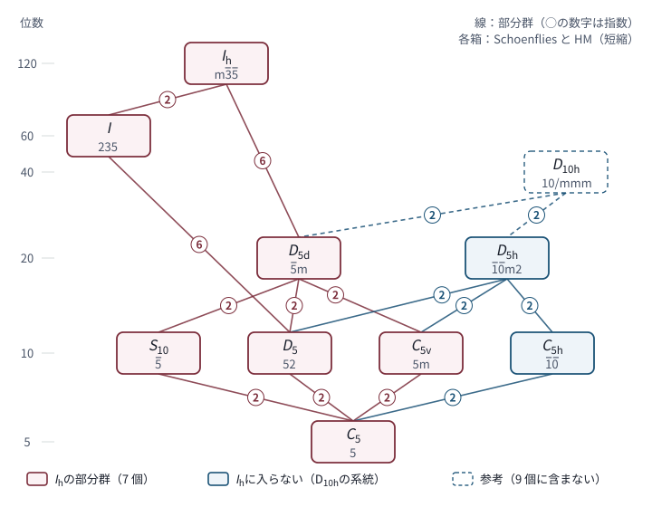
E.1.3 9 個で尽きることの証明
表E.2 の 9 個以外にないことは，有限回転群の分類と，鏡映・反転を加える拡大の場合分けで示せる．立方晶系の 5 個（$T,T_h,T_d,O,O_h$）を導くのと同じ筋道である．
定理E.1 5 回軸をもつ点群の分類
5 回軸をもつ点群は，共役を除いて $C_5$，$D_5$，$I$，$S_{10}$，$D_{5d}$，$I_h$，$C_{5h}$，$C_{5v}$，$D_{5h}$ の 9 個に限られる．
導出：極の数え上げ → 回転群の分類 → 反転を含む拡大と指数 2 の対
段階 1：有限回転群の分類．$G$ を位数 $N\ge2$ の $\mathrm{SO}(3)$ の有限部分群とする．恒等操作以外の回転は，回転軸と単位球面の交点（極，pole）を 2 個ずつもつ．極 $p$ を固定する回転の集合（固定群）の位数を $n_p\ (\ge2)$ とすると，$p$ を固定する恒等操作以外の回転は $n_p-1$ 個ある．「恒等操作以外の回転 $g$ と，$g$ が固定する極 $p$」の組 $(g,p)$ の数を 2 通りに数える．$g$ ごとに数えると $2(N-1)$ 個，$p$ ごとに数えると $\sum_p(n_p-1)$ 個である．$G$ は極を極に移すので，極は $G$ の軌道に分かれる．軌道 $i$ の極はどれも同じ $n_i$ をもち，軌道の大きさは $N/n_i$ である（軌道と固定群の関係，第6章 6.5節の Lagrange の定理と同じ数え方）．したがって
左辺は $1$ 以上 $2$ 未満，右辺の各項は $\tfrac12$ 以上 $1$ 未満である．項がすべて $1$ 未満で和が $1$ 以上だから軌道は 2 個以上，項がすべて $\tfrac12$ 以上で和が $2$ 未満だから軌道は 3 個以下である．
- 軌道が 2 個：$2/N=1/n_1+1/n_2$ で，$n_i\le N$ だから $n_1=n_2=N$．1 本の軸のまわりの回転だけからなる巡回群 $C_N$ である．
- 軌道が 3 個：$1/n_1+1/n_2+1/n_3=1+2/N>1$．$n_1\le n_2\le n_3$ とすると，$n_1\ge3$ なら左辺は $1$ 以下なので $n_1=2$．すると $1/n_2+1/n_3>\tfrac12$ で，$n_2=2$（$n_3$ は任意，$N=2n_3$）か，$n_2=3$ かつ $n_3=3,4,5$ である（$n_2\ge4$ では左辺が $\tfrac12$ 以下）．$N$ を式 \eqref{eq:E-1-poles} から求めると，$(2,2,n)$ は $N=2n$ の二面体群 $D_n$，$(2,3,3)$ は $N=12$ の正四面体群 $T$，$(2,3,4)$ は $N=24$ の正八面体群 $O$，$(2,3,5)$ は $N=60$ の正二十面体群 $I$ である．
各解に対応する群が共役を除いて一意であることは Klein による標準的な結果である．$T$ と $O$ は位数 12，24 が 5 で割り切れないので，Lagrange の定理により位数 5 の元をもたない．$C_n$ と $D_n$ が 5 回回転を含み，かつ最高次数が 5 であるのは $n=5$ のときだけである．よって5 回軸をもつ回転群は $C_5$，$D_5$，$I$ の 3 個である．
段階 2：鏡映・反転を含む群への拡大．$G$ を一般の点群とし，$H=G\cap\mathrm{SO}(3)$ をその回転部分群とする．行列式 $\det:G\to\{\pm1\}$ は準同型で，その核が $H$ だから，$H$ の指数は 1 か 2 である．$G$ に含まれる回転はすべて $H$ に含まれるので，$H$ は $C_5$，$D_5$，$I$ のどれかである．場合は次の 3 つで尽きる．
- (a) $G=H$：$C_5$，$D_5$，$I$ の 3 個．
- (b) 反転 $i$ を含む：$i$ はすべての元と可換で，$G\setminus H=iH$ だから $G=H\times C_i$．$S_{10}$，$D_{5d}$，$I_h$ の 3 個．
- (c) 回転でない元を含むが $i$ は含まない：回転でない元 $g$ をすべて $-g=i\,g$（これは回転）に置き換えると，集合 $K=H\cup\{-g\mid g\in G\setminus H\}$ ができる．写像 $g\mapsto(\det g)\,g$ は $-1$ がすべての元と可換なので準同型であり，$K$ は回転群である．もし $-g$ が $H$ に入れば $i=(-g)g^{-1}$ が $G$ に入って仮定に反するので，$\{-g\mid g\in G\setminus H\}$ は $H$ と交わらず，$K$ の位数は $2\abs{H}$ で，$K$ は $H$ を指数 2 で含む．逆に $G$ は対 $(K,H)$ から $G=H\cup i\,(K\setminus H)$ として一意に復元される．そこで段階 1 のリストから，$H$ を指数 2 で含む回転群 $K$ を探せばよい（$K$ 自体の最高次数は 5 を超えてよい）．
| $H$ | $H$ を指数 2 で含む回転群 $K$ | 得られる $G$ |
|---|---|---|
| $C_5$（位数 5） | $C_{10}$ | $C_{5h}$（$-C_2=\sigma_h$） |
| $C_5$ | $D_5$ | $C_{5v}$（$-C_2'=\sigma_v$） |
| $D_5$（位数 10） | $D_{10}$（位数 20 の回転群は $C_{20}$ と $D_{10}$ だけで，可換な $C_{20}$ は非可換な $D_5$ を含まない） | $D_{5h}$ |
| $I$（位数 60） | なし（位数 120 の回転群は $C_{120}$ と $D_{60}$ だけで，どちらも $I$ を含まない） | なし |
以上で $3+3+3=9$ 個となり，これで尽きる．∎
立方晶系では $O\supset T$（指数 2）があるので，場合 (c) から $T_d$ が生じ，$T,T_h,T_d,O,O_h$ の 5 個になる．$I$ にはそれを指数 2 で含む回転群がないので，正二十面体系は $I$ と $I_h$ の 2 個で打ち止めになる．
E.1.4 5 回回転を整数行列で書ける最小の次元
E.1.1 の結論は「3 次元の格子に 5 回軸はない」であって，「どの次元の格子にも 5 回軸はない」ではない．次元を上げれば，対角和が整数になる余地が生まれる．
例題E.1 5 回回転を 4 次元の整数行列で書く
平面上の正五角形の中心から頂点へ向かう 5 本の単位ベクトル $\bm e_0,\dots,\bm e_4$（隣どうしの角が $72^\circ$）を考える．(1) $\bm e_0+\bm e_1+\bm e_2+\bm e_3+\bm e_4=0$ を使い，$\bm e_0,\dots,\bm e_3$ を基底として $72^\circ$ 回転の行列を書け．(2) その対角和を求め，$2\cos72^\circ+2\cos144^\circ$ と比べよ．
解答：(1) $72^\circ$ 回転は 5 本を次のように移す．
$$ \bm e_0\to\bm e_1\to\bm e_2\to\bm e_3\to\bm e_4=-(\bm e_0+\bm e_1+\bm e_2+\bm e_3) $$列に像を並べると
$$ C=\begin{pmatrix}0&0&0&-1\\1&0&0&-1\\0&1&0&-1\\0&0&1&-1\end{pmatrix},\qquad C^5=E $$で，成分はすべて整数である．(2) $\Tr C=-1$ で整数．固有値は 4 つの原始 5 乗根 $\ee^{\pm2\pi\ii/5}$，$\ee^{\pm4\pi\ii/5}$ なので，対角和は $2\cos72^\circ+2\cos144^\circ=(\tau-1)-\tau=-1$ と一致する．1 本ずつでは無理数の $\tau-1$ と $-\tau$ が，組にすると整数になる．$\bm e_0,\dots,\bm e_3$ は平面内の 4 本だが，整数係数では互いに独立である（係数 $\tau$ の関係しかない）．十角形準結晶（E.2.5）の平面内の回折斑点に指数が 4 個要るのは，このためである．
例題E.1 の行列は，$\ee^{2\pi\ii/5}$ を根とする整数係数の最小多項式 $x^4+x^3+x^2+x+1$ の同伴行列である．一般に次の規則が成り立つ．
定理E.2 $n$ 回回転を整数行列で書ける最小の次元
位数 $n$ の回転（$R^n=E$ で，それより小さい冪では $E$ にならない）を整数行列で書ける最小の次元を $\psi(n)$ とする．$n$ が素数冪 $p^k$（ただし $p^k\ne2$）なら $\psi(n)$ は Euler 関数 $\varphi(n)$（$n$ 以下で $n$ と互いに素な正の整数の個数）に等しい．一般の $n$ では，$n$ を素数冪の積に分けて各因子の $\varphi$ を足す．ただし $n$ が奇数の 2 倍のときは因子 2 を数えない（和の公式では $\psi(2)=0$ と約束する．$n=2$ そのものは例外で，行列 $(-1)$ が使える）．
導出（要点）：なぜ Euler 関数が出てくるか
整数行列 $R$ の固有多項式は整数係数である．$R$ が原始 $n$ 乗根 $\zeta_n=\ee^{2\pi\ii/n}$ を固有値にもつなら，$\zeta_n$ の有理数係数の最小多項式（円分多項式 $\Phi_n(x)$，次数 $\varphi(n)$）が固有多項式を割り切るので，次元は $\varphi(n)$ 以上である．逆に $\Phi_n$ の同伴行列は $\varphi(n)$ 次元の整数行列で位数 $n$ をもつ（例題E.1）．位数が $n$ であるには，固有値の位数の最小公倍数が $n$ であればよいので，素数冪の因子ごとに同伴行列を並べて（ブロック対角）次元を足せば足りる．因子 2 を数えないのは，$-\zeta_m$（$m$ は奇数）が原始 $2m$ 乗根で，$\Phi_{2m}$ と $\Phi_m$ の次数が等しいからである．規則と最小性の証明は Bamberg ら（2003）にまとめられている（Hiller（1985）も参照）．
この規則で計算すると，3 次元以下で許されるのは $\psi(n)\le3$ の $n=1,2,3,4,6$ で（$\psi(3)=\psi(4)=\psi(6)=2$），式 \eqref{eq:E-1-trace} と一致する．5 回，8 回，10 回，12 回はどれも 4 次元で許される（$\psi(5)=\varphi(5)=4$，$\psi(8)=\varphi(8)=4$，$\psi(10)=\varphi(5)=4$（因子 2 は数えない），$\psi(12)=\varphi(4)+\varphi(3)=2+2$）．7 回は $\psi(7)=\varphi(7)=6$ で 6 次元が要る．実在の軸性準結晶が 8，10，12 回対称（E.2.5）であることは，この規則と符合する．
ただし，これは1 つの回転だけの話である．正二十面体群 $I$ には 5 回軸が 6 本，3 回軸が 10 本，2 回軸が 15 本あり，それらを同時に整数行列で書かなければならない．$I$ の 3 次元の既約表現 $T_1$（物理空間のベクトルの表現）の 5 回回転の指標は $\tau$ という無理数で，$T_1$ だけでは整数行列にならない．指標が $1-\tau$ のもう一つの 3 次元表現 $T_2$ と組にした $T_1\oplus T_2$ で初めて指標がすべて整数になるので，正二十面体の対称性には 6 次元が要る．これが E.4 節の主題である．
E.2 準結晶：周期をもたない長距離秩序
この節で分かること：準結晶は，鋭い回折斑点（長距離秩序）と 5 回対称を両立させる固体である．結晶学的制限は「格子」についての定理であり，「秩序」についての定理ではない．回折斑点を指数付けするには整数が 6 個要り，この「6」が高次元の正体である．高次元の空間は，物理空間 $E_\parallel$ と補空間 $E_\perp$ に分けて考える．
E.2.1 発見と，結晶の定義の改訂
Shechtman は 1982 年 4 月 8 日，急冷した Al–Mn 合金（Al 86 %，Mn 14 %）の電子線回折で，鋭い回折斑点をもちながら結晶では許されない対称性を示す図形を観測した．論文は 1984 年 11 月に発表された（Shechtman ら 1984）．この相は正二十面体の対称性をもち，5 回軸の方向から撮った電子回折図形は 10 回対称に見える．回折強度は $\abs{F(\GG)}=\abs{F(-\GG)}$（Friedel 則）を満たすので，回折図形には常に反転中心が加わり，5 回対称に反転を加えた 10 回対称の図形になるからである．第4章の囲み「準結晶 — 定理の抜け道」が述べる 5 回対称と，ここで述べる 10 回対称の回折図形は，同じことを軸の対称性と図形の対称性で言い分けたものである．
同じ 1984 年に Levine と Steinhardt は，周期的ではなく準周期的な並進秩序をもち，結晶では禁じられた回転対称を許す構造として準結晶（quasicrystal）の概念を提案した（Levine と Steinhardt 1984）．
この発見を受けて，国際結晶学連合（IUCr）は結晶の定義を改めた．1992 年に公表された執行委員会の報告（Acta Cryst. A48 の 928 ページ）で，非周期結晶の委員会（Commission on Aperiodic Crystals）は，結晶を「本質的に離散的な回折図形をもつ任意の固体」（"any solid having an essentially discrete diffraction diagram"）と定めた．周期性は結晶の定義から外され，回折図形が鋭い斑点からなることが定義になったのである．
E.2.2 長距離秩序と周期性は別物である
準結晶が「不思議」に見えるのは，長距離秩序と周期性を同じものと思っていたからである．E.1.1 の議論の出発点は「格子を格子に移す回転は整数行列」で，格子（周期性）を仮定している．準結晶は周期をもたないので，この仮定から外れる．それでいて原子の位置は遠くまで決まっていて（長距離秩序），回折図形は鋭い斑点になる．結晶学的制限は格子についての定理であり，秩序についての定理ではない．
周期をもたないのに鋭い回折斑点を与える最も簡単な例は，比が無理数の 2 つの周期を重ねた関数である．
$$ f(x)=\cos x+\cos\tau x $$は周期をもたない（$f(x+a)=f(x)$ となる $a$ はない）が，Fourier 成分は波数 $\pm1$，$\pm\tau$ の 4 本の鋭い線だけである．しかも $f$ は，2 次元で周期的な関数 $F(x,y)=\cos x+\cos y$ を直線 $y=\tau x$ に制限したもの $f(x)=F(x,\tau x)$ である．一般に，このような関数の Fourier 成分の波数は $m+n\tau$（$m,n$ は整数）の形をしていて，指数付けに整数が 2 個要る．非周期の 1 次元の関数が，2 次元の周期関数の切り口として書ける．これが E.3 節の切断射影法の考え方の原型である．
E.2.3 回折斑点の指数付けに整数が 6 個要る
正二十面体準結晶の回折斑点は，正二十面体の 6 本の 5 回軸の方向に沿う 6 本のベクトルの整数係数の和で指数付けされる．この付録では，5 回軸に沿う 6 本のベクトルを次のように取る（詳しくは E.4.1 節）．
$$ \begin{aligned} \bm a_1&=(1,\tau,0), & \bm a_2&=(-1,\tau,0), & \bm a_3&=(0,1,\tau),\\ \bm a_4&=(\tau,0,1), & \bm a_5&=(\tau,0,-1), & \bm a_6&=(0,1,-\tau) \end{aligned} $$6 本は 3 次元空間の中にあるので，実数係数では独立でない．実際，成分を足してみると次の関係がある（$2\tau-1=\sqrt5$，$\sqrt5\,\tau=\tau+2$ を使う．6 本の長さ・角・内積は E.4.1 の表E.8 とその下の箇条書きにまとめる）．
係数 $\sqrt5$ が無理数なので，6 本は整数（有理数）係数では互いに独立である．回折斑点の位置（逆格子ベクトル）も，5 回軸に沿う 6 本の基本ベクトル
$$ \bm a_i^{*}=\frac{2\pi}{\sqrt2\,a_{\mathrm{6D}}}\,\hat{\bm a}_i\qquad(\hat{\bm a}_i=\bm a_i/\abs{\bm a_i}) $$で書ける．$a_{\mathrm{6D}}$ は E.4.1 で導入する 6 次元格子の格子定数で，$\bm a_i^{*}$ は 6 次元の逆格子の基本ベクトルの物理空間成分にあたる（式 \eqref{eq:E-4-G}）．$\bm a_i^{*}$ は $\bm a_i$ に平行で長さがそろっているので，同じ関係 \eqref{eq:E-2-sqrt5} を満たす．斑点の位置は
$$ \GG=\sum_{i=1}^{6}h_i\,\bm a_i^*\qquad(h_i\in\mathbb Z) $$と書かれ，整数 $h_1,\dots,h_6$ の 6 個がそろって初めて斑点が 1 つに決まる．結晶の逆格子（第3章 3.1節）は 3 本の基本ベクトルの整数係数の和で尽くされたが，準結晶では「整数係数の和の集合」の独立な生成元が 6 個ある（数学の言葉では，階数 6 の $\mathbb Z$ 加群）．3 次元の中にある斑点の集合は稠密になるが，強い斑点はとびとびに見える（E.3.3 で 1 次元の例を計算する）．「6 次元」とは，まずこの指数の数のことである．
E.2.4 密度波の描像と，物理空間・補空間
原子の数密度を密度波の重ね合わせとして書く．
結晶では $\GG$ が 3 個の整数で番号づけられ，位相 $\varphi_{\GG}$ のうち自由に選べるものは 3 個で，それは結晶全体の並進 $\uu$ にあたる．準結晶では $\GG$ が 6 個の整数で番号づけられるので，自由エネルギーを変えずに独立に選べる位相が 6 個ある．3 個は並進 $\uu$ で，残りの 3 個が後で導入するフェイゾン変位 $\bm w$ である．この数え方は E.6.1 節で詳しく示し，E.7 節でこの 6 個の自由度と南部–Goldstone モードの関係を論じる．
6 個の整数で番号づけられる逆格子は，6 次元の周期的な格子の逆格子を 3 次元に射影したものと見なせる．そこで準結晶を，6 次元の周期構造を 3 次元の「切り口」で切ったものとして記述する．このとき 6 次元の空間を，原子が実際にある 3 次元の物理空間（physical space）$E_\parallel$ と，それに直交する 3 次元の補空間（perpendicular space）$E_\perp$ に分ける．補空間は文献によって垂直空間，内部空間（internal space）ともよばれる．物理空間の 6 本のベクトル $\bm a_i$ に対応して，補空間にも 6 本のベクトル $\bm b_i$ がある（E.4.1 節）．
注意：補空間は「余剰次元」だが，原子が動ける方向ではない
補空間を余剰次元とよぶこともあるが，素粒子論の余剰次元（空間そのものが高次元である）とは違い，原子が動ける方向ではない．原子はあくまで 3 次元の物理空間にあり，運動量も $3N$ 個（$N$ は原子数）である．補空間の座標が何を表すのかは，1 次元の例で具体的に見るのがよい（E.3.4）．
E.2.5 軸性の準結晶と正二十面体準結晶
準結晶には 2 種類ある．軸性の準結晶は，ある軸の方向には周期的で，それに垂直な平面内だけが準周期的なもので，8 回，10 回，12 回の回転対称をもつものが知られている．平面内の回折斑点の指数付けには，例題E.1 と同じ理由で整数が 4 個要る（$\psi(8)=\psi(10)=\psi(12)=4$）．周期的な軸の方向の 1 個を足して，5 次元の周期構造の切り口として記述される．正二十面体準結晶は 3 方向のすべてで準周期的で，6 次元の周期構造の切り口になる．以下この付録では，正二十面体準結晶を主に扱う．その前に，次元を「2 → 1」に下げた模型で，高次元の描像を手で確かめておく．
E.3 1 次元の模型：Fibonacci 鎖と切断射影法
この節で分かること：2 次元の正方格子を傾き $1/\tau$ の直線で切ると，長短 2 種の間隔が非周期に並ぶ 1 次元の点列（Fibonacci 鎖）ができる．原子の位置は床関数の式 1 本で書け，回折斑点は整数 2 個で指数付けされる．格子を物理空間の方向にずらすと全原子が一様に動き（並進），補空間の方向にずらすと一部の原子だけが跳ぶ（フェイゾン）．補空間は原子が動ける方向ではなく，並べ替えを番号づける座標である．6 次元の話は，これを「2 → 6，1 → 3」にしたものにすぎない．
E.3.1 正方格子を傾き $1/\tau$ の直線で切る
直観的な描像．方眼紙に格子点を打ち，原点を通る傾き $1/\tau$ の直線を引く．傾きが無理数なので，直線は原点以外の格子点を 1 つも通らない．直線の近くにある格子点を直線の上に落とす（射影する）と，直線上に点が並ぶ．格子の横の 1 歩を射影したものは長く，縦の 1 歩を射影したものは短い．どちらの歩みが現れるかは格子と直線の位置関係で決まり，周期的には繰り返さない．
式で書く．2 次元正方格子（格子定数 $a_{\mathrm{2D}}$，格子点 $a_{\mathrm{2D}}(n_1,n_2)$）の平面を，傾き $1/\tau$ の直線 $E_\parallel$（1 次元の物理空間）と，それに直交する直線 $E_\perp$（1 次元の補空間）に分ける．単位ベクトルは
$$ \hat{\bm e}_\parallel=\frac{(\tau,1)}{\sqrt{\tau+2}},\qquad \hat{\bm e}_\perp=\frac{(-1,\tau)}{\sqrt{\tau+2}}\qquad(1+\tau^2=\tau+2) $$で，格子点の 2 つの座標は，$S=a_{\mathrm{2D}}/\sqrt{\tau+2}$ とおくと
$$ x_\parallel=S\,(\tau n_1+n_2),\qquad x_\perp=S\,(-n_1+\tau n_2) $$である．$x_\perp$ の係数は $x_\parallel$ の係数で $\tau\to-1/\tau$ と置き換えたものの正の倍数になっていて，3 次元の $\bm b_i$ の取り方（E.4.1 節）と同じ向きの約束である．格子の $(1,0)$ 方向の 1 歩の $E_\parallel$ 射影が長い間隔 $L$，$(0,1)$ 方向の 1 歩の射影が短い間隔 $S$ で，
$$ L=\frac{a_{\mathrm{2D}}\,\tau}{\sqrt{\tau+2}}=\tau S,\qquad \frac{L}{S}=\tau $$となる．どの格子点を残すかは，各格子点に $E_\perp$ 方向の線分を付けて決める．この線分を原子面（occupation domain，atomic surface）とよぶ．長さ $W$ は単位正方形を $E_\perp$ に射影した長さに取る．
$$ W=\frac{a_{\mathrm{2D}}(1+\tau)}{\sqrt{\tau+2}}=L+S=\tau^2S $$$E_\parallel$（切断）が原子面と交わる点に原子を置く．これを切断射影法（cut-and-project method）という．同じことを「$E_\parallel$ に沿う幅 $W$ の帯（窓）に入る格子点を $E_\parallel$ に射影する」と言っても結果は同じで，こちらは射影法の言い方である．$W=L+S$ に取るのは，原子が重ならず，抜けもなく並ぶためである（E.3.2 の導出の囲み）．こうしてできる点列の間隔は L と S の 2 種類だけで，その比は $L/S=\tau$，並びは周期をもたない．
この並びがFibonacci 鎖（Fibonacci chain）である．置換 $\mathrm L\to\mathrm{LS}$，$\mathrm S\to\mathrm L$ を L から繰り返すと L，LS，LSL，LSLLS，LSLLSLSL，… となり，文字数が Fibonacci 数 1，2，3，5，8，… で増える．その極限の語（Fibonacci 語）が，切断射影でできる並びと一致する．Fibonacci 列になるのは傾きが $1/\tau$ のときである．傾きが別の無理数なら，やはり非周期の 2 種の間隔の列になるが，並びは違う（たとえば傾き $\sqrt2-1$ では，L の割合が $1/\sqrt2$ の SLLSLLSLLLSLL… という別の列になる）．
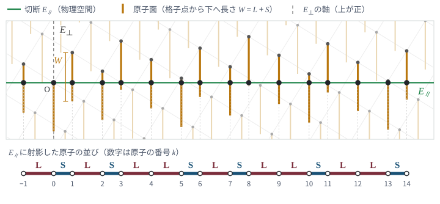
図E.2 では $E_\parallel$ を水平（右向きが正）に，$+\hat{\bm e}_\perp$ を上向きに描いたので，正方格子は $\arctan(1/\tau)=31.7^\circ$ だけ傾いて見える（方眼紙を回しただけで，鏡像ではない）．原子になるのは $0\le x_\perp ▶ 図E.2 は対話図で，この節を読みながら操作できる．使い方は次の 3 つである． 原子を左から $k=0,1,2,\dots$ と番号づけると，$k$ 番目の原子の位置は次の 1 本の式で書ける． $\lfloor y\rfloor$ は $y$ を超えない最大の整数（床関数）である．$u$ は並進（格子と原子面を $E_\parallel$ 方向にずらす量．すべての原子の位置に $u$ が足される），$w$ はフェイゾン変位で，格子と原子面を $+\hat{\bm e}_\perp$ 方向に $w$ だけずらす量である（切断は動かさない．図E.2 の対話図では，正の $w$ で格子が上に動く）．$u$ は床関数の外にあり，$w$ は中にある．この違いが E.3.4 の主題である．文献では $\varphi=w/W$（窓の幅で割ったフェイゾン変位．周期 1 の変数）を使うことが多いので，以下では $\varphi$ も併用する（E.1.4 の Euler 関数 $\varphi(n)$ や E.2.4 の密度波の位相 $\varphi_{\GG}$ とは別の量である）．この形の表式は切断射影法と等価である（Socolar と Steinhardt 1986，Boyle と Steinhardt 2022）． 導出：切断射影から床関数の式へ 原子 $k$ が格子点 $(n_1,n_2)$ の原子面にあるとし，$n_1+n_2=k$ と番号づける（$n_1$ は原子 $0$ から $k$ までの L の数，$n_2$ は S の数）．格子点の座標は $n_2=k-n_1$ を代入して となる（$L-S=(\tau-1)S$，$1+\tau=\tau^2$）．格子を $E_\perp$ 方向に $w$ ずらしたとき，原子のある条件は $0\le x_\perp+w で，$n_1$ は $k$ ごとにちょうど 1 つに決まる．これを $x_\parallel$ に代入し，並進 $u$ を足せば式 \eqref{eq:E-3-floor} になる．$n_1+n_2=k$ の格子点の列に沿って $n_1$ を 1 増やすと $x_\perp$ はちょうど $W$ だけ変わるので，$W=L+S$ の窓には各 $k$ について格子点がちょうど 1 個入る．これが，原子が重ならず抜けもない理由である． 表E.4 は，$S=1$，$L=\tau$，$u=0$ として式 \eqref{eq:E-3-floor} を計算したものである．$\varphi=0.1$ の列は E.3.4 で使う． 隣どうしの差を取ると，$\varphi=0$ の間隔の並びは SLSLLSLSLLSLL，$\varphi=0.1$ では SLSLLSLLSLSLL である．$\lfloor k/\tau\rfloor$ が 1 増えるところで間隔が L になる． 変調構造として見る．床関数を小数部分 $\mathrm{frac}(y)=y-\lfloor y\rfloor$ で書き直すと，式 \eqref{eq:E-3-floor} は次の形になる（$L-S=S/\tau$ を使う）． 第 1 項は間隔 $\bar d$ の平均格子，第 2 項は周期の比が無理数 $\tau$ の変調である．つまりFibonacci 鎖は，変調関数がのこぎり波（振幅 $S/\tau$ の不連続な関数）である変調構造だと言える．平均間隔の逆数 $1/\bar d=0.723607/S$ は，帯の単位長さあたりの格子点の数 $W/a_{\mathrm{2D}}^2$ に等しい．のこぎり波であること（不連続であること）が，E.3.5 で決定的な意味をもつ． 原子の位置 $x_k$ で回折を計算する．構造因子を $F(Q)=N^{-1}\sum_k\ee^{-\ii Qx_k}$ とすると，鋭い斑点は 2 次元の逆格子ベクトル $\GG=(2\pi/a_{\mathrm{2D}})(h,h')$（$h,h'$ は整数）の $E_\parallel$ 成分 $Q_\parallel$ のところに現れる．$\GG$ を $E_\parallel,E_\perp$ に分けると（$S=1$，$a_{\mathrm{2D}}=\sqrt{\tau+2}$） 導出：斑点の強度と位相 格子点 $\rr=a_{\mathrm{2D}}(n_1,n_2)$ では $\GG\cdot\rr=2\pi(hn_1+h'n_2)$ なので，$Q_\parallel x_\parallel+Q_\perp x_\perp=2\pi\times(\text{整数})$，すなわち $\ee^{-\ii Q_\parallel x_\parallel}=\ee^{\ii Q_\perp x_\perp}$ である．$x_k=x_\parallel+u$ だから，$Q=Q_\parallel$ で となる．$k/\tau$ の小数部分は $[0,1)$ に一様に分布するので，原子の $x_\perp$ は窓 $-w\le x_\perp を得る．$I/I_0=\abs{F}^2$ が式 \eqref{eq:E-3-diff} である．強度は $Q_\perp$ だけで決まり，位相は $u$ と $w$ でそれぞれ $-Q_\parallel u$，$-Q_\perp w=-Q_\perp\tau^2\varphi$ だけ変わる． 表E.5 から次のことが読み取れる． 図E.3 は，これらの斑点を強度の棒で描いたものである．式 \eqref{eq:E-3-diff} は 2 万原子の鎖で $F(Q)$ を直接足し合わせた結果と比べて確かめた．表の強い 12 個の強度の相対差は最大 $5\times10^{-4}$，$u=0.1$ と $\varphi=0.1$ による位相の変化の差は最大 $1.4\times10^{-4}$ rad である．斑点から外れた波数での強度は $10^{-9}$〜$2\times10^{-6}$ 程度で（どの波数を取るかで大きく変わる），斑点の強度と比べて無視できる． 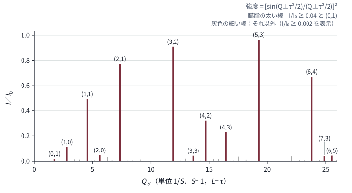 式 \eqref{eq:E-3-floor} の 2 つのパラメータ $u$ と $w$ は，同じ「ずらし」でも働きがまったく違う． この局所的な並べ替え（LS ↔ SL）をフェイゾンフリップ（phason flip）とよび，$w$ をフェイゾン変位（phason displacement）とよぶ．「フェイゾン（phason）」は「位相（phase）」に由来する語で，E.3.3 で見たとおり，$w$ は回折斑点の位相を変えるもう一つのパラメータだからである．同じ語は第35章 35.6節で不整合な電荷密度波の位相モードにも使われたが，両者の違いは E.3.5 と E.7.5 節で述べる．表E.6 は，$\varphi$ を増やしたときの並びと跳ぶ原子である． 跳んだ原子の割合は，十分長い鎖ではちょうど $\varphi=w/W$ になる（$k/\tau$ の小数部分が一様に分布するため．14 原子の範囲では $1/14$ 刻みなので一致しない）．▶ 図E.2 の「フェイゾン変位 $w$」のスライダーを $0$ から少しずつ右へ動かすと，$w=0.1W$ で $k=8$，$0.2W$ で $k=3,8$，$0.3W$ で $k=3,6,8,11$ に丸印が付き（読み取り欄は $k=-2$〜16 を数えるので，描画範囲の外の $k=-2,16$ なども加わる），読み取り欄の「跳んだ割合」が $w/W$ に一致していくのが見える．逆に $w$ を負にすると，原点の原子 $k=0$ がすぐに跳ぶ（原子面は格子点側の端（上端）を含み下端を含まない半開区間に取ってあり，$w=0$ では $k=0$ の原子が原子面の上端，すなわち格子点 O そのものにあるため．条件で言えば $x_\perp+w\ge0$ が $x_\perp=0$ の O で破れる）．図E.4 は $w=0.3W$ の場合を静止図にしたものである． 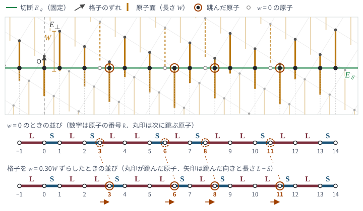 図E.4 の上の枠で起きていることは，次のとおりである．格子を $E_\perp$ 方向（図では上）にずらすと，原子面が格子と一緒に上へ動き，下端が切断を越えた原子面（格子点で言えば窓の上端 $x_\perp+w=W$ を越えたもの）からは原子が消える．代わりに，$(1,-1)$ だけ隣の格子点が窓の下端 $x_\perp+w=0$ を越えて入り，その原子面に切断が入る．格子ベクトル $(1,-1)$ の $E_\parallel$ 成分は $L-S$ なので，物理空間では「原子が $L-S$ だけ跳ぶ」ことになる． さらに $\varphi=1$（$w=W$）まで動かすと，全原子が 1 回ずつ跳び，式 \eqref{eq:E-3-floor} から $x_k$ がすべて $L-S$ だけ増える．つまり鎖全体が $L-S$ だけ並進したものになり，並びは $\varphi=0$ と同じである．$w$ は周期 $W$ の変数で，$(u,w)$ と $(u+L-S,\ w-W)$ は同じ構造を表す．これは 2 次元の格子を格子ベクトル $(1,-1)$ だけずらしても何も変わらないことの言い換えである． 跳ぶ前後の局所的な環境（LS と SL）はほとんど同じなので，エネルギーの差は小さい．しかし原子が $L-S$ という有限の距離を移るので，途中には障壁がある．長波長では $w$ を場所によってゆっくり変わる連続変数 $w(x)$（3 次元では $\bm w(\rr)$）として扱えるが，原子の尺度で見れば $w$ のずらしは離散的な跳躍の集まりである． 物理的意味：補空間の座標とは何か 並進 $u$ は原子を連続的に動かす．フェイゾン変位 $w$ は，原子を連続的には 1 個も動かさず，一部の原子に跳躍を起こさせて L と S の並べ方を変える．補空間 $E_\perp$ は原子が動ける方向ではなく，エネルギーをほとんど変えない並べ替えを番号づける座標である．6 次元の「補空間方向の変位」も同じで，実空間での原子の飛び移りのパターンを表す．E.2.4 の注意の囲みで述べたとおり，原子の自由度は 3 次元のまま増えていない． 式 \eqref{eq:E-3-modul} で見たように，Fibonacci 鎖は変調関数がのこぎり波の変調構造である．変調関数が滑らかな変調構造と比べると，フェイゾン変位の意味の違いがはっきりする． 変調が連続な場合．$x_k=\bar d\,k+A\sin2\pi(k/\tau+\varphi)$ のように，変調関数が滑らかな場合を考える．周期の比が無理数なので，これは不整合な変調構造である（不整合の定義は第35章の定義「整合と不整合」と同じ）．高次元の言葉では，原子面は $E_\perp$ 方向に切れ目なく続く波打った曲線になる．$\varphi$ を変えると，全原子が少しずつ連続的に動く．不整合なので，エネルギーは $\varphi$ によらない．したがって $\varphi$ の一様なずらしは振動数 0 の滑りモードで，長波長では慣性をもって伝搬しうる（位相モード）．実際，不整合相の $\mathrm{ThBr_4}$（転移温度 $T_c=95$ K）では，伝搬する位相モードと振幅モードが中性子散乱で観測されている（Bernard ら 1983）．これは第35章 35.6節の不整合な電荷密度波の位相モードと同じ種類のモードである． 変調が不連続な場合．のこぎり波の変調では，原子面は長さ $W$ の線分で，両端で途切れている．$\varphi$ を変えても大部分の原子は動かず，不連続点をまたいだ原子だけが有限の距離 $L-S$ を跳ぶ（E.3.4）．滑らかに少しずつ動く経路はないので，位相のずらしは跳躍の積み重ねになる． この違いは，Aubry と Le Daeron（1983）が離散的な Frenkel–Kontorova 模型で示した「解析性の破れ」として知られている．不整合な構造を表す変調関数（包絡関数）が連続なら，構造全体を連続的に滑らせることができ，振動数 0 の滑りモードがある．変調関数が不連続になると滑りモードは失われ，構造はピン止めされる（位相の励起にギャップが開く）．準結晶の原子面は，Fibonacci 鎖と同じく有限の大きさで途切れている．ただしこれは絶対零度で 1 つの極小のまわりを見たときの話で，飛び移りが熱的に起こる有限温度の長波長の振る舞いは E.7.2 で扱う． E.7 節では，この違いが南部–Goldstone モードの性格の違い，すなわち伝搬する位相モード（不整合変調構造）と拡散するフェイゾン（準結晶）の違いになり，それがフォノンとフェイゾンの違いにもつながることを見る．決め手は，ずらしが全原子の連続的な動きで実現して慣性をもつか，飛び移りでしか進まず慣性をもたないかである．その前に，E.4 節と E.5 節で「2 → 6，1 → 3」の拡張，すなわち正二十面体の 6 本の基底と 6 次元の空間群を調べる． この節で分かること：正二十面体の 6 本の 5 回軸を 6 次元の互いに直交する基底に対応させると，正二十面体の対称操作はすべて 6×6 の整数行列になる．同じ行列が物理空間 $E_\parallel$ では $72^\circ$ 回転，補空間 $E_\perp$ では $144^\circ$ 回転として働く．これは点群 $I$ の 2 つの 3 次元既約表現 $T_1$，$T_2$ を組にすることにあたる（E.1.4 の予告の答え）．最後に，正十二面体や菱形三十面体などの多面体が，この 6 次元格子の中でどう見えるかを立方晶と比べる． 物理空間の 6 本．規格化する前の座標で，次の 6 本をとる（表E.8）．どれも長さは $\sqrt{2+\tau}\approx1.902$ である（$1+\tau^2=2+\tau$）． 6 本の間には関係 $\bm a_2+\dots+\bm a_6=\sqrt5\,\bm a_1$（式 \eqref{eq:E-2-sqrt5}）があり，6 本が整数係数では互いに独立で回折の指数が 6 個要ることは E.2.3 で見た． 補空間の 6 本．補空間の基底 $\bm b_i$ は，$\bm a_i$ の座標の中の $\tau$ を $-1/\tau$ に置き換えて作る（表E.8 の下の行）．$\tau=(1+\sqrt5)/2$ と $-1/\tau=(1-\sqrt5)/2$ は $\sqrt5\to-\sqrt5$ で入れ替わるので，この置き換えを Galois 共役（Galois conjugation）という．長さはどれも $\sqrt{3-\tau}\approx1.176$ で，$|\bm a_i|/|\bm b_i|=\tau$ である．式 \eqref{eq:E-2-sqrt5} の Galois 共役をとると $\sqrt5$ の符号が変わり，$\bm b_2+\dots+\bm b_6=-\sqrt5\,\bm b_1$ となる．同じ理由で，単位ベクトルどうしの内積も符号が逆になる． 6 次元の基底．物理空間の単位ベクトル $\hat{\bm a}_i$ と補空間の単位ベクトル $\hat{\bm b}_i$ を 1 本ずつつないで，6 次元の基底を作る． $i\ne j$ では物理空間の部分 $\pm1/\sqrt5$ と補空間の部分 $\mp1/\sqrt5$ が打ち消し合う．つまり 6 本の $\bm d_i$ は 6 次元で互いに直交し，長さ $a_{\mathrm{6D}}$ の超立方格子の基底になる．物理成分と補空間成分の長さが等しい（等長な埋め込み）ことも，この付録の約束である．$\hat{\bm b}_i=\tau\bm b_i/\sqrt{2+\tau}$ なので，成分は表E.9 のように書ける（$\sqrt{4+2\tau}=2.690$）． たとえば $\bm d_1\cdot\bm d_2\propto\bigl(-1+\tau^2\bigr)+\bigl(-\tau^2+1\bigr)=0$，$\bm d_1\cdot\bm d_1\propto(1+\tau^2)+(\tau^2+1)=4+2\tau$ である．6 次元の逆格子の基底は $\bm d_i^*=2\pi\bm d_i/a_{\mathrm{6D}}^2$ で，整数 $h_1,\dots,h_6$ を指数とする逆格子ベクトル $\GG=\sum_ih_i\bm d_i^*$ を物理成分と補空間成分に分けると となる．$\GG_\parallel=\sum_ih_i\bm a_i^{*}$ と書けば，E.2.3 で定義した $\bm a_i^{*}$ がこの式の 6 本の基本ベクトルである．回折斑点は $\GG_\parallel$ の位置に現れ，6 個の指数 $(h_1,\dots,h_6)$ で名前が付く．E.5 節の反射条件はこの指数で書く．$\GG_\perp$ は E.6 節でフェイゾン変位 $\bm w$ と組になって位相に入る．図E.5 で 2 組の基底を見比べてほしい． 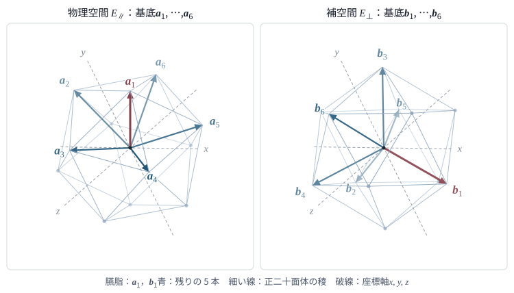 図E.5 の左では $\bm a_2,\dots,\bm a_6$ が $\bm a_1$ のまわりに傘のように開き，この順に隣り合う．右では $\bm b_2,\dots,\bm b_6$ が $\bm b_1$ と反対の側に開き（$\bm b_1$ との内積が負），しかも隣り合う順が入れ替わる．右で隣り合うのは $\bm b_2,\bm b_4,\bm b_6,\bm b_3,\bm b_5$ の順，つまり五角形の頂点を 1 つおきにたどる五芒星の順である．理由は E.4.2 で分かる． ▶ 対話図では，どちらかの図をドラッグするか，図を選んで矢印キーを押すと，2 枚が同じ回転で回る．$\bm a_1$ を真上から見下ろす向きにすると，左の 5 本は正五角形の順に，右の 5 本は五芒星の順に並ぶことが確かめられる． 回転群 $I$（位数 60）の類は $E$，$12C_5$，$12C_5^2$，$20C_3$，$15C_2$ の 5 つで，既約表現も 5 つある（次元 1，3，3，4，5．$1+9+9+16+25=60$）．Mulliken 記号の $G$，$H$ が 4 次元，5 次元の表現であることは第8章 §8.9 で述べた．指標表を表E.10 に示す． $T_1$ は 3 次元の回転そのもの（極性ベクトル $x,y,z$ の表現）で，角 $\theta$ の回転の指標は $1+2\cos\theta$ である．$C_5$ では $1+2\cos72^\circ=1+1/\tau=\tau$ と無理数になる．指標は基底によらないので，$T_1$ を整数行列で書くことはできない．これが 3 次元で 5 回軸をもつ格子が作れない理由である（第4章 §4.2 の結晶制限定理を指標の言葉で言い直したもの）． $T_2$ の指標は $T_1$ の指標の Galois 共役（$\tau\leftrightarrow1-\tau=-1/\tau$）である．したがって直和 $T_1\oplus T_2$ の指標は $\tau+(1-\tau)=1$ のように必ず整数になり，6 次元では整数行列で書ける（E.4.3）．これが E.1.4 で予告した「正二十面体群には 6 次元が要る」の中身である． $T_2$ の指標から，同じ操作が補空間でどれだけ回るかが読める．$C_5$ では $1+2\cos\theta=1-\tau$，すなわち $\cos\theta=-\tau/2$ で $\theta=144^\circ$ である．同じ操作が，物理空間では $72^\circ$ 回転，補空間では $144^\circ$ 回転として働く（表E.11）．図E.5 で隣り合う順が五角形から五芒星に変わったのはこのためである． 「6 次元の点群が物理空間と補空間を混ぜない」とは，どの操作も $E_\parallel$ の中のベクトルを $E_\parallel$ の中へ，$E_\perp$ の中のベクトルを $E_\perp$ の中へ移す，すなわち 6 次元の表現が $T_1\oplus T_2$ に分かれるという意味である．反転を含む $I_h$ では，反転が $\bm a_i\to-\bm a_i$，$\bm b_i\to-\bm b_i$ と働くので，6 次元の表現は $T_{1u}\oplus T_{2u}$ になる．$\bm b_i$ の方向の変位（フェイゾン変位）が $T_{2u}$ に属することの意味は E.6 節で論じる． 正二十面体の対称操作は，6 本の $\bm a_i$ を符号付きで入れ替えるだけである（表E.12）．12 本の $\pm\bm a_i$ は正二十面体の頂点の方向で，対称操作は頂点を頂点に移すからである． これらを 6×6 の符号付き置換行列 $M(g)$ で表す．列の約束を次のように決める． この約束で，4 つの操作の行列は次のとおりである． たとえば $C_5$ の第 2 列は第 3 行だけが 1 で，$\bm a_2\to\bm a_3$ を表す．反転は $-E$（$E$ は 6×6 の単位行列）なので $m_z=\bar1\times C_{2z}=-C_{2z}$ である．同じ行列が $\bm b_i$ にも，6 次元の $\bm d_i$ にもそのまま働く．すなわち $g\,\bm b_j=\sum_iM_{ij}\bm b_i$，$g\,\bm d_j=\sum_iM_{ij}\bm d_i$ である．ただし $\bm b_i$ に働くときの 3 次元の回転は，物理空間の回転とは別のもの（$C_5$ なら $144^\circ$）である． 例題E.2 $C_3$ が $\bm a_2$ と $\bm b_2$ を同じ規則で移すこと $C_3:(x,y,z)\to(z,x,y)$ を $\bm a_2$ と $\bm b_2$ に作用させ，どちらも「$-6$ 番目の基底」に移ることを確かめよ．また，$C_5$ についても同じ 3×3 行列が $E_\perp$ で使えるか考えよ． 解答：$C_3$ を作用させると となり，行列 $C_3$ の第 2 列（第 6 行が $-1$）のとおりである．$C_3$ の 3×3 行列は成分が 0 と 1 だけで $\tau$ を含まないので，Galois 共役をとっても変わらず，$E_\perp$ でも同じ 3×3 行列として働く（$C_{2z}$，$m_z$ も同じ）．一方，$\bm a_1$ 軸まわりの $72^\circ$ 回転の 3×3 行列は成分に $\tau$ を含み，Galois 共役をとると別の行列（$\bm b_1$ 軸まわりの $144^\circ$ 回転）になる．6×6 の整数行列は共通でも，$E_\perp$ での 3 次元の作用は $E_\parallel$ と同じとは限らない． 行列のトレースは，恒等 6，$C_5$ と $C_5^2$ は 1，$C_3$ は 0，$C_{2z}$ は $-2$ で，表E.10 の $T_1\oplus T_2$ の指標と一致する．$C_5$ のトレースが 1 なのは，E.1.1 で見たとおり，動かない基底が $\bm a_1$ だけだからである．$C_5$ と $C_3$ が生成する 6×6 整数行列の群を計算機で作ると位数 60 で，トレースの内訳は 6 が 1 個，1 が 24 個，0 が 20 個，$-2$ が 15 個になった．これは指標表の類の大きさ（$1$，$12+12$，$20$，$15$）とちょうど合う．6×6 行列から $E_\parallel$ と $E_\perp$ への 3×3 の作用を取り出すと，どれも直交行列（$C_5$ は $E_\parallel$ で $72^\circ$，$E_\perp$ で $144^\circ$）になることも確かめた（表E.11）． 立方体の基底は $[100]$，$[010]$，$[001]$ である．では正十二面体や，30 面・32 頂点の菱形三十面体の「基底」は何か．立方体の 3 辺が基底になるのは，立方体が並進だけで空間を埋めるからである．正十二面体も正二十面体も空間を埋めないので，多面体の辺がそのまま基底になるという関係は成り立たない．答えを決めるのは対称性で，正二十面体の対称性をもつ多面体なら，どれも同じ 6 本 $\bm a_i$ が基底になる． 正十二面体．12 枚の正五角形の面の中心は $\pm\bm a_i$ の方向（5 回軸）を向く．20 個の頂点（3 回軸．$\pm$ を同一視して 10 方向）は，その頂点を囲む 3 枚の面のベクトルの和で，表E.13 のように書ける． 頂点が生成する 6 次元格子．多面体の頂点を 60 個の回転で作り，$\bm a_i$ についての 6 個の座標で表して，それらが整数係数の和で生成する格子の単位胞の体積（$\mathbb Z^6$ を 1 とする）を整数の掃き出しで求めた（表E.14）． 二十・十二面体の頂点は，隣り合う組では $\bm a_i-\bm a_j$，隣り合わない組では $\bm a_i+\bm a_j$ の形（例：$\bm a_1-\bm a_3=(1,1/\tau,-\tau)$）で，これらの和で作れるのは 6 個の整数係数の和が偶数のベクトルだけである．立方晶で $\tfrac12[110]$ が面心格子を作るのと同じ関係である．正十二面体の頂点が作る格子は，E.5.1 のスケール変換 $M$ を使うと $M^{-2}\mathbb Z^6$ と書け，P と同じ型で $E_\parallel$ の長さが $1/\tau^2$ 倍になったものである． 6 次元の単位胞の影：菱形三十面体．6 次元の単位立方体の 64 個の頂点 $\sum_{i\in A}\bm a_i$（$A$ は $\{1,\dots,6\}$ の部分集合）を $E_\parallel$ に射影すると，その凸包は 6 本の線分 $[\bm 0,\bm a_i]$ の Minkowski 和で，菱形三十面体（rhombic triacontahedron）になる（図E.6 (a)）． 空間を埋めるタイル：2 種類の菱面体．6 本から 3 本を選ぶと 20 通りの菱面体ができるが，形は 2 種類しかない（表E.15）． 体積比は $\tau$ で，菱形三十面体の体積はちょうど $10\times2\tau^2+10\times2\tau=20\tau^3$ になる．立方体 1 種類を周期的に並べる代わりに，この 2 種類の菱面体を非周期的に並べて空間を埋めたものが 3 次元の Penrose タイリングである（Kramer と Neri（1984），Katz と Duneau（1986））． 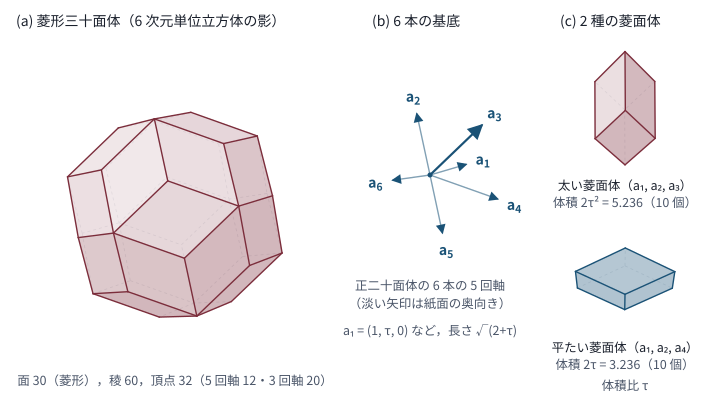 表E.16 に，立方体の対称性との対比をまとめる． 立方晶と違うのは 3 回軸の行である．立方晶では 3 回軸の方向のベクトルが体心格子という別の格子を作るが，正二十面体では長さが違うだけの同じ型の単純格子に戻る．6 次元の体心格子は，5 回軸と 3 回軸の両方のベクトルを合わせて初めてできる．こうして現れた P，F，I の 3 種類が，次の節で空間群を数える出発点になる． この節で分かること：正二十面体準結晶の対称性は 6 次元の空間群で記述できる．6 次元の空間群は全部で約 2,890 万個ある（Plesken と Schulz の数え上げ）が，「6 次元の点群が正二十面体群（$235$ または $m\bar3\bar5$）で，物理空間と補空間を混ぜない」という要求を課すと，格子は P，I，F の 3 種，空間群は 11 個（共型 6，非共型 5）に絞られる．6 本の基底を選ぶこと（E.4 節）は舞台を用意する段階で，11 個に絞り込むのは点群についての対称性の要求である．記号は 3 次元の Hermann–Mauguin（HM）記号をそのまま使い，読み方は第5章 §5.4 と同じである． 比較のため，ほかの「拡張された空間群」の数も挙げておく．3 次元の空間群は 230 個（第5章 §5.7），時間反転を加えた磁気空間群は 1651 個（Litvin 2008），不整合変調構造を記述する (3+1) 次元の超空間群は 775 個（Stokes，Campbell，van Smaalen 2011）である．高次元の空間群で非周期結晶を記述するときの総称を超空間群（superspace group）というが，準結晶の文脈では「6 次元空間群」「正二十面体空間群」とよぶことが多い．この付録でも 6 次元空間群と書く． 正二十面体の対称性をもつ 6 次元格子は，ちょうど 3 種類である（Rokhsar，Mermin，Wright 1987）．座標は $\bm d_i$ を基底とし，長さの単位を $a_{\mathrm{6D}}$ とする． 格子の点の集合としては $\mathrm I\supset\mathrm P\supset\mathrm F$ で，それぞれ指数 2 である（単位胞の体積が $\tfrac12$，1，2）．3 つとも，60 個の回転，反転，鏡映 $m_z$ のすべてで自分自身に移ることを確かめた．反射条件は，格子ベクトル $\bm t$ との積 $\bm h\cdot\bm t$ がすべて整数になる指数だけが残る，という 3 次元と同じ理屈（第3章 §3.5.1）で決まる．たとえば I では $\bm h\cdot\tfrac12(1,\dots,1)=\tfrac12\sum_ih_i$ が整数でなければならない． 注意：P，I，F は直接空間の格子に付けた記号である P，I，F は，直接空間の 6 次元格子に付ける場合と，逆格子に付ける場合がある．直接空間で F 型の構造は，逆格子が体心型になる（Ebalard と Spaepen（1989）の論文の題名は，i-Al-Cu-Fe の逆格子を体心型とよんでいる）．この付録では一貫して直接空間の格子の型を書く． スケール対称性．準結晶には結晶にない種類の対称性がある．6×6 行列 $S$ を，$\bm a_i$ と $\bm a_j$ が隣り合えば $S_{ij}=+1$，隣り合わなければ $-1$，対角は 0 と定義する（E.3 の短い間隔 $S$ とは別の記号である．次の $M$ も E.4.3 の $M(g)$ とは別のもので，$E$ は 6×6 の単位行列）．$\bm a_1$ は他の 5 本すべてと隣り合うので，第 1 行と第 1 列の非対角成分はすべて $+1$ である． $S$ の第 1 列は $S\bm a_1=\bm a_2+\dots+\bm a_6=\sqrt5\,\bm a_1$（式 \eqref{eq:E-2-sqrt5}）を表す．実際，$S$ は 60 個の回転すべてと可換で，物理空間では $+\sqrt5$ 倍，補空間では（Galois 共役なので）$-\sqrt5$ 倍として働く．これから が成り立つ．2 番目の式は から分かり，$\tau^2=\tau+1$ と同じ式である．すなわち $M$ は物理空間を $\tau$ 倍に引き伸ばし，同時に補空間を $-1/\tau$ 倍に縮める．準結晶の自己相似性（$\tau$ 倍に拡大すると同じ模様が現れる）を 6 次元で書いたものである． $M$ は 6 次元の長さを保たない（直交行列でない）ので，空間群の元ではない．しかし，見かけは違うが同じものとみなすべき空間群を同一視するときに効く（E.5.4，E.5.5）． 記号は［格子記号 P／I／F］＋［3 つの位置］でできている（表E.18）． 文字が 3 つしかないのは，正二十面体群の回転軸が 2 回・3 回・5 回の 3 種類で尽きるからである．恒等以外の回転は $15+20+24=59$ 個で，位数 60 から恒等を除いた数とちょうど一致する．HM 記号では互いに等価な軸の組ごとに代表を 1 本だけ書くので（15 本の 2 回軸は群の操作で互いに移り合う），1 種類につき 1 文字で済む．立方晶の $m\bar3m$ の 3 つの位置（$\langle100\rangle$ 3 本，$\langle111\rangle$ 4 本，$\langle110\rangle$ 6 本）も $3\times3+4\times2+6\times1=23=24-1$ と同じ数え方になる（第4章 §4.5）． 6 次元には方向がずっと多いのに 3 次元の記号で足りるのは，6 次元の操作が物理空間での 3 次元の操作から一意に決まるからである（同じ 6×6 行列が $E_\perp$ での作用も決める．E.4.3）．6 次元らしさが現れるのは，格子記号と，らせん・グライドの並進が補空間の成分をもつ点だけである． 例題E.3 $F\,2/n\,\bar3\,\bar5$ と $P235_1$ を 1 文字ずつ読む 2 つの記号を，格子記号と 3 つの位置に分けて読め． 解答：$F\,2/n\,\bar3\,\bar5$（短縮形 $Fn\bar3\bar5$）は，F：面心の 6 次元格子（E.5.1）．$2/n$：15 本の 2 回軸と，それぞれに垂直な面．$n$ は鏡映ではなくグライド面で，非共型の印．$\bar3$：10 本の 3 回回反軸．$\bar5$：6 本の 5 回回反軸（$\bm a_1,\dots,\bm a_6$ の方向）．点群は $m\bar3\bar5$ である．$P235_1$ は，P：単純格子．$2$：2 回軸（回転だけ）．$3$：3 回軸（回転だけ）．$5_1$：5 回らせん軸で，非共型の印．点群は $235$ である． 短縮記号と完全記号の対応は，$Pm\bar3\bar5=P\,2/m\,\bar3\,\bar5$，$Im\bar3\bar5=I\,2/m\,\bar3\,\bar5$，$Fm\bar3\bar5=F\,2/m\,\bar3\,\bar5$，$Pn\bar3\bar5=P\,2/n\,\bar3\,\bar5$，$Fn\bar3\bar5=F\,2/n\,\bar3\,\bar5$ である．点群 $235$ の 6 個は短縮形と完全形が同じである．なお，グライドを $n$ で表すのはこの付録の約束で，文献によって記号が異なる（Yamamoto は $Pm_{xy}\bar3\bar5$ のように添字で書く，など）． 格子 3 種と点群 2 種の組で共型の空間群が $3\times2=6$ 個できる．これに非共型の 5 個が加わって 11 個になる（表E.19）．11 個であること（格子 3，点群 2）は文献で確かめられており（Levitov と Rhyner 1988，Rokhsar，Wright，Mermin 1988），非共型が 5 個であることは本付録の検算（E.5.5）による（文献でも 5 個とされる）． F の並進は，一辺 $2a_{\mathrm{6D}}$ の胞を単位にすると半分になる（No. 6 は $\tfrac1{10}(1,\dots,1)$，No. 11 のグライドは $\tfrac14(1,\dots,1)$，反転中心は $\tfrac18(1,\dots,1)$）．「立方晶での類似」は記号と構造の対応を示す類推である． 表で目につくのは，I 格子には点群 $m\bar3\bar5$ の非共型の群がない（「$In\bar3\bar5$」は存在しない）ことである．理由は E.5.4 で分かる． 3 次元と同じく，非共型（ノンシンモルフィック）の空間群は，どう原点をとっても並進部分をゼロにできない操作を含む（第5章 §5.2 のらせん軸とグライド面）．空間群の操作は Seitz 記号 $\{R|\bm t\}$（$\bm x\to R\bm x+\bm t$）で書き，積は $\{R_1|\bm t_1\}\{R_2|\bm t_2\}=\{R_1R_2|R_1\bm t_2+\bm t_1\}$ である（第5章 §5.1.3）． 5 回らせん $5_1$．$72^\circ$ 回転と，その軸で不変な格子ベクトルの $1/5$ の並進の組で，5 回繰り返すと格子並進になる． この並進は物理空間の成分と補空間の成分（フェイゾン方向のずれ）の両方をもつ．たとえば $\tfrac15\bm d_1$ は $E_\parallel$ で $\hat{\bm a}_1$ 方向，$E_\perp$ で $\hat{\bm b}_1$ 方向を向く．したがって物理空間だけを見ても普通のらせん軸には見えない．また，結晶では $4_1$ と $4_3$ は鏡像の関係にある別の操作だが，準結晶では $5_1,5_2,5_3,5_4$ がスケール変換（P は $M^3$，I と F は $M$）で互いに移り合うので 1 種類に数える．これをスケール同値（scale equivalence）という（Rokhsar，Wright，Mermin 1988）．計算では，らせんの類は $\mathbb Z/5$ をなし，P では $M^3$ が 2 倍，I と F では $M$ が 3 倍として働いて，0 以外の 4 類をすべて移り合わせることを確かめた． グライド $n$：反転中心のずれ．グライド $n$ をもつ構造は，「235 の対称性をもつ点」と「反転中心」がずれた構造である．反転を $\{\bar1|\bm v\}$（$\bm x\to-\bm x+\bm v$）と書くと，これが $235$ の回転と組んで群になるためには，$\bm v$ は 235 の対称性をもつ点，すなわちすべての回転 $g$ について $(g-1)\bm v$ が格子ベクトルになる点でなければならない（表E.20）． 鏡映は反転と 2 回回転の積 $m_z=\bar1\times C_{2z}$ なので，Seitz 記号の積の規則から となり，反転の並進 $\bm v$ がそのままグライドの並進になる．$\bm v\propto(1,\dots,1)$ は $m_z$ で動かない（$m_z$ は $\bm a_3\leftrightarrow\bm a_6$，$\bm a_4\leftrightarrow\bm a_5$ と入れ替えるだけ）ので，並進は鏡映面に平行で，2 回繰り返すと $\{E|2\bm v\}=\{E|(1,\dots,1)\}$ と格子並進になる．反転中心はその半分 $\bm v/2$ にある（P で $\tfrac14(1,\dots,1)$，F では一辺 $2a_{\mathrm{6D}}$ の胞の単位で $\tfrac18(1,\dots,1)$）．$Pn\bar3$ の $n$ グライド，$Fd\bar3$ の $d$ グライドにあたる．なお 6 次元の $m_z$ は，$E_\parallel$ と $E_\perp$ のそれぞれで $z$ 成分を反転する操作で（トレース 2），動かない部分空間は 4 次元である．「鏡映面」は 3 次元の言葉を借りた呼び名である． 反射条件．非共型の操作は特定の反射を消す．3 次元の消滅則（第5章 §5.5）と同じ理屈を 6 次元で書くと次のようになる． 導出：$\{R|\bm t\}$ が消す反射 6 次元の密度を格子座標 $\bm x$ で $\rho(\bm x)=\sum_{\bm h}\rho_{\bm h}\,\ee^{2\pi\ii\,\bm h\cdot\bm x}$ と展開する（$\bm h=(h_1,\dots,h_6)$ は整数の指数）．構造が $\{R|\bm t\}$ で不変なら $\rho(R\bm x+\bm t)=\rho(\bm x)$ である．$R$ は符号付き置換で直交行列なので $\bm h\cdot R\bm x=(R^{-1}\bm h)\cdot\bm x$ となり，係数を比べると が得られる．$R\bm h=\bm h$（$R$ で不変な反射）では $\rho_{\bm h}\bigl(1-\ee^{-2\pi\ii\,\bm h\cdot\bm t}\bigr)=0$ なので，$\bm h\cdot\bm t$ が整数でない反射は強度が 0 になる． $C_5$ で不変な指数は $(h_1,h_2,h_2,h_2,h_2,h_2)$（5 回軸 $\bm a_1$ に沿う反射），$m_z$ で不変な指数は $(h_1,h_2,h_3,h_4,h_4,h_3)$（$z$ に垂直な鏡映面内の反射）である．これに表E.19 の並進を入れると表E.21 が得られる．たとえば $P235_1$ では $\bm h\cdot\tfrac15(1,0,\dots,0)=h_1/5$ が整数でなければならず，$h_1=5n$ となる．$Pn\bar3\bar5$ では $\bm h\cdot\tfrac12(1,\dots,1)=\tfrac12(h_1+h_2+2h_3+2h_4)$ から $h_1+h_2=2n$ となる． らせんの群を完全に指定するには，$C_5$ だけでなく $C_3$ にも並進を付ける必要がある．$C_5$ と $C_3$ は $C_5^5=C_3^3=(C_5C_3)^2=1$ を満たし，$235$ を生成する．並進を付けた操作でこの 3 つの関係式を計算すると，いずれも格子並進になる組を厳密計算で求めた（表E.22）．$C_3$ の並進は原点のとり方で変わり，一意ではない． 結論を先に述べる． 立方晶の $m\bar3$ には 7 個の空間群（$Pm\bar3$，$Pn\bar3$，$Fm\bar3$，$Fd\bar3$，$Im\bar3$，$Pa\bar3$，$Ia\bar3$）があるが，$Pa\bar3$ と $Ia\bar3$ にあたるもの（$2_1$ らせんに由来する）は正二十面体では現れない． 補足（発展）：群コホモロジーによる数え上げ 格子 $L$（E.3 の長い間隔 $L$ とは別）と点群 $G$ を決めたとき，空間群は，点群の各元 $g$ に並進 $\bm t(g)$ を割り当てる仕方で決まる．割り当ては，積が積に移る（$\bm t(gh)\equiv g\,\bm t(h)+\bm t(g)$，格子ベクトルを除いて）という条件を満たさなければならず，原点を $\bm s$ だけずらすと $\bm t(g)\to\bm t(g)+(g-1)\bm s$ と変わる．条件を満たす割り当てを原点の移動で同一視した類が空間群の類で，数学では群コホモロジー $H^2(G,L)$（$H^1(G,\mathbb R^6/L)$ と同じもの）で分類される．$235$ の位数は $60=2^2\cdot3\cdot5$ なので，並進の分母は 60 を割り切り，類は $p=2,3,5$ の部分に分かれる． この付録では，$235=A_5$ を表示 $\langle x,y\mid x^2=y^3=(xy)^5=1\rangle$ で与え，$L/pL$（$\mathbb Z/p$ 係数の 6 次元ベクトル空間）上の $H^1(A_5,L/pL)$ の次元を有限体 $\mathbb F_p$ 上の掃き出しで厳密に求めた（表E.24）． $H^2(G,L)$ との関係．空間群の類のうち $p$ 倍で消える部分の次元は，$H^1(A_5,L/pL)$ の次元から「235 の対称性をもつ点（位数 $p$ のもの）への原点移動で消える分」を引いたものになる．P では $p=2$ の対称点が 1 個（体心），F では 2 次元分（原点以外の 3 点），I では 0 で，$p=3,5$ ではどの格子でも 0 である．表の読み方は次のとおり． らせんについては，生成元を $\langle c,y\mid c^5=y^3=(cy)^2=1\rangle$（$c=C_5$，$y=C_3$）に取り直し，表E.22 の並進が「関係式を満たすが，原点の移動では消せない」組であることも直接確かめた．なお，ここで確かめたのはこの付録の基底での計算で，記号と反射条件の表を原典の表と 1 対 1 で突き合わせてはいない． 3 次元の 32 点群と同じように，正二十面体群からも対称性を下げた部分群の系列が得られる（部分群と指数は第6章 §6.5）．$I_h$（位数 120）の部分群は，共役なものを同一視すると 22 個ある．極大部分群を表E.25 に示す． これより下は，通常の 32 点群の部分群の図と同じ形で続く．ここから 2 つのことが読みとれる． この関係を描いたのが E.1 節の図E.1 である．$I_h$ と $D_{10h}$ の共通部分は $\bar5m$（$D_{5d}$，位数 20）で，これを 3×3 行列で群を生成して確かめた．正二十面体相と十角形相は，一方が他方の部分群という関係にはなく，共通の部分群 $D_{5d}$ を介してつながる．（図E.1 の $C_{5v}\subset D_{5h}$ の $C_{5v}$ は，$I_h$ に入る $C_{5v}$ とは鏡映面の向きが違う．線は共役を除いた抽象的な包含として引いてある．） 空間群のレベル．3 次元と同じく 2 種類の部分群がある． フェイゾンひずみと近似結晶．一様なフェイゾンひずみは $T_1\otimes T_2=G\oplus H$ のように変換する（E.6.5 で導く）．これが有限の値で凍結すると対称性が下がり，正二十面体相から立方（$m\bar3$），五方（$\bar5m$），三方（$\bar3m$）の相に落ちると考えられる（フェイゾン弾性の不安定は E.7.6 節）．一方，第一原理計算でよく使う近似結晶（approximant）は，厳密には 6 次元空間群の部分群ではない．切断の傾きを無理数から有理数にずらして得られる 3 次元の周期構造で，点群は $I_h$ の極大な立方部分群 $T_h$（$m\bar3$）の系統に落ちる．実際，Tsai 型の 1/1 近似結晶（$\mathrm{YbCd_6}$ など）の空間群は $Im\bar3$，2/1 近似結晶（$\mathrm{YbCd_{5.8}}$，$\mathrm{Ca_{13}Cd_{76}}$ など）は $Pa\bar3$ である（Yamada ら 2021）． 数学としてはどれも有限の計算で完結するが，3 次元の国際表 Vol. A1（付録B §B.1 の国際表の部分群版）のように，11 個それぞれの極大部分群を網羅した公式の表があるかどうかは，この付録では確かめていない． これまでに報告された正二十面体準結晶は，すべて P 型か F 型である． 空間群としては，F 型の物質には $Fm\bar3\bar5$，P 型の物質には $Pm\bar3\bar5$（いずれも共型）が当てはめられることが多いとされる．非共型の空間群をもつ正二十面体準結晶が実験で確立した例は，この付録では確かめられなかった．11 個のうち実物質で使われているのはごく一部だが，構造解析は「6 次元空間群と，その中の原子面（occupation domain．E.3 節の窓の 3 次元版）の位置と形を決める作業」になる，という見方は共通である． この節で分かること：正二十面体準結晶の基底状態は，6 個の連続なパラメータについて縮退している．その 6 個は，物理空間の一様な並進 $\uu$（3 個）と，補空間方向のずらし $\bm w$（3 個）に分かれる．この節では，その 6 という数を密度波の位相から数え，$\bm w$ が極性ベクトルでも軸性ベクトルでもない「第 3 の種類のベクトル」であることを対称性で確かめ，弾性定数が 5 個になることを指標の計算で示す．E.7 節で，この縮退が南部–Goldstone モードとどう結びつくかを見る． E.2 節（E.2.4）で述べたように，準結晶の密度は密度波の重ね合わせ \eqref{eq:E-2-density}，$\rho(\rr)=\sum_{\GG}\rho_{\GG}\ee^{\ii\GG\cdot\rr}$，$\rho_{\GG}=\abs{\rho_{\GG}}\ee^{\ii\varphi_{\GG}}$ で書ける．そこでは「独立に選べる位相が 6 個ある」ことを予告だけした．ここでその数え方を示す． 和をとる $\GG$ は回折斑点の位置で，正二十面体準結晶では $\GG=\sum_{i=1}^{6}h_i\bm a_i^{*}$（$h_i$ は整数）と整数 6 個で指数付けされる（$\bm a_i^{*}$ の定義は E.2.3，6 次元の逆格子との関係は式 \eqref{eq:E-4-G}）．$\rho$ が実数なので $\rho_{-\GG}=\rho_{\GG}^{*}$，すなわち $\varphi_{-\GG}=-\varphi_{\GG}$ である．問題は，自由エネルギーを変えずに独立に選べる位相 $\varphi_{\GG}$ がいくつあるかである． ステップ1：並進不変性からの制約．自由エネルギー $F$ を $\rho_{\GG}$ の冪で展開すると，各項は $\rho_{\GG_1}\rho_{\GG_2}\cdots\rho_{\GG_n}$ の形をしている．試料全体を $\bm a$ だけ平行移動すると $\rho_{\GG}\to\rho_{\GG}\ee^{-\ii\GG\cdot\bm a}$ と変わるので，この項は $\ee^{-\ii(\GG_1+\cdots+\GG_n)\cdot\bm a}$ 倍になる．空間は一様で $F$ は平行移動で変わらないから，$F$ に現れる項は を満たすものだけである． ステップ2：位相を「加法的に」変えても $F$ は変わらない．$\GG$ の関数 $\chi(\GG)$ で，加法的な（$\chi(\GG+\GG')=\chi(\GG)+\chi(\GG')$ を満たす）ものを考え，すべての位相を と変える．ステップ1の各項の位相は だけ変わる．つまり，加法的な $\chi$ による位相の変更は，どれも $F$ を変えない．$\chi(-\GG)=-\chi(\GG)$ なので，$\rho$ が実数であることも保たれる． 逆に，$F$ には一般に $\GG_1+\GG_2+\GG_3=\bm 0$ を満たす 3 次の項 $\rho_{\GG_1}\rho_{\GG_2}\rho_{\GG_3}$ なども含まれ，その項は位相の和 $\varphi_{\GG_1}+\varphi_{\GG_2}+\varphi_{\GG_3}$ を $F$ が最小になる値に固定する．そのような項が十分にあれば，$F$ を変えずに連続的に動かせる位相の変更は加法的なものに限られる（ここでは証明せず，仮定とする）．したがって連続な縮退の数は，加法的な $\chi$ が何個の実数で決まるかで数えられる． ステップ3：加法的な $\chi$ はいくつの実数で決まるか．$\GG$ 全体の集合は整数係数の 1 次結合で閉じている（$\mathbb Z$ 加群）．その基底の本数，すなわち階数（rank）を $D$ とすると，加法的な $\chi$ は基底の $D$ 本での値で決まり，その値は自由に選べる． 準結晶の 6 個の実数は，6 次元の言葉でまとめるとすっきりする．$\GG$ を 6 次元の逆格子ベクトル $\GG_\parallel\oplus\GG_\perp$ とみなし（E.4 節），6 次元の変位 $\bm U=\uu\oplus\bm w$ を使うと と書ける．ここで $\uu$ は物理空間 $E_\parallel$ の 3 成分，$\bm w$ は補空間 $E_\perp$ の 3 成分で，どちらも 6 次元の基底 $\bm d_i$ と同じ長さの単位で測る（E.4 節）．$\bm d_i^{*}$ は 6 次元空間を張るので，6 個の $\theta_i$ と $\bm U$ は 1 対 1 に対応する．結論は次のとおりである． 正二十面体準結晶の基底状態は，$\uu$ と $\bm w$ の 6 個の連続なパラメータについて縮退している．$\uu$ をずらすのは試料全体の平行移動で，結晶にもある．$\bm w$ をずらすのは準結晶に固有で，E.3 節（E.3.4）の 1 次元のフェイゾン変位 $w$ の 3 次元版である．これと区別して，$\uu$ をフォノン変位（phonon displacement）とよぶ．「準結晶は 6 次元の結晶である」という言い方の中身は，独立な位相の数が 6 個あるということで，原子が 6 次元の中を動くという意味ではない． なぜ：1 次元の鎖なのに位相が 2 個ある E.3 節の Fibonacci 鎖では，回折斑点が整数 2 個 $(h,h')$ で指数付けされ（E.3.3），並進 $u$ は各斑点の位相を $-Q_\parallel u$ だけ，フェイゾン変位 $w$ は $-Q_\perp w$ だけ変えた．2 個の基本の斑点の位相を，$(u,w)$ の 2 個で独立に動かせる．式 \eqref{eq:E-6-phase} はこれの 3 次元版で，$Q_\parallel,Q_\perp$ が $\GG_\parallel,\GG_\perp$ に，2 個が 6 個になっただけである． E.6.1 の議論は密度波の自由エネルギーの範囲での話である．原子の配置に戻ると，同じことを次のように言える． 定義：局所同型 2 つの準周期構造が局所同型（locally isomorphic）であるとは，一方のどの有限の領域の配置も，他方のどこかに（同じ頻度で）現れることをいう．局所同型な構造の集まりを局所同型類とよぶ．この概念は Levine と Steinhardt（1986），Socolar と Steinhardt（1986）が準結晶の分類に導入した． 格子と原子面を補空間方向に一様にずらしても，得られる構造は元の構造と局所同型である．局所同型な 2 つの構造は，どの有限の領域を見ても区別できないので，自由エネルギー密度が等しい（Else ら 2021）．これが，$\bm w$ の一様なずらしでエネルギーが変わらないことの，原子の配置の側からの言い方である． ただし，原子の尺度では $\bm w$ のずらしは連続的な動きではない．E.3 節（E.3.4）で見たとおり，格子を $E_\parallel$ 方向にずらすと全原子が一様に動く（並進）のに対し，$E_\perp$ 方向にずらすと大部分の原子は動かず，一部の原子だけが近くの別のサイトへ飛び移る（フェイゾンフリップ）．飛び移りの前後で局所的な環境はほとんど同じなのでエネルギー差は小さいが，途中には障壁がある．補空間は原子が動ける方向ではなく，エネルギーをほとんど変えない並べ替えを番号づける座標である．長い波長で見れば $\bm w(\rr)$ を連続な場として扱えるが，それは多数の飛び移りを粗視化したものである．この違いが E.7 節の動力学の違いを生む． 式 \eqref{eq:E-6-phase} の意味を，同じ $y$ 方向を向いた 2 つの密度波で確かめる．正二十面体準結晶では，各座標軸の方向に，周期の比が $\tau$ の 2 種類の密度波がある（E.4 節の基底で，$\bm a_3+\bm a_6=(0,2,0)$ と $\bm a_1+\bm a_2=(0,2\tau,0)$）．$\bm w$ の 3 成分は，$x,y,z$ それぞれの方向での，この 2 つの非整合な周期の相対的な滑りに当たる． 例題E.4 密度波 A（$\bm a_1+\bm a_2$）と B（$\bm a_3+\bm a_6$）の移動 6 次元の逆格子ベクトル $\GG=\sum_ih_i\bm d_i^{*}$ の物理空間成分 $\GG_\parallel$ と補空間成分 $\GG_\perp$ は式 \eqref{eq:E-4-G} で与えられる．密度波 A（$h_1=h_2=1$，ほかは 0）と B（$h_3=h_6=1$，ほかは 0）について（A，B は波の名前で，E.6.5 の既約表現 $A$ とは関係がない），(1) $\GG_\parallel,\GG_\perp$，(2) $\uu=(0,0.1,0)$ Å と $\bm w=(0,0.1,0)$ Å のそれぞれで波の模様が $y$ 方向に動く量を求めよ． 解答：(1) $\hat{\bm a}_1+\hat{\bm a}_2=(0,2\tau,0)/\abs{\bm a}$，$\hat{\bm b}_1+\hat{\bm b}_2=(0,-2/\tau,0)/\abs{\bm b}$（$\abs{\bm a}=\sqrt{2+\tau}=1.902113$，$\abs{\bm b}=\sqrt{3-\tau}=1.175571$）などを使うと，$2\pi/a_{\mathrm{6D}}$ を単位として となる．$G_{\perp y}/G_{\parallel y}$ は A で $-1/\tau=-0.618034$，B で $+\tau=+1.618034$ である．物理空間の波長 $2\pi/\abs{\GG_\parallel}$ は A が $0.83125\,a_{\mathrm{6D}}$，B が $1.34500\,a_{\mathrm{6D}}$（A の $\tau$ 倍）． (2) $\rho_{\GG}\ee^{\ii\GG_\parallel\cdot\rr}\propto\cos(G_{\parallel y}y+\varphi_{\GG})$ の模様は，位相が $-\Delta\varphi$ 変わると $\Delta y=\Delta\varphi/G_{\parallel y}$ だけ動く．式 \eqref{eq:E-6-phase} より $\uu=(0,0.1,0)$ Å では A，B とも $\Delta y=+0.100$ Å で，2 つの波は一緒に動く．$\bm w=(0,0.1,0)$ Å では A が $-w_y/\tau=-0.062$ Å，B が $+\tau w_y=+0.162$ Å で，逆向きに違う量だけ動く．2 つの波の相対的な滑りは $(\tau+1/\tau)w_y=\sqrt5\,w_y=0.2236$ Å である．位相の変化そのものは $a_{\mathrm{6D}}$ によるが，模様の移動量（Å）は $\GG_\perp$ と $\GG_\parallel$ の比だけで決まり，$a_{\mathrm{6D}}$ によらない．∎ 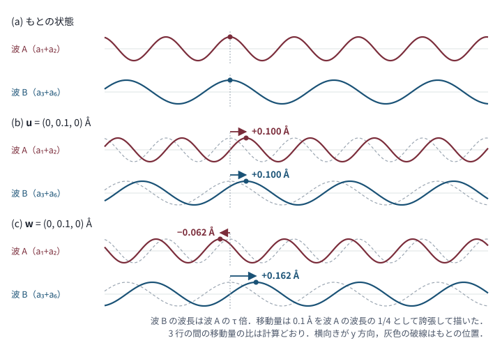 補足：$\bm w$ の符号は補空間の向きの約束による この付録では補空間の基底 $\bm b_i$ を $\bm a_i$ の Galois 共役（$\tau\to-1/\tau$）にとり，$\bm d_i$ では $\hat{\bm a}_i$ と $\hat{\bm b}_i$ を同じ長さでつないだ（E.4 節）．補空間の向きを逆にとる流儀では，同じ $w_y=+0.1$ Å に対する A，B の移動の符号が逆になる．2 つの波が逆向きに滑るという物理は変わらない． $\uu$ と $\bm w$ は，どちらも 3 成分のベクトルに見える．しかし点群 $I_h$ の操作に対する変換のされ方が違う．E.4 節（E.4.2）で見たとおり，6 次元格子の上で $I$ は $T_1\oplus T_2$ として働き，$E_\parallel$ が $T_1$，$E_\perp$ が $T_2$ を担う．6 次元の反転は両方の空間で $-1$ として働くので，$I_h$ では $\uu$ も $\bm w$ も反転で符号を変える（$u$）． 表E.27 から次のことが読み取れる． $\uu$ と $\bm w$ が場所によってゆっくり変わるとき，自由エネルギーはその勾配（ひずみ）の 2 次式になる．一様なずらしは自由エネルギーを変えないので（E.6.1），$\uu$ や $\bm w$ そのものの 2 乗の項はない． 独立な弾性定数の数は，ひずみの 2 次の不変量の数である．それを指標で数える（第8章 §8.8 の既約分解の公式，第10章 §10.4 の直積表現）． 導出：ひずみの既約分解と 2 次の不変量の数 ステップ0：$I$ で数えてよい理由．$I_h$ では $\partial_i$ も $u_j$ も $w_j$ も $u$（奇）なので，$\partial_iu_j$ と $\partial_iw_j$ はどちらも $g$（偶）である．したがって反転は不変量の数に効かず，回転群 $I$（位数 60，類 $E$，$12C_5$，$12C_5^2$，$20C_3$，$15C_2$）で数えてよい．$I$ の指標は E.4 節の指標表（E.4.2 の表E.10）のとおりで，$T_1$ が $(3,\ \tau,\ 1-\tau,\ 0,\ -1)$，$T_2$ が $(3,\ 1-\tau,\ \tau,\ 0,\ -1)$，$G$ が $(4,\ -1,\ -1,\ 1,\ 0)$，$H$ が $(5,\ 0,\ 0,\ -1,\ 1)$ である． ステップ1：フェイゾンひずみ $T_1\otimes T_2$．直積の指標は指標の積なので，類ごとに掛けると となる（$\tau^2=\tau+1$ より $\tau(1-\tau)=\tau-\tau^2=-1$）．既約表現 $\alpha$ を含む回数 $n_\alpha=\frac1{60}\sum_C\abs{C}\chi(C)\chi_\alpha(C)$ を計算すると で，$T_1\otimes T_2=G\oplus H$（$4+5=9$ 成分）を得る． ステップ2：フォノンひずみ $[T_1\otimes T_1]$（対称積）．対称積の指標は $\chi_{[\,]}(g)=\tfrac12\bigl[\chi(g)^2+\chi(g^2)\bigr]$ である．$C_5$ の 2 乗は $C_5^2$ の類，$C_5^2$ の 2 乗は $C_5^4=C_5^{-1}$ で $C_5$ の類，$C_3$ の 2 乗は $C_3$ の類，$C_2$ の 2 乗は $E$ なので となる．内積は $n_A=\tfrac1{60}(6+12+12+0+30)=1$，$n_H=\tfrac1{60}(30+0+0+0+30)=1$ で，ほかは 0．よって $[T_1\otimes T_1]=A\oplus H$（$1+5=6$ 成分）．全体の $T_1\otimes T_1$ の指標は $(9,\ \tau^2,\ (1-\tau)^2,\ 0,\ 1)$ で $A\oplus T_1\oplus H$ になるので，反対称部分は $T_1$，すなわち回転（表E.27 の $T_{1g}$）である． ステップ3：不変量を数える．ひずみの 2 次の不変量は，同じ既約表現どうしの組から 1 個ずつできる（Schur の補題，第7章 §7.6）．したがって 合計 5 個である．∎ 弾性自由エネルギーは次の形になる． （添字の繰り返しは和をとる．）$K_2$ の項はフェイゾンひずみの $G$ 成分と $H$ 成分を別の重みで足すもう 1 つの不変量，$K_3$ の項はフォノンひずみの $H$ 成分（体積を変えないずれ）とフェイゾンひずみの $H$ 成分の積である．どちらも成分で書くと長いので，ここでは個数だけを示した．正二十面体準結晶の独立な弾性定数は，フォノン 2 個，フェイゾン 2 個，結合 1 個の計 5 個である（Levine ら 1985，Bak 1985）． この結果から 2 つのことが分かる． 準結晶には，フェイゾンのほかにも配置の自由度がある．Tsai 型クラスターの中心にある四面体は向きの自由度をもち，$\mathrm{Zn_6Sc}$ の 1/1 近似結晶では約 160 K で秩序化し，室温でも向きを変え続けている（Euchner ら 2012）．これはフェイゾンとは別の配置の自由度で，周期的な近似結晶にもある．$\bm w$ のような補空間の自由度とは関係がない． 一方，クラスターの秤動のような回転型の振動は，通常の光学フォノンである．$3N$ 個の振動の自由度の内側にあり，調和近似では Dulong–Petit の $3k_B$ に含まれる（E.9 節）． この節で分かること：E.6 節の 6 個の連続な縮退から，長い波長でギャップのない（復元力が $q^2$ で消える）モードが 6 個出てくる．しかし，そのうち伝搬する波になるのは音響フォノンの 3 本だけで，フェイゾンの 3 個は振動せずに拡散的に緩和する．違いを生むのは，ずらしに共役な運動量（慣性）があるかどうかである．$\uu$ のずらしはハミルトニアンの厳密な対称性（空間の並進）で，全原子の連続的な変位として実現し，保存量の運動量が慣性を与える．$\bm w$ のずらしは粗視化した自由エネルギーの縮退で，しかも原子の飛び移りでしか進まないので慣性がない．厳密な対称性でなくても，ずらしが全原子の連続的な動きで実現する不整合 CDW では慣性が生じ，位相モードは伝搬する（E.7.5）．最後に，不整合 CDW の位相モード（第35章）と準結晶のフェイゾンが，英語では同じ名前でよばれながら別のものであることを整理する． 第37章では，連続的な対称性が自発的に破れると，ギャップのない集団励起が現れることを見た（定理37.2）．その理由は，平衡状態を対称変換の方向に一様にずらしてもエネルギーが変わらないので，自由エネルギーの展開に「質量項」（ずれの 2 乗の項）が現れず，ゆっくり変わるずれのエネルギーが勾配の 2 乗，すなわち $q^2$ に比例して 0 に近づくことであった． 結晶はその最も身近な例である．法則（ハミルトニアン）は空間の並進で不変なのに，結晶の原子は特定の位置を選んでいる．並進の生成子は $x,y,z$ の 3 個で，3 個とも破れている．その結果，$\Gamma$ 点の 3 本の音響モードが $q\to0$ で $\omega\to0$ となる．これは剛体並進がエネルギーを要しないからで（第11章 §11.9），長波長音響フォノンは並進対称性の破れに伴う南部–Goldstone モードである（第14章 §14.4）． 結晶は回転対称性も破っている．しかし回転の破れは，独立なギャップのないモードを与えない．空間（時空）の対称性が破れたときは，破れた生成子の数と南部–Goldstone モードの数が一致するとは限らないことが知られている（Low と Manohar 2002）．結晶が並進の破れによるフォノンを持つのに，同じく破れている回転にはギャップのない励起がないことは，Watanabe と Murayama（2013）が説明している．1 次元鎖での具体例は E.8 節で見る． 準結晶では，E.6.1 で見たとおり，基底状態が $\uu$ と $\bm w$ の 6 個の連続なパラメータについて縮退している．長い波長でゆっくり変わる $\uu(\rr)$，$\bm w(\rr)$ のエネルギーは，式 \eqref{eq:E-6-elastic} のとおり勾配の 2 乗だけで決まり，どちらも復元力が $q^2$ に比例して消える（ギャップがない）．ここまでは定理37.2 の議論と同じである． しかし第37章でも注意したとおり，自由エネルギーは「ばね」だけを表し，振動数を決める「慣性」を含まない（第37章 37.9節）．$\uu$ と $\bm w$ は動力学がまったく違う． フォノン変位 $\uu$：伝搬する音波．$\uu$ のずらしは空間の並進そのもので，ハミルトニアンの厳密な対称性である．この対称性には保存量（運動量）が対応し，運動量密度 $\rho_{\mathrm m}\dot{\uu}$（$\rho_{\mathrm m}$ は質量密度）の時間変化は弾性力で決まる． （$\sigma_{ij}$ は応力テンソル（第12章 §12.6）．結合 $K_3$ を無視した．フェイゾンの緩和は音波よりはるかに遅いので，音波の時間尺度では $\bm w$ は追従せず，この近似はよい．）時間の 2 階微分があるので，$q^2$ の復元力と慣性がつり合って振動し，$\omega=cq$ の音波（縦 1 本，横 2 本）として伝わる． フェイゾン変位 $\bm w$：拡散．$\bm w$ のずらしは，粗視化した自由エネルギーの縮退（局所同型な構造のあいだの縮退，E.6.2）であって，ハミルトニアンの厳密な対称性ではない．対応する保存量（$\bm w$ に共役な運動量）がない．原子の尺度では，$\bm w$ は熱活性の飛び移りでしか進まない（E.3 節，E.6.2）．そのため $\bm w$ の運動は純粋に緩和的で，自由エネルギーの勾配に比例する速さで平衡へ戻るだけである．厳密な対称性でないことだけでは慣性がないとは言えない点に注意する．不整合 CDW の位相のずらしも厳密な対称性ではないが，全原子の連続的な動きで実現するので慣性をもつ（E.7.5）．準結晶で慣性が失われるのは，ずらしが飛び移りでしか進まないからである． ここで $\Gamma_w$ は飛び移りの速さを表す運動係数，$K$ はフェイゾン弾性定数の組み合わせ（$\qq$ の向きと $\bm w$ の向きによる）である．導出は 1 行で済む．$\bm w=\bm w_{\qq}\ee^{\ii\qq\cdot\rr}$ に対して $F$ の該当部分は $\tfrac12Kq^2\abs{\bm w_{\qq}}^2$ の形なので $\delta F/\delta\bm w_{\qq}^{*}=Kq^2\bm w_{\qq}$，したがって $\partial_t\bm w_{\qq}=-\Gamma_wKq^2\bm w_{\qq}$ で，$\bm w_{\qq}\propto\ee^{-\Gamma_wKq^2t}=\ee^{-\ii\omega t}$ と書けば式 \eqref{eq:E-7-diffusion} になる．$\omega$ は純虚数で，波長 $\Lambda=2\pi/q$ のゆがみは時間 $1/(D_wq^2)$ で振動せずに消えていく．これは拡散方程式 $\partial_t\bm w=D_w\nabla^2\bm w$ の解と同じ形である． 結論：正二十面体準結晶の流体力学モードは，結晶の流体力学モード（音波のほか，熱の拡散や空孔の拡散など）に，拡散するフェイゾンのモード 3 個が加わったものである（Lubensky，Ramaswamy，Toner 1985）．縮退の数（$\uu$ と $\bm w$ を合わせた連続な自由度）は 6 個だが，伝搬する南部–Goldstone モードは音響フォノンの 3 本だけである．なお，Lubensky らによれば音波の速さは等方的だが減衰は異方的で，フェイゾンの拡散と空孔の拡散の時間は同程度に非常に長い．また，フェイゾンが拡散的であるのは長波長の極限での結論で，有限の波数で拡散から伝搬へ移り変わるという議論もある（Baggioli と Landry 2020）． 注意：E.3.5 の「ピン止め」とは矛盾しない E.3.5 で見たように，原子面が不連続な理想的な構造を絶対零度で考えると，$\bm w$ の一様なずらしは原子の飛び移り（エネルギー障壁の乗り越え）を伴う．したがって 1 つの極小のまわりの調和振動のスペクトルには，振動数 0 のフェイゾンのモードは現れない（この意味で位相はピン止めされている）．ここで述べている「ギャップのない拡散モード」は，飛び移りが熱的に起こる有限温度で，長波長・長時間に粗視化した流体力学の言明である．前者は 1 つの極小のまわりの微小振動，後者は極小から極小への熱活性の移り変わりを均したもので，両者は矛盾しない．低温で飛び移りが止まれば $\bm w$ は凍結し，流体力学の記述は使えなくなる（E.7.4）．この区別は E.9 節の比熱の議論（振動の寄与 $C_{\mathrm{vib}}$ と配置の寄与 $C_{\mathrm{config}}$，E.9.3）でそのまま使う． 注意：定理37.2 が保証すること，保証しないこと 定理37.2 が保証するのは，連続的な対称性が自発的に破れていれば「波長が長くなるにつれて振動数が 0 に近づく集団励起」があることまでで，その励起が伝搬する振動になるか，振動せずに緩和する拡散になるかは述べていない（第37章 37.9.2 項の最後で注意したとおり，自由エネルギーは慣性を含まない）．$\uu$ のずらしはハミルトニアンの厳密な対称性（空間の並進）である．$\bm w$ のずらしは原子の座標の連続的な変換ではなく（飛び移りを伴う），局所同型な構造のあいだの，粗視化した自由エネルギーでの縮退である． 粗視化した自由エネルギー \eqref{eq:E-6-elastic} の範囲では，$\bm w$ についても定理37.2 の理由づけ（質量項がない）がそのまま通り，$q\to0$ で $\omega\to0$ となること（$\omega=-\ii D_wq^2$ も $q\to0$ で 0 になる）までは定理の結論と合う．しかし，それが振動になるかどうかは定理からは決まらない．振動には共役な運動量（慣性）が要るが，飛び移りでしか進まない $\bm w$ にはそれがない．「破れた連続対称性は 6 個」と言うときの 6 は，$\bm w$ については粗視化した自由エネルギーの対称性として数えたものである． 補足：南部–Goldstone モードは伝搬する波とは限らない 南部–Goldstone モードの数え方は，相対論的でない系では一般に「破れた生成子の数」とは一致しない．非相対論的な系では，モードの数は「破れた生成子の数から，生成子どうしの交換子の期待値がなす行列の階数の半分を引いたもの」になる（Watanabe と Murayama 2012，Hidaka 2013）．さらに散逸のある系では，南部–Goldstone モードが振動せずに拡散する型になりうることが理論的に示されている（Minami と Hidaka 2018．ただしこれは内部対称性をもつ模型での結果で，準結晶を扱ったものではない）． 準結晶については，Nagai ら（2024）がフェイゾンの飛び移りを拡散型の南部–Goldstone モード（diffusive Nambu–Goldstone modes）と解釈している．また Baggioli と Landry（2020）は，フェイゾンのずらしを「対応する保存流（Noether 流）をもたない対称性」として扱う有効理論を作り，それが散逸と周期性の欠如によってのみ許されると述べている．フェイゾンを南部–Goldstone モードとよぶかどうかは言葉の問題を含むが，「長波長ではギャップはないが伝搬せず拡散する」という見方は，Lubensky ら（1985），Baggioli と Landry（2020），Nagai ら（2024）に共通している（Watanabe と Murayama，Hidaka の数え方は散逸のない系の一般論で，拡散型は扱っていない）． 静的なゆらぎと散漫散乱．動力学が違っても，熱平衡のゆらぎの大きさは自由エネルギーだけで決まる．式 \eqref{eq:E-6-elastic} の各モードに等分配の法則を当てはめると となり，長い波長のゆらぎほど大きい．式 \eqref{eq:E-6-phase} より，$\bm w$ のゆらぎは密度波 $\GG$ の位相を $\GG_\perp\cdot\bm w$ だけゆらすので，その大きさは各斑点の $\GG_\perp$ による．このゆらぎは Bragg 斑点のまわりの散漫散乱（diffuse scattering）として観測され，i-Al-Pd-Mn では散漫散乱の解析からフェイゾン弾性定数が調べられている（de Boissieu ら 1995．E.7.6）． $\omega=-\ii D_wq^2$ は虚数の振動数だが，構造の不安定を表す「虚数振動数のフォノン」とは別のものである．違いを見るために，慣性 $m$，摩擦 $\gamma$，剛性 $K$ をもつ 1 つのモードの模型で比べる． （$-m\omega^2-\ii\gamma\omega+Kq^2=0$ を解いた．）$m$ は比較のための模型の量で，フェイゾンに本当に慣性があるという意味ではない． フェイゾンは 3 行目である．剛性は正で，ずれた配置は元へ戻る．成長する解はない．$\gamma^2\gg4mKq^2$ のとき，根の 1 つは $-\ii\gamma/m$ ですぐに減衰し，もう 1 つが遅い根 $-\ii(K/\gamma)q^2$ として残る．これが式 \eqref{eq:E-7-diffusion} で $D_w=K/\gamma$（$\Gamma_w=1/\gamma$）としたものである．数値例では，近似 $-\ii Kq^2/\gamma=-0.1000\ii$ と厳密な値 $-0.1010\ii$ の差は 1%（$4mKq^2/\gamma^2=0.04$ による補正）である． 虚数振動数のフォノン（2 行目）に対応するのは 4 行目で，フェイゾンの剛性が負になる場合である．これは近似結晶などへの相転移を意味する（E.7.6）．$\gamma$ は原子の飛び移りの遅さを表す．飛び移りは熱活性なので，温度を上げると $D_w$ は大きくなり緩和が速くなる．低温では凍結する． 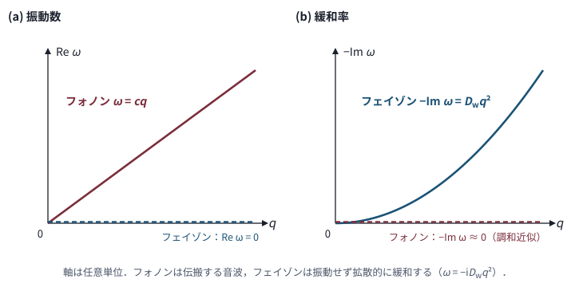 フェイゾンの動きには，桁違いに異なる 2 つの時間尺度がある．長い波長のフェイゾンのゆがみが均される時間と，個々の原子が飛び移る時間である． ここからは材料の対話での推論である．個々の飛び移りは速いが，多くは往復である．長波長のフェイゾンのゆがみを均すには，多数の飛び移りが相関して起こる必要があるので，桁違いに遅く，活性化エネルギーも大きいと考えられる．比熱に効くのは，速い局所的な飛び移りのほうだと考える（E.9 節）． 注意：$\omega=-\ii D_wq^2$ は「中点の構造の虚数振動数」ではない 局所的には二重井戸の描像が合っている．飛び移る原子 1 個は 2 つのサイトのあいだを往復し，時間平均では両方のサイトを部分的に占める．秩序–無秩序型の強誘電体と同じである．2 つのサイトの中点に原子を置いた構造を調和近似で計算すれば，虚数の振動数が出るはずである（推論）． しかし $\omega=-\ii D_wq^2$ はその虚数振動数ではない．多数の飛び移りが作る集団的な模様が，どれだけ速く均されるかを表す量である．温度を上げると，不安定が強くなるのではなく，緩和が速くなる． 第35章（35.6節）では，不整合な電荷密度波（CDW）の位相モード（phase mode，phason）を扱った．英語では準結晶のフェイゾンも同じ phason である．どちらも「非整合な周期の相対的な位相」をずらす自由度で，名前の由来は同じだが，動力学は違う．違いを決めるのは，E.3 節（E.3.5）で見た原子面（変調関数）が滑らかか不連続かである． 第37章の対応表（表37.6）で電荷密度波の位相モードを「phason（ピン止めで有限の振動数）」と書いたのは，表E.32 の左の列である．この付録で「フェイゾン」と書くときは右の列を指す．同じ名前でも，伝搬する位相モード（CDW）と拡散するフェイゾン（準結晶）は別の動力学をもつ． 表E.30 の 4 行目（フェイゾンの剛性が負）は，準結晶がフェイゾンひずみの入った構造，たとえば近似結晶へ移る相転移に当たる．実際の準結晶では，次のような観測がある． 「有限温度のゆらぎによって，平均として高い対称性が保たれている」という見方もある．ランダムタイリング（random tiling）模型では，フェイゾンの弾性はエントロピーに由来し，その定数は温度とともに増えるとされる（Li，Park，Widom 1992）．3 次元のランダムタイリングが長距離秩序をもつことは計算で示されていると報告されている（Tang 1990）． ここからは推論である．冷やすとフェイゾンが軟らかくなるという結果は，表E.30 の 4 行目へ近づく方向である．準結晶がエネルギーで安定な基底状態なのか，エントロピーで安定化された高温相なのかは系によると考えられ，ここでは結論を出せない． この節で見たように，ギャップのないモードが南部–Goldstone モードかどうか，伝搬するかどうかは，どの連続対称性が破れているかと，ずらしに共役な運動量（慣性）があるかで決まる．E.8 節では，最も簡単な 1 次元鎖で，横波フォノンと円偏光（カイラリティ）を例に「どの対称性が破れているか」を判定する練習をする．E.9 節では，フェイゾンが振動子ではないという本節の結論を使って，準結晶の高温の比熱が Dulong–Petit の $3k_B$ を超える理由を考える． この節で分かること：E.7 節では「ギャップのないモードが現れるか，それが伝搬するかは，どの連続対称性が破れているかで決まる」と述べた．準結晶の 6 個の連続パラメータでこれを手で確かめるのは難しいので，ここでは 3 方向に動ける原子を 1 列に並べただけの鎖で同じ判定を練習する．横波の音響分枝は $y,z$ 方向の並進の破れから来る南部–Goldstone（NG）モードである．一方，原子がらせん状に回る円偏光のモード（スパイラル）がもつ「カイラリティ」は，$x$ 軸まわりの回転が破れていないことの表れで，NG モードであることとは別の性質である．鎖が圧縮されてらせんに座屈すると回転が自発的に破れ，そこで初めて超伝導の位相モードと同じ構造が現れる． この節は準結晶の話からの寄り道ではない．E.8.5〜E.8.7 で，超伝導・超流動，直線の鎖，らせんに座屈した鎖，不整合 CDW，準結晶を 1 枚の表に並べ，「破れた対称性」「ギャップのないモード」「その動力学」を見比べる．そのための準備として，E.8.1〜E.8.4 で鎖の運動を調和近似と非調和項の両方で解いておく． 記号．質量と隣接原子間のばね定数は第13章 13.2 節に合わせて $M$ と $C$ と書き，縦（鎖の方向）と横の区別を添字 $\ell,t$ で表す（$C_\ell$，$C_t$）．E.6 節のフェイゾン弾性定数 $K_1,K_2,K_3$ とは無関係である．格子定数は $a$，原子の番号は $n$（第13章の $s$ にあたる）で，原子 $n$ の平衡位置を $x_n=(n-1)a$ とする．この節の文字のいくつかは，前の節で別の意味に使った．質量 $M$ は E.5.1 のスケール変換の行列 $M$ と，ボンドベクトル $\bm d_n$（E.8.4）は 6 次元の基底 $\bm d_i$ と，非調和係数 $g_{\ell t},h_t,h_{\ell t},h_\ell$ は群の元 $g$ や回折の指数 $h_i$ と，Grüneisen 定数 $\gamma_t$ は E.7.3 の摩擦係数 $\gamma$ と，スパイラルの振幅 $A$ と位相 $\varphi$（E.8.4〜E.8.6）は既約表現 $A$ や E.3 の $\varphi=w/W$ と，有効ポテンシャル $\mathcal W$ は E.3 の窓の幅 $W$ と，それぞれ無関係である． 原子が $x$ 軸上に並び，各原子は $x,y,z$ の 3 方向に変位 $\uu_n=(u_n^x,u_n^y,u_n^z)$ をもつ．隣接原子間の力定数を縦 $C_\ell$，横 $C_t$ とすると，調和ポテンシャルは である．横の力定数が $y$ と $z$ で等しく，縦と横の交差項も $y$–$z$ の交差項もないのは，鎖の対称性による． 導出：横の力定数が等方的である理由（点群 $C_{\infty v}$） 直線の鎖は，$x$ 軸まわりの任意の回転と，$x$ 軸を含む鏡映で不変である（点群 $C_{\infty v}$）． $u_n^\alpha$ を含むのはボンド $(n-1,n)$ と $(n,n+1)$ の 2 本だけなので，成分 $\alpha$ ごとに第13章と同じ式が出る（$C_x=C_\ell$，$C_y=C_z=C_t$）．行列でまとめると である．3 つの成分は互いに独立で，それぞれが第13章の単原子鎖と同じ式に従う．平面波 $\uu_n=\bm\varepsilon\,\ee^{\ii(kx_n-\omega t)}$ を入れる手順も第13章と同じなので結果だけ書くと，動力学行列は $\mathsf D(k)=\tfrac4M\sin^2(ka/2)\,\mathrm{diag}(C_\ell,C_t,C_t)$ で， を得る．$\omega_t$ は $y$ と $z$ の 2 重縮退である．$\mathsf D(k)$ の横ブロックは単位行列に比例するので，$y$–$z$ 平面内の任意の偏光ベクトルが固有ベクトルになる．$y$ 方向の直線偏光も $z$ 方向の直線偏光も円偏光も，同じ $\omega_t(k)$ をもつ．後で見るスパイラルが 1 つの固有モードとして成り立つのはこの縮退のためで，もし横の力定数が $y$ と $z$ で違えば，円偏光は固有モードにならず，形が時間とともに崩れる． 代表的な波数での値を表E.33 にまとめる．$C_{\mathrm{eff}}(k)\equiv M\omega_t^2(k)=4C_t\sin^2(ka/2)$ は，その波数のパターンで 1 原子が感じる実効的な力定数である．たとえば $k=\pi/a$（隣どうしが逆向き）では，1 本のボンドの縦のエネルギーは $\tfrac{C_\ell}{2}(2\delta)^2=\tfrac12(4C_\ell)\delta^2$ で，原子 1 個あたりボンドは 1 本だから，実効的な力定数は隣接原子間の力定数の 4 倍になる． 長波長では $\omega_t\simeq c_t\abs{k}$，$c_t=a\sqrt{C_t/M}$ である（第13章 13.4.2 項）．群速度は $0\le k\le\pi/a$ で $v_g=a\sqrt{C_t/M}\cos(ka/2)$ で，$k=\pi/2a$ では $v_g=a\sqrt{C_t/2M}$，位相速度は $\omega/k=(2a/\pi)\sqrt{2C_t/M}$，比は $v_g/(\omega/k)=\pi/4$ になる． 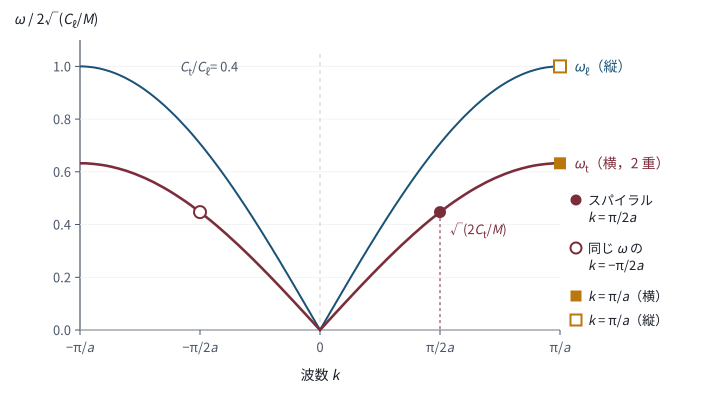 注意：横の力定数 $C_t$ はどこから来るか ここまでの式は，最近接の横の力定数 $C_t$ を与えた模型の上の話である．$C_t$ の由来によって模型の意味が変わる． 一般に第 $p$ 近接の横の力定数を $C_t^{(p)}$ とすると $\omega_t^2(k)=\tfrac2M\sum_{p\ge1}C_t^{(p)}(1-\cos pka)$ である（第13章 13.5 節の一般形の横波版）．剛体回転 $u_n^y=\vartheta x_n$ のエネルギーは原子 1 個あたり $\tfrac12\vartheta^2a^2\sum_pp^2C_t^{(p)}$ なので，張力のない孤立鎖の回転不変性は $\sum_pp^2C_t^{(p)}=0$，張力 $F_0$ があれば弦のエネルギー $\tfrac{F_0}{2}\int(\partial_xu^y)^2\dd x$ と比べて $a\sum_pp^2C_t^{(p)}=F_0$ である．曲げの模型は $C_t^{(1)}=4\kappa$，$C_t^{(2)}=-\kappa$ にあたり，$4\kappa-4\kappa=0$ で回転不変性を満たす（ただし，この 2 体の形のまま開いた鎖に置くと，両端だけから剛体回転のエネルギー $2\kappa\vartheta^2$ が出る．周期鎖や鎖の内部では 3 体の形と同じである）． どの場合も横ブロックは対称性から等方的なので，以下の「スパイラルは 1 原子の等方振動子になる」という構造は変わらない．変わるのは の中身だけである． $k=\pi/2a$ で，原子 1〜4 が $y$–$z$ 平面で $90^\circ$ ずつ回った向きに変位する配置を考える． 原子 5 は原子 1 と同じで，周期は $4a$ である（図E.10）．複素変位を $\tilde{\uu}_n=\delta\,(0,1,-\ii)\,\ee^{\ii kx_n}$ と書き，実際の変位を $\uu_n=\mathrm{Re}\,\tilde{\uu}_n$ とする（表E.34）．隣へ進める並進は位相因子として働き，$\tilde{\uu}_{n+1}=\ee^{\ii ka}\tilde{\uu}_n=\ii\,\tilde{\uu}_n$ である．これは付録C の C.2 節の「隣の胞へ移るときの位相の回り方」そのもので，波数 $\kk=(\pi/2a,0,0)$ に $y,z$ 成分はない．原子は $x$ 方向にしか並んでいないからで，$y$ と $z$ のねじれは波数ではなく複素の偏光ベクトル $(0,1,-\ii)$ が担う． 実ベクトルのまま書くなら，隣へ進める操作は $x$ 軸まわりの回転行列 $R_x(\theta)$ で，$\uu_{n+1}=R_x(ka)\,\uu_n$ である．2 つの書き方は円偏光ベクトルでつながる． 確かめるには，$R_x(\theta)\hat{\bm e}_y=(0,\cos\theta,\sin\theta)$，$R_x(\theta)\hat{\bm e}_z=(0,-\sin\theta,\cos\theta)$ から とすればよい．スパイラルは $\tilde{\uu}_n=\sqrt2\,\delta\,\bm\varepsilon_+\ee^{\ii kx_n}$ で，円偏光の基底では回転が位相因子になる．横変位を 1 つの複素数 $\zeta_n=u_n^y+\ii u_n^z$ にまとめると，$y$ と $z$ の式は 1 本になり， となる．$\delta(0,1,-\ii)\ee^{\ii\theta}$ の実部の $(y,z)$ 成分が $\zeta=\delta\ee^{\ii\theta}$ の実部と虚部になっている（$\mathrm{Re}[(1,-\ii)\ee^{\ii\theta}]=(\cos\theta,\sin\theta)$）ので，図E.10 の配置は $\zeta_n=\delta,\ \ii\delta,\ -\delta,\ -\ii\delta$ と書ける． 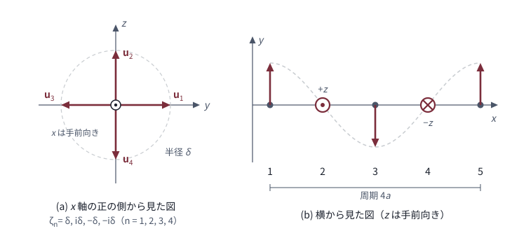 拘束を入れて 1 原子の問題にする．スパイラルの関係 $\uu_{n\pm1}=R_x(\pm ka)\,\uu_n$ を拘束として式 \eqref{eq:E-8-eom} の横の部分に入れると，$R_x(\theta)+R_x(-\theta)$ の横ブロックは $\sin\theta$ が打ち消し合って $2\cos\theta\,\mathbb 1$ になるので， を得る．これは1 原子の 2 次元等方調和振動子で，$\omega^2=C_{\mathrm{eff}}(k)/M$ は式 \eqref{eq:E-8-disp} の $\omega_t$ と一致する．$k=\pi/2a$ では $\cos ka=0$ なので両隣の変位が打ち消し合い（$\uu_{n+1}+\uu_{n-1}=0$），自分の変位に比例する力 $-2C_t\uu_n$ だけが残る．したがって である．ポテンシャルで見ても同じで，$R_x(ka)$ は長さを変えないから $\abs{\uu_{n+1}-\uu_n}^2=2(1-\cos ka)\abs{\uu_n}^2$，スパイラルでは $\abs{\uu_n}$ がどの原子でも等しいので $U/N=\tfrac12C_{\mathrm{eff}}(k)\abs{\uu}^2$ となる． 拘束の下では各原子が 2 次元等方調和振動子なので，一般解は初期変位と初速度で決まる：$\uu_n(t)=\uu_n(0)\cos\omega t+\dot{\uu}_n(0)\sin\omega t/\omega$．以下 $\theta_n=kx_n$ とし，初期変位をどちらも $\uu_n(0)=\delta\,(0,\cos\theta_n,\sin\theta_n)$ とする． 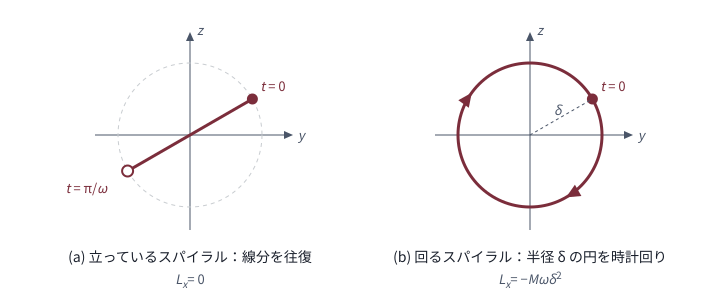 (a) は (b) と逆回りの和である．三角関数の和の公式から で，第 1 項は (b)，第 2 項は $\mathrm{Re}\bigl[(1,+\ii)\ee^{\ii(-kx_n-\omega t)}\bigr]$ と書けるので波数 $-k$，偏光 $\bm\varepsilon_-$ のモードである．ある時刻で見たらせんの巻き方は第 1 項と同じで，進む向きが $-x$ である．$\omega(k)=\omega(-k)$ なので和も同じ振動数の定常解で，立っているスパイラルは逆向きに進む 2 つのらせん波の定在波である．巻き方まで含めると，同じ巻き方のらせん $(k,\bm\varepsilon_+)$，$(-k,\bm\varepsilon_-)$ と，逆の巻き方の $(k,\bm\varepsilon_-)$，$(-k,\bm\varepsilon_+)$ の 4 つがある．鎖は $x$ 軸を含む鏡映で不変で，鏡映は巻き方を入れ替えるので，4 つとも同じ振動数 $\omega_t(\abs k)$ をもつ（ここでは「右巻き・左巻き」という名前は付けない）． 角運動量．原子 1 個の $x$ 軸まわりの角運動量は $L_x=M(u^y\dot u^z-u^z\dot u^y)$ である．(b) で $\varphi=\theta_n-\omega t$ とおくと $u^y=\delta\cos\varphi$，$u^z=\delta\sin\varphi$，$\dot u^y=\omega\delta\sin\varphi$，$\dot u^z=-\omega\delta\cos\varphi$ なので， となり，時間によらない．符号は規約 $\ee^{\ii(kx-\omega t)}$ と偏光 $\bm\varepsilon_+$ のもので，逆回りなら $+M\omega\delta^2$ である．(a) では $\uu_n\parallel\dot{\uu}_n$ なので $L_x=0$．スピン 1 の行列 $S_x$ を $y$–$z$ ブロックで $(S_x)_{yz}=-\ii$，$(S_x)_{zy}=+\ii$（ほかは 0）と定めると が成り立ち，(b) の $L_x$ の符号は偏光ベクトルの $S_x$ の固有値の符号と一致する．偏光ベクトルが角運動量をもつという見方は，カイラルフォノンの擬角運動量やフォノン角運動量（付録D の D.10 節）とつながる概念である．ここでは，等方な横ブロックをもつ鎖で古典的な $L_x$ が $\pm M\omega\delta^2$ になることを確かめたところまでにとどめる． エネルギー．(b) では原子 1 個あたり運動エネルギー $\tfrac12M\omega^2\delta^2$ とポテンシャル $\tfrac12C_{\mathrm{eff}}\delta^2$ がどちらも一定で，和は $C_{\mathrm{eff}}\delta^2$ である．(a) では合計 $\tfrac12C_{\mathrm{eff}}\delta^2$ が両者の間を行き来する．どちらの運動でも，時間を含めて $\tilde{\uu}_{n+1}(t)=\ee^{\ii ka}\tilde{\uu}_n(t)$ が保たれる（(a) は $\tilde{\uu}_n=\delta(0,1,-\ii)\ee^{\ii kx_n}\cos\omega t$，(b) は $\delta(0,1,-\ii)\ee^{\ii(kx_n-\omega t)}$）． 振幅が有限になると，横変位がボンドを伸ばすので縦と横が結合する．先に結果を並べておく． 模型．E.8.1 の (ii)，すなわち張力のかかった中心力ばねの鎖を使う．隣接原子間のポテンシャルを $V(r)$ とし，ボンド $n$（原子 $n$ と $n+1$ の間）の縦と横の相対変位を $\xi_n=u^x_{n+1}-u^x_n$，$\bm\eta_n=\uu^\perp_{n+1}-\uu^\perp_n$（$\uu^\perp=(u^y,u^z)$）とする．ボンドベクトルは $\bm d_n=(a+\xi_n,\bm\eta_n)$，長さは $r_n=\sqrt{(a+\xi_n)^2+\abs{\bm\eta_n}^2}$ である．平衡間隔 $a$ での微分係数を と書く．$F_0$ は張力である．厳密な運動方程式は $M\ddot{\uu}_n=\bm f_n-\bm f_{n-1}$，$\bm f_n=V'(r_n)\,\bm d_n/r_n$ で，$\bm f_n$ はボンド $n$ が原子 $n$ を引く力である（$V'\gt0$ なら原子 $n+1$ の側へ引く）． 導出：ボンド 1 本のポテンシャルを 4 次まで展開する $r=(a+\xi)\sqrt{1+\abs{\bm\eta}^2/(a+\xi)^2}$ に $\sqrt{1+z}\simeq1+z/2-z^2/8$ と $1/(a+\xi)\simeq(1-\xi/a+\xi^2/a^2)/a$ を使うと である．これを に入れて次数ごとにまとめると，係数の出どころは次のとおりである． 1 次の項 $F_0\xi$ は，鎖の全長が固定（周期境界）なら $\sum_n\xi_n=0$ で消える．2 次の項は E.8.1 のポテンシャルそのもので，$C_t=F_0/a$ は E.8.1 の (ii) と一致する．対称性から一般形も決まる．ボンド 1 本の量で $x$ 軸まわりの回転と $x$ 軸を含む鏡映で不変なものは $\xi$ と $\abs{\bm\eta}^2$ の関数に限られる（$\bm\eta$ は 2 次元ベクトルで，不変量は長さだけ）．したがって最近接ボンドの 3 次の不変量は $\xi^3$ と $\xi\abs{\bm\eta}^2$ の 2 つしかない．中心力でない一般の場合（(i) の 3 次元結晶の面間など）には $g_{\ell t}$ が $C_\ell,C_t$ と独立な定数になる．以下の結果のうち，$g_{\ell t}$ で書いたものは一般に成り立ち，$V(r)$ で書いた厳密な式は中心力の場合に成り立つ． 3 次まで残し，横には 4 次の $h_t$ の項も残して運動方程式を書くと（定数 $F_0$ は打ち消し合う） となる．$g_{\ell t}=h_t=g_\ell=0$ とすれば式 \eqref{eq:E-8-eom} に戻る．読み方は 2 つある．(1) 横波は，$\abs{\bm\eta}^2$ の場所による差を通じて縦を押す（縦の式の第 2 項）．$\abs{\bm\eta_n}^2$ がどのボンドでも同じなら，この力は消える．(2) 縦ひずみ $\xi$ は横の力定数を $C_t\to C_t+2g_{\ell t}\xi$ に変える．伸びたボンドは張力が増えて横に硬くなる． スパイラルでは縦波が立たない（すべての次数で厳密）．らせん対称な配置 $u^x_n=X(t)$（全原子共通），$\zeta_n=Z(t)\,\ee^{\ii kx_n}$，$Z=A(t)\,\ee^{\ii\varphi(t)}$ を考える．このとき $\xi_n=0$，$\abs{\bm\eta_n}^2=\abs{\ee^{\ii ka}-1}^2\abs{Z}^2=s^2\abs{Z}^2$（$s\equiv2\abs{\sin(ka/2)}$）で，全ボンドの長さ $r=\sqrt{a^2+s^2\abs Z^2}$ が等しい．展開せずに厳密な運動方程式に入れると，力の $x$ 成分は $V'(r)a/r-V'(r)a/r=0$ で $\ddot X=0$，横成分は なので， を得る．これは原子 1 個あたりの有効ポテンシャル $\mathcal W(A)$（$\dd\mathcal W/\dd A=s^2A\,V'(r)/r$）の中の 2 次元の中心力問題で，保存量は角運動量 $L_x=M\,\mathrm{Im}(Z^*\dot Z)=MA^2\dot\varphi$ とエネルギー $E=\tfrac M2\abs{\dot Z}^2+\mathcal W(\abs Z)$ である．式 \eqref{eq:E-8-spiral} は $\mathcal W$ を 2 次で止めたもので，$V'(r)/r\simeq C_t+h_ts^2A^2$ より $\mathcal W\simeq V(a)+\tfrac12C_{\mathrm{eff}}A^2+\tfrac{h_t}{4}s^4A^4$（$C_{\mathrm{eff}}=s^2C_t$）である．閉じる理由は対称性にある．ハミルトニアンは「$a$ だけ進めて $x$ 軸まわりに $ka$ だけ回す」らせん操作で不変で，この操作で不変な配置は時間発展しても不変なままである．この議論は中心力に限らず，$x$ 方向の並進と $x$ 軸まわりの回転で不変な相互作用なら何でも成り立つ． 回るスパイラル：厳密な分散関係．円軌道 $\abs Z=\delta$，$\dot\varphi=-\omega$ では，向心力のつり合い $M\omega^2\delta=s^2\tfrac{V'(r_\delta)}{r_\delta}\delta$ から を得る．これは振幅によらず厳密で，式 \eqref{eq:E-8-disp} の $C_t=V'(a)/a$ が $V'(r_\delta)/r_\delta$ に置き換わっただけである． 厳密解は安定とは限らない．$N=16$ の周期鎖で数百周期の時間積分をすると，らせん対称な配置からのずれは，$\delta/a\le0.15$ では 4 通り（ポテンシャル 2 種 × 回る・立っている）とも育たなかった．$\delta/a=0.2$ ではポテンシャル (i) の回るスパイラルだけで，$\delta/a=0.3$ では 4 通りすべてで，丸め誤差ほどの乱れが指数関数的に育った（表E.35）．しきい値は鎖の長さに依存し，$N=256$ ではポテンシャル (i) の回るスパイラルが $\delta/a=0.05$ でも 1 周期あたり約 $\ee^{0.003}$ 倍の率でゆっくり育つ（(ii) の回るスパイラルは $\delta/a=0.05$ では育たず，$0.1$ で育つ）．長い鎖では小さな振幅でも不安定になりうる．機構は波数のずれた横波の対への分裂（変調不安定）と推測されるが，解析はしていない． 立っているスパイラル：Duffing 振動子．$L_x=0$ の動径方向の振動 $Z=A(t)$（実数）では，式 \eqref{eq:E-8-reduced} は $M\ddot A=-s^2\tfrac{V'(r)}{r}A\simeq-C_{\mathrm{eff}}A-h_ts^4A^3$ で，Duffing 振動子になる．Duffing 振動子の公式 $\omega^2\simeq\omega_0^2+\tfrac34(h_ts^4/M)\delta^2$ から で，補正は回るスパイラル（$h_ts^2\delta^2/C_t$）の 3/4 である．調和近似では同じ振動数だった (a) と (b) が，非調和項で分かれる（図E.12）．E.8.3 の「(a) は (b) と逆回りの和」は，重ね合わせの原理が破れるので有限振幅では厳密には成り立たない．張力の増分は で，振動数 $2\omega$ で一様に振動するが，波数 0 の一様な変化なので縦波は立たない．一般の初期条件（楕円軌道）では，$\mathcal W$ が 2 次からずれるぶん軌道が閉じずに歳差する． 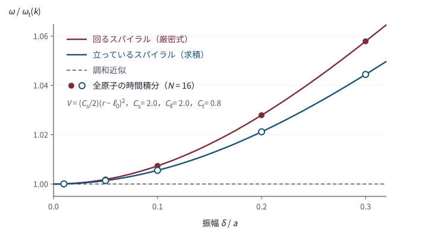 長さが自由な場合：収縮と負の Grüneisen 定数．外から一定の張力 $F_0$ をかけ，鎖の長さは自由とする．一様なひずみ $\xi_0$（$a\to a+\xi_0$）を許しても式 \eqref{eq:E-8-reduced} の部分空間は閉じたままで，回るスパイラルでのつり合いは $V'(r)\,(a+\xi_0)/r=F_0$，$r=\sqrt{(a+\xi_0)^2+s^2\delta^2}$ である．最低次では $C_\ell\xi_0+g_{\ell t}s^2\delta^2=0$，すなわち で，$C_\ell\gt C_t$ なら鎖は縮む．一般に $\langle\xi\rangle=-g_{\ell t}\langle\abs{\bm\eta}^2\rangle/C_\ell$ である（縦の式の時間平均）．横モードの Grüneisen 定数を，モードの番号（$ka$）を固定して格子定数を変えたときの変化として定義する（第30章 30.4.3 項と同じ定義）．$C_t(a)=V'(a)/a$ より で，$\omega_t\propto\sqrt{C_t}$ だから を得る．$C_\ell\gt C_t$ で負になるのは，伸ばすと張力が増えて横波が硬くなるからで，第30章 30.4.4 項の「張った弦の横振動」と同じ幾何学である．回るスパイラルの原子 1 個あたりのエネルギー $E_t=C_{\mathrm{eff}}\delta^2=C_ts^2\delta^2$（E.8.3）を使うと と書ける．「体積」を $a$，体積弾性率を $a\,\dd^2V/\dd a^2=C_\ell a$ とした 1 次元の Grüneisen の関係（ひずみ $=\gamma E/BV$）そのものである．これは負の熱膨張の「張力効果」（横振動が原子どうしを引き寄せる機構）の最小模型になっているが，1 次元の玩具模型での対応であり，実在物質の定量評価ではない．熱平衡では縦モードの正の寄与（$g_\ell\lt0$ なら $\xi^3$ の項による通常の膨張）と競合する． 縦波が生じる条件と選択則．縦の運動方程式で，縦波の源は $S_n=g_{\ell t}\bigl(\abs{\bm\eta_n}^2-\abs{\bm\eta_{n-1}}^2\bigr)$，$\abs{\bm\eta_n}^2=\abs{\zeta_{n+1}-\zeta_n}^2$ である．2 つの円偏光成分の重ね合わせ $\zeta_n=A_1\ee^{\ii(k_1x_n-\omega_1t)}+A_2\ee^{\ii(k_2x_n-\omega_2t)}$（$\omega_j$ は負も許し，負は逆回りを表す）では （$s_j=2\abs{\sin(k_ja/2)}$）で，第 1 項は一様なので $S_n$ に効かない．源は波数 $q=k_1-k_2$，振動数 $\Omega=\omega_1-\omega_2$ にだけ現れる．$q=0$ なら一様で，縦波は立たない．E.8.3 の記号に直すと，$\omega\gt0$ の成分 $\ee^{\ii(kx-\omega t)}$ は $(k,\bm\varepsilon_+)$ で $S_x=-1$，$\omega\lt0$ の成分 $\ee^{\ii(kx+\abs\omega t)}$ は $(-k,\bm\varepsilon_-)$ で $S_x=+1$ である． 選択則：縦フォノン（$S_x=0$）1 個を横フォノン 2 個から作る過程（和の振動数 $\abs{\omega_1}+\abs{\omega_2}$）では，2 個の $S_x$ が逆符号でなければならない．同じ円偏光の横フォノン 2 個からは作れない．同じ向きの 2 個から出るのは差の振動数 $\omega_1-\omega_2$ の源で，横フォノン 1 個を吸収して別の 1 個を放出する過程（$S_x$ は $-1\to-1+0$ で保存）にあたる．どちらも $x$ 軸まわりの回転対称性による角運動量の保存の表れである． 導出：直線偏光の横波が作る第 2 高調波 $u^y_n=\delta\cos(kx_n-\omega t)$，$u^z_n=0$ とする．和積の公式から $\eta_n=-2\delta\sin\tfrac{ka}{2}\sin\phi_n$，$\phi_n=kx_n+\tfrac{ka}{2}-\omega t$ で，$\eta_n^2=2\delta^2\sin^2\tfrac{ka}{2}(1-\cos2\phi_n)$，$\phi_{n-1}=\phi_n-ka$ より したがって $S_n=4g_{\ell t}\delta^2\sin^2\tfrac{ka}{2}\sin ka\,\sin(2kx_n-2\omega t)$ である（厳密な力の $x$ 成分との差は $\delta^4$ に比例する．差は $c_4(\eta_n^4-\eta_{n-1}^4)$，$c_4=\tfrac{g_\ell}{8a^2}-\tfrac{3C_\ell}{8a^3}+\tfrac{3F_0}{8a^4}$）．線形応答 $M\ddot u^x_n=C_\ell(u^x_{n+1}-2u^x_n+u^x_{n-1})+S_n$ の強制解を $u^x_n=B\sin(2kx_n-2\omega t)$ とおき，$\omega=\omega_t(k)$，$M\omega_\ell^2(2k)=16C_\ell\sin^2\tfrac{ka}{2}\cos^2\tfrac{ka}{2}$，$4M\omega_t^2=16C_t\sin^2\tfrac{ka}{2}$ を使うと を得る．中心力なら で，$ka$ で展開すると である．分子の $g_{\ell t}\propto C_\ell-C_t$ と分母の振動数差 $\omega_\ell^2(2k)-4\omega_t^2(k)\propto C_\ell-C_t$ が打ち消し合うので，長波長（共鳴 $\cos^2(ka/2)=C_t/C_\ell$ より十分長い波長）では $C_\ell,C_t$ の値によらず $B\to k\delta^2/8$ となり，伸びない弦の結果（$\partial_xu^x=-\tfrac12(\partial_xu^y)^2+$ 定数）と一致する．比の値が効くのは近づき方だけで，$C_t\to C_\ell$ では共鳴の波数 $ka_{\mathrm{res}}=2\arccos\sqrt{C_t/C_\ell}$ が 0 に寄ってくるので，長波長とみなせる範囲が狭くなる（たとえば $C_t/C_\ell=0.1$ では $ka=0.5$ でも $B/(k\delta^2/8)=1.029$ だが，$0.9$ では $ka_{\mathrm{res}}=0.64$ で，$ka=0.3$ で既に $1.27$）．共鳴の近くでは摂動の式は使えない．∎ $k=\pi/2a$ の直線偏光の横波は，$2k=\pi/a$ の縦の反転モードを振動数 $2\omega$ で駆動し，その振幅は $B=\dfrac{\delta^2}{4a}\dfrac{C_\ell-C_t}{C_\ell-2C_t}$ である（$\sin ka=1$，$\cos^2(ka/2)=1/2$）．同じ $k$ のスパイラル（円偏光）は縦をまったく駆動しない．偏光だけの違いで，縦への結合が有限か 0 かに分かれる． 補足：数値で確かめたこと E.8.1〜E.8.4 の式は，周期境界の $N=16$ の鎖（$M=1.3$，$a=1$，$C_\ell=2.0$，$C_t=0.8$，単位は任意）の対角化と，展開しない中心力 $\bm f_n=V'(r_n)\bm d_n/r_n$ の時間積分（速度 Verlet 法，倍精度）で確かめた．主な結果を挙げる．分散 \eqref{eq:E-8-disp} は $48\times48$ の動力学行列の固有値と $\omega^2$ で $1.2\times10^{-14}$ 以内で一致し，ゼロ固有値は $k=0$ の 3 個．回るスパイラル（$k=\pi/2a$，$\delta=0.01$）の $L_x$ は原子 1 個あたり $-1.4422205\times10^{-4}$ で，$-M\omega\delta^2$ と相対 $10^{-14}$ で一致．厳密な分散 \eqref{eq:E-8-exact} は刻みを変えた外挿で相対 $4\times10^{-13}$ 以下で一致し，$\delta/a=0.3$ で $\omega/\omega_t=1.05789$（ポテンシャル (i)），$1.02898$（(ii)）．立っている／回るの $\omega^2$ のずれの比は (i) で $0.75002$（$\delta/a=0.01$），$0.75151$（$0.1$），$0.76289$（$0.3$）と，小振幅で 3/4 に近づく．スパイラルの縦変位は丸め誤差（$10^{-15}$ 程度）にとどまる．Grüneisen 定数を格子定数の数値微分から求めると (i) $-0.7500000$，(ii) $-0.4375000$ で，式 \eqref{eq:E-8-gruneisen} の値（$-0.75$，$-0.4375$）と一致する．同じ $k$ の円偏光は縦を駆動せず（$\max\abs{u^x}\le7\times10^{-16}$），直線偏光の第 2 高調波の振幅は $B$ の式と $\delta=0.01$ で相対 $10^{-4}$ 以下で一致する． 回るスパイラルは「カイラルフォノン」の最も簡単な例である．では，このカイラルフォノンは，超伝導でいう NG モード（第37章 定理37.2）にあたるのだろうか．正しい部分と違う部分を分けると次のようになる． 物理的意味：カイラルフォノンと NG モード 対応の骨格．$\zeta=u^y+\ii u^z$ は複素場で，超伝導の秩序変数 $\psi=\abs\psi\ee^{\ii\varphi}$ と同じ形をしている．式 \eqref{eq:E-8-reduced} の $\mathcal W(A)$ は振幅 $A=\abs Z$ だけの関数で位相によらない，つまり U(1) 対称である．「位相方向には復元力がない」という出発点は正しい．違いは，どの状態のまわりで，どの対称性を考えるかにある． 違い 1：どの対称性が破れているか．鎖の横変位には 2 種類の連続対称性がある．(i) U(1) 回転 $\zeta\to\ee^{\ii\alpha}\zeta$（$x$ 軸まわりの回転），(ii) 並進 $\zeta\to\zeta+c$（$y,z$ 方向の一様な並進．$c$ は複素数で 2 成分）．基底状態 $\zeta=0$ は (i) で不変で，(ii) で不変でない．横波音響フォノンが $k\to0$ で $\omega\to0$ になるのは (ii) の破れによる．破れた生成子は 2 個（$y$ と $z$ の並進）で，横波音響の分枝も 2 本である．$x$ 方向の並進の破れが縦波音響の分枝を与え，合わせて 3 本の音響分枝になる（第11章 11.9 節，第14章 14.4 節の「音響フォノンは並進対称性の破れに伴う Goldstone モード」）．一方，超伝導では $\abs\psi\ne0$ が (i) にあたる U(1) を破る．張力のない孤立した鎖（E.8.1 の (iii)）では，直線の鎖は $y$ 軸，$z$ 軸まわりの回転も自発的に破るが，これらは独立な NG モードを与えない（(ii) の張力のかかった鎖では，張力がこの回転をあらわに破っている）．E.7.1 項で結晶の回転について述べたのと同じ事情（空間の対称性では，破れた生成子の数と NG モードの数が一致するとは限らない）である． 違い 2：保存量が定まるか．U(1) が破れていないので，励起は U(1) の電荷，ここでは $L_x$ で分類できる．$S_x=\pm1$ のカイラルフォノン（E.8.3）が定義できるのはこのためである．U(1) が破れた超伝導では，粒子数（U(1) の電荷）が定まらない．カイラリティが良い量子数であること自体が，U(1) が破れていないことの表れである．なお熱平衡では $S_x=+1$ と $-1$ のモードが同じだけ占有されるので全角運動量は 0 になる．Zhang と Niu（2014）はフォノンの角運動量を定義し，磁性体ではスピン–フォノン相互作用によって全角運動量が有限になることを示した．この鎖には時間反転を破る項がないので，全角運動量は 0 のままである． 違い 3：ギャップ．Goldstone の定理が保証するのは $k\to0$ で $\omega\to0$ になることである．スパイラル（$k=\pi/2a$）は有限の振動数 $\sqrt{2C_t/M}$ をもつ．$k=0$ では $\omega=0$ になるが，そこでは円偏光（回転）は意味を失い，ただの一様な並進になる． 違い 4：連続対称性か，離散対称性か．孤立した直線鎖では $x$ 軸まわりの回転は連続対称性である．3 次元結晶ではこれが $C_n$ 回転軸やらせん軸の離散対称性になり，角運動量は擬角運動量（$n$ を法として保存する量）になる．離散対称性が破れても NG モードは出ない． 補足：観測されているカイラルフォノン 実際に観測されているカイラルフォノンも有限の振動数のモードである．六方格子の単層では Brillouin 域の角（K 点）にカイラルフォノンが現れ，K 点の 3 回対称性によって量子化された擬角運動量をもち，その保存から電子–フォノン散乱の選択則が出ることが予言された（Zhang と Niu 2015）．これは単層 $\mathrm{WSe_2}$ で，正孔のフォノン援用遷移の円二色性として観測された（Zhu ら 2018）．カイラルな結晶 $\alpha$-HgS では，回りながら進む「truly chiral」なフォノンが円偏光 Raman 散乱で同定され，円偏光の光子とフォノンの間で擬角運動量が保存することが示された（Ishito ら 2023）．Raman 散乱で見えるのは Brillouin 域の中心付近の光学モードである．この鎖の回るスパイラルも回りながら進む（E.8.3 の (b)）ので運動の形は同じだが，鎖自体は鏡映対称でカイラルでないので，巻き方の違うモードは縮退している．E.8.4 の選択則は，擬角運動量の保存則の連続対称性版にあたる． 式 \eqref{eq:E-8-reduced} の有効ポテンシャル $\mathcal W(A)=V\bigl(\sqrt{a^2+s^2A^2}\bigr)$ の形を調べる．$\dd\mathcal W/\dd A=s^2A\,V'(r)/r$ なので，$A=0$ での曲率は $\mathcal W''(0)=s^2V'(a)/a=s^2F_0/a$ である． 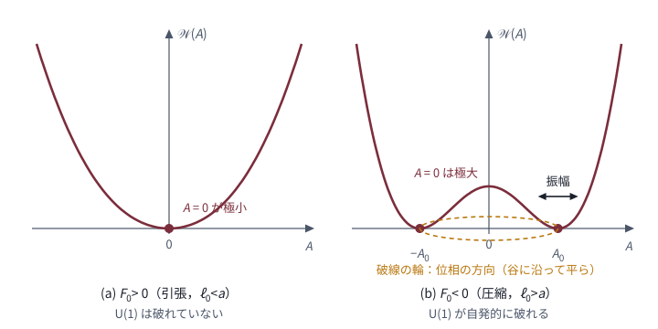 ここからは考察である．$F_0\lt0$ では鎖はらせんに座屈し，位相 $\varphi$ の選び方が U(1) を自発的に破る．位相の一様な回転は「らせん全体を $x$ 軸まわりに剛体回転させる」操作で，エネルギーがかからない．$\varphi(x,t)$ の長波長のゆらぎ（ねじれ波）が NG モード，$A$ のゆらぎ（らせん半径の振動）が振幅モードになる．これが超伝導の位相モードと振幅（Higgs）モードの対応物である．巻き方（同じ巻き方か逆か）の選択は鏡映という離散対称性の破れで，NG モードを伴わない．この描像には，正直に書いておくべき注意が 3 点ある． また，ここでの議論は古典的な零温度のもので，1 次元での熱ゆらぎ・量子ゆらぎによる長距離秩序の破壊（第20章の Mermin–Wagner の定理の箱と同種の問題）は扱っていない． 超伝導とのもう 1 つの違い：ゲージ場．荷電した超伝導体では，位相モードは電磁場と結合してプラズマ振動数まで持ち上がる（Anderson–Higgs 機構，第37章 37.9.4 項）．ギャップのない NG モードとして残るのは中性の超流動の場合である．フォノンは中性なので，対応物としては中性超流動の音波モードや，不整合な電荷密度波の位相モード（第35章 35.6 節）のほうが近い． 以上を，E.7 節の不整合 CDW と準結晶とあわせて表E.37 にまとめる．超伝導・CDW の列は第37章 37.9 節の表37.6 と同じ内容を，この節の観点（破れた連続対称性と，ギャップのないモードの動力学）で並べ直したものである． 表E.37 から読み取ってほしいことは 3 つある．第 1 に，NG モードかどうかは「どの連続対称性が破れているか」で決まり，カイラリティとは別である．直線鎖のカイラルフォノンは，対称な相（常伝導相にあたる）での U(1) の電荷（$S_x=\pm1$）をもった励起に対応し，NG モードという性格は横波音響分枝が並進の破れから来ることに由来する．位相方向が平らで複素場の構造が超伝導と同じであることは正しいが，足りないのは「振幅が 0 でない基底状態」で，それがあって初めて位相モードが NG モードになる．第 2 に，ギャップのないモードがあっても，それが伝搬するとは限らない．超流動・直線鎖・CDW の位相モードは慣性をもって伝搬するが，準結晶のフェイゾンは対応する保存量（共役な運動量）をもたず，長波長では拡散する（E.7 節）．第 3 に，ギャップを開ける機構も系ごとに違う．荷電した超伝導体ではゲージ場（Anderson–Higgs 機構），CDW では不純物のピン止めがギャップを開ける． この節で分かること：高温で Dulong–Petit の値 $3k_B$ を超える比熱が準結晶で報告され，「隠れた高次元の現れ」と言われることがある．しかし原子の運動量は $3N$ 個のままなので，「6 次元だから $6k_B$」という数え方は成り立たない．E.7 節で見たようにフェイゾンは振動子ではないので，「フェイゾン 3 個が等分配で $1.5k_B$ を足す」という数え方も成り立たない．$3k_B$ を超える分は，新しい振動子からではなく，原子の飛び移りによる配置の熱励起から来ると考えるのが自然である． Dulong–Petit の法則（第14章 14.3.6 項）によれば，固体の定積比熱は，電子の寄与を除くと 1 原子あたり $3k_B$ である．ところが Al-Pd-Ru 準結晶では，Nagai ら（2024）の図によれば 1000 K 付近で $4k_B$ を超える（数値は図からの読み取り）．準結晶は 6 次元結晶の 3 次元への切断として記述されるので（E.3〜E.5 節），この超過は「隠れた高次元の現れ」と言われる． まず「6 次元結晶だから $6k_B$」という数え方を退けておく．原子の運動量は $3N$ 個しかないので，古典極限での運動エネルギーの寄与は，ポテンシャルの形にも構造の記述の仕方にもよらず，1 原子あたり $\tfrac32k_B$ に固定される． 補空間は原子が動ける方向ではない（E.3.4 項，E.6 節）ので，補空間の「運動エネルギー」という項はない．比熱が増えるとすれば，第 2 項のポテンシャルエネルギーの温度変化が増えるからである． 式 \eqref{eq:E-9-kinetic} の第 2 項が $\tfrac32k_B$ になるのは，ポテンシャルが調和的なときだけである．1 つの座標について $U\propto\abs x^n$ なら，古典統計で $\langle U\rangle=k_BT/n$ となる（表E.38）． つまり $3k_B$ は厳密な上限ではない．ただし普通の結晶ではずれは小さく，高温の定積比熱は $3k_B$ から数 % ずれる程度である（第30章 30.6.4 項）．Nagai ら（2024）の計算でも，参照物質として計算した結晶 $\mathrm{Al_{13}Ru_4}$ は従来の Dulong–Petit の値をほぼ再現している（$\mathrm{Al_{13}Ru_4}$ は後で出る 1/0 近似結晶とは別の物質である）．表E.38 のとおり柔らかい非調和なら原理的には $3k_B$ を超えうるが，同じ計算で結晶の $\mathrm{Al_{13}Ru_4}$ が Dulong–Petit の値を再現していることからみて，準結晶の $1k_B$ を超える上乗せを 1 つの極小のまわりの非調和性だけで説明するのは難しいと考えられる（筆者らの推論）． 構造が多数の極小（配置 $\alpha$，エネルギー $E_\alpha$）をもち，振動の性質が配置によらないとすると，分配関数と比熱は次のように分かれる． 配置の励起の最も簡単な模型は，基底状態 1 個と，エネルギー $\varepsilon$ にある $g$ 個の励起状態をもつ系である．分配関数 $z=1+g\ee^{-x}$（$x=\varepsilon/k_BT$）から，比熱は となる．$g=1$ が通常の Schottky 比熱である．最大の条件は $\tfrac2x-1+\tfrac{2g\ee^{-x}}{1+g\ee^{-x}}=0$ で，その値を表E.39 と図E.14 に示す．独立な二準位の反転（$g=1$）では，1 個あたりの比熱は最大でも $0.44k_B$ にとどまる．励起先の数 $g$ が大きいほど最大値は高くなり，低温側へ移る． 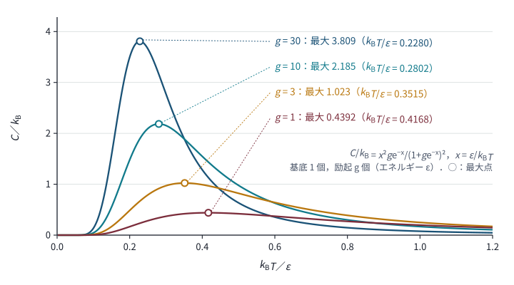 E.7 節の結論を思い出す．準結晶の流体力学では，フェイゾンは伝搬せず，長波長では拡散的に緩和する（Lubensky ら 1985）：$\omega=-\ii D_wq^2$（図E.8）．復元力と慣性で往復する振動子ではなく，共役な運動量をもたないので，「運動エネルギー $\tfrac12k_B$ とポテンシャル $\tfrac12k_B$」という等分配は当てはまらない． 注意：素朴な数え方 $4.5k_B$ とその限界 それでも数えてみる．フェイゾンの弾性エネルギーは $\tfrac12K(\nabla\bm w)^2$ の形をしている（E.6.5 項．$K$ はフェイゾン弾性定数の組み合わせ）．仮に $\bm w$ の 3 成分のモードがすべて熱平衡にあり，この 2 次形式がそのまま使えるなら，共役な運動量はないので運動エネルギーの項はなく，ポテンシャルだけの寄与として 1 原子あたり $3\times\tfrac12k_B$ が加わる．フォノンの $3k_B$（運動 $\tfrac32k_B$＋位置 $\tfrac32k_B$）と合わせて になる．しかしこれは上限にならない．実際，i-Al-Pd-Mn では 1100 K で約 $5k_B$ が報告されている（Fukushima ら 2021）．$\bm w$ は $3N$ 個の原子座標と独立な変数ではなく（自由度は $3N$ のまま），短波長では 2 次形式も成り立たないからである．フェイゾンの実体は原子の飛び移りで（E.3.4 項），その比熱への寄与は式 \eqref{eq:E-9-split} の $C_{\mathrm{config}}$ として，飛び移り先の数とエネルギー分布で決まる．「6 次元だから $6k_B$」と「フェイゾン 3 個が等分配で $+1.5k_B$」は，どちらも存在しない振動子を数えている点で同じ誤りである． Nagai ら（2024）は，Al-Pd-Ru 系の準結晶と近似結晶について，比熱の測定と原子の拡散の計算を組み合わせた．定積比熱 $C_V/k_B$ の値を表E.40 に示す． 他の系．i-Al-Pd-Mn では 700 K 以下は $3k_B$ で，準結晶は高温で急に上昇して 1100 K で約 $5k_B$ に達する．2/1 近似結晶の上昇は少し小さく，1/1 と 1/0 近似結晶はほとんど上昇しない（Fukushima ら 2021．それ以前の測定に Edagawa と Kajiyama 2000 がある）．一方 Al-Cu-Ru では，準結晶だけでなく 1/1 近似結晶も 1100 K で Dulong–Petit の値の約 1.5 倍に達し，大きく幅広いピークが一部の準結晶でだけ 1200 K 付近に報告されている（S. Tamura ら 2021）． ここからは筆者らの見立て（考察と概算）である． 自由度は $3N$ のままなので，低温の格子比熱は音響フォノン 3 本の Debye 則 $C_V\propto T^3$（第14章 14.3 節）で決まる．フェイゾンの飛び移りは熱活性型で，E.7 節で見たように低温では緩和が極端に遅くなり凍結する．したがって，熱活性の飛び移りによる配置の寄与は低温の比熱には現れないと考えられる（筆者らの見立てで，文献では確かめていない）．凍結した乱れが作る局所的なトンネル準位（ガラスの二準位系のようなもの）の寄与の可能性や電子の比熱は，ここでは扱わない．補空間に対応する飛び移りが比熱にはっきり顔を出すのは，飛び移りが起こり始める高温側である． ヒントは本文にある．完全な解答は付録F に載せた（付録F：付録E の解答）． 演習E.1 $C_{5h}$ を回転群の対 $(C_{10},C_5)$ から作る $z$ 軸のまわりの 10 回回転群 $K=C_{10}=\{C_{10}^{\,m}\mid m=0,1,\dots,9\}$ と，その指数 2 の部分群 $H=C_5$（$m$ が偶数の元）を考える．E.1.3 の場合 (c) の作り方 $G=H\cup i\,(K\setminus H)$ について，次の問いに答えよ．(1) $m$ が奇数の元 $C_{10}^{\,m}$ を $-C_{10}^{\,m}$ に置き換えたものが，水平鏡映 $\sigma_h$ と $z$ 軸まわりの $72^\circ$ の倍数の回転の積になることを示し，$-C_{10}^{\,5}=\sigma_h$ を確かめよ．(2) $G$ が反転 $i$ を含まないことを示せ．(3) $G$ の 10 個の元の 3 次元での対角和を $m=0,1,\dots,9$ の順に求め，その和が 0 になることを確かめよ．和が 0 であることは何を意味するか．(4) $C_{5h}$ の HM 記号が $\overline{10}$ である理由を，$G$ の生成元の言葉で説明せよ． ヒント：$-E$ は $z$ 軸まわりの $180^\circ$ 回転 $C_2$ と $\sigma_h$ の積である．対角和は回転 $R(\theta)$ で $1+2\cos\theta$，$-R(\theta)$ で $-(1+2\cos\theta)$．(3) は指標の直交性（第8章）を使う． 演習E.2 Fibonacci 鎖のフェイゾン変位と回折斑点 $S=1$，$L=\tau$，$W=L+S=\tau^2$，$u=0$ とする．(1) 窓を原点に対して対称に置いた場合，すなわち $\varphi=w/W=0.5$ のとき，式 \eqref{eq:E-3-floor} で $k=0$〜13 の $x_k$ と 13 個の間隔の並びを求めよ．$\varphi=0$ と比べて跳んだ原子の番号を挙げ，跳んだ原子の割合が長い鎖では $0.5$ になることと比べよ．(2) 斑点 $(h,h')=(8,5)$ の $Q_\parallel$，$Q_\perp$，$I/I_0$ を式 \eqref{eq:E-3-diff} で求めよ．また $w=0.1W$ のフェイゾン変位でこの斑点の位相がいくら変わるか求めよ．(3) 斑点 $(3,1)$ の強度が 0 になることを示せ．どのような $(h,h')$ で強度が 0 になるか． ヒント：(1) $\lfloor k/\tau+0.5\rfloor$ が $\lfloor k/\tau\rfloor$ より 1 大きくなるのは $\mathrm{frac}(k/\tau)\ge0.5$ の原子．表E.4 の $k/\tau$ の列を使う．(2) $8\tau-5$ ではなく $5\tau-8$ が $Q_\perp$ に入る．位相の変化は $-Q_\perp w$．(3) $\tau-3=-(\tau+2)/\tau^2$ を示す． 演習E.3 6 次元の表現 $T_1\oplus T_2$ を行列と指標で確かめる E.4.3 の 6×6 行列 $C_5$，$C_3$，$C_{2z}$ について，次の問いに答えよ．(1) 3 つの行列のトレースを求めよ．(2) 表E.10 の $T_1$ と $T_2$ の指標の和と比べ，一致することを確かめよ．(3) $T_2$ の $C_5$ の指標 $1-\tau$ を $1+2\cos\theta$ とおいて，$C_5$ が補空間で何度の回転として働くかを求めよ．(4) 6 次元の表現の指標 $\chi=(6,1,1,0,-2)$（類 $E$，$12C_5$，$12C_5^2$，$20C_3$，$15C_2$）について $\frac1{60}\sum_C|C|\chi(C)^2$ を計算し，この表現がいくつの既約表現に分かれるかを答えよ．さらに $T_1$ を含む回数を指標の内積で求めよ． ヒント：(1) トレースは対角成分の和，すなわち「自分自身に移る基底の数（符号付き）」である．(3) $\tau=(1+\sqrt5)/2$，$\cos72^\circ=1/(2\tau)$．(4) 指標の内積の公式は第8章．$\sum_C|C|\chi_\alpha(C)\chi_\beta(C)/60$ は既約表現 $\alpha,\beta$ が同じなら 1，違えば 0． 演習E.4 らせんとグライドの反射条件 E.5.4 の導出の箱の結果「$R\bm h=\bm h$ を満たす反射は，$\bm h\cdot\bm t$ が整数でなければ消える」を使う．(1) $C_5$ で不変な指数が $(h_1,h_2,h_2,h_2,h_2,h_2)$ の形であることを示せ．(2) $P235_1$（$\bm t=\tfrac15(1,0,0,0,0,0)$）で，反射 $(1,0,0,0,0,0)$，$(5,0,0,0,0,0)$，$(5,1,1,1,1,1)$，$(2,1,1,1,1,1)$ のうち消えるものを答えよ．(3) $I235_1$（$\bm t=\tfrac1{10}(1,\dots,1)$）で，反射 $(5,1,1,1,1,1)$，$(1,1,1,1,1,1)$，$(3,1,1,1,1,1)$，$(0,2,2,2,2,2)$ のそれぞれについて，格子による条件 $\sum_ih_i=2n$ とらせんによる条件を調べ，観測されるものを答えよ．(4) $Fn\bar3\bar5$ では，一辺 $2a_{\mathrm{6D}}$ の胞の単位でグライドの並進が $\bm v=\tfrac14(1,\dots,1)$，指数は「すべて偶数か，すべて奇数」である．$m_z$ で不変な反射 $(h_1,h_2,h_3,h_4,h_4,h_3)$ について，$\bm h\cdot\bm v$ が整数になる条件が $h_1+h_2=4n$ に帰着することを示し，$(1,1,1,1,1,1)$ と $(1,3,1,1,1,1)$ のどちらが消えるかを答えよ． ヒント：(1) 符号付き置換は直交行列なので，指数 $\bm h$ にも同じ行列が働く．$C_5$ は第 2〜6 成分を巡回させる．(4) $h_3$ と $h_4$ はどちらも偶数か，どちらも奇数なので，$h_3+h_4$ は偶数である． 演習E.5 指標で確かめる：$T_2$ の最低次の基底と，弾性定数の数 点群 $I$（類 $E$，$12C_5$，$12C_5^2$，$20C_3$，$15C_2$）の指標表（表E.10）を使って，次の問いに答えよ．(1) $T_1\otimes T_1$ の指標を求め，既約分解せよ．E.6.5 の対称積 $[T_1\otimes T_1]=A\oplus H$ と比べて，反対称部分が何であるかを答え，それがフォノンの弾性エネルギーに入らない理由を述べよ．(2) 角運動量 $l=3$ の表現の指標 $\chi_3(\theta)=\sin(7\theta/2)/\sin(\theta/2)$ を，$C_5$（$\theta=72^\circ$），$C_5^2$（$144^\circ$），$C_3$（$120^\circ$），$C_2$（$180^\circ$）で $\tau$ を使って表し，$l=3$ の 7 個の関数を $I$ の既約表現に分解せよ．$T_2$ の基底が 1 次式では作れず，3 次式で初めて現れることを確かめよ．(3) 仮に $\bm w$ が $\uu$ と同じ $T_1$ に属したとすると，フェイゾンひずみ $\partial_iw_j$ は $T_1\otimes T_1$ になる．このとき弾性定数（フォノン，フェイゾン，結合）は全部で何個になるか．実際の 5 個と比べよ． ヒント：$\tau^2=\tau+1$，$2\cos36^\circ=\tau$，$2\cos72^\circ=\tau-1$．含む回数は $n_\alpha=\frac1{60}\sum_C\abs{C}\chi(C)\chi_\alpha(C)$．(3) は E.6.5 の導出のステップ3と同じく，同じ既約表現どうしの組から不変量が 1 個ずつできる． 演習E.6 減衰振動子から拡散モードを取り出す E.7.3 の模型 $m\ddot w+\gamma\dot w+Kq^2w=0$（$K\gt0$）を考える．(1) $w\propto\ee^{-\ii\omega t}$ とおいて $\omega$ の 2 つの根を求めよ．(2) $\gamma^2\gg4mKq^2$ のとき，2 つの根を $mKq^2/\gamma^2$ の 1 次まで展開し，速く減衰する根と遅い根を求めよ．遅い根が $\omega=-\ii D_wq^2$ の形になることを示し，$D_w$ を $K,\gamma$ で表せ．(3) $m=1$，$\gamma=10$，$Kq^2=1$ のとき，厳密な根と (2) の近似を比べよ．(4) i-Al-Pd-Mn について報告されている $D_w=2.2\times10^{-18}\ \mathrm{m^2/s}$ を $\omega=-\ii D_wq^2$ の意味に読み，波長 $\Lambda=100$ Å と $1000$ Å のフェイゾンのゆがみが消える時間 $t_{\mathrm r}=1/(D_wq^2)$（$q=2\pi/\Lambda$）を見積もれ．2 つの時間の比が波長だけで決まることも確かめよ． ヒント：(1) $-m\omega^2-\ii\gamma\omega+Kq^2=0$．(2) $\sqrt{4mKq^2-\gamma^2}=\ii\gamma\sqrt{1-4mKq^2/\gamma^2}$ とし，$\sqrt{1-x}\approx1-x/2$．(4) 文献によって拡散係数の定義に $8\pi^2$ の因子の違いがありうるので，答えは桁の目安として扱う（E.7.4）． 演習E.7 スパイラルの力，振動数，角運動量 質量 $M$ の原子が間隔 $a$ で並ぶ 1 次元鎖で，隣接原子間の横の力定数を $C_t$ とする（E.8.1）．原子 $n$ の平衡位置は $x_n=(n-1)a$ である． (1) 波数 $k=\pi/3a$ のスパイラル変位 $\uu_n=\delta\,(0,\cos kx_n,\sin kx_n)$（周期 $6a$）について，原子 1，2，3 の変位を書き，原子 2 に働く力 $\bm F_2=C_t\bigl[(\uu_1-\uu_2)+(\uu_3-\uu_2)\bigr]$ を両隣の変位から直接計算せよ．その結果から，原子 2 が感じる実効的な力定数 $C_{\mathrm{eff}}$ と振動数 $\omega$ を求め，式 \eqref{eq:E-8-spiral} の $C_{\mathrm{eff}}(k)=4C_t\sin^2(ka/2)$ と一致することを確かめよ．(2) 一般の $k$ の回るスパイラル について，各原子の等速円運動に要る向心力が復元力 $C_{\mathrm{eff}}(k)\delta$ とつり合う条件から $\omega$ を求めよ．さらに原子 1 個の角運動量 $L_x=M(u^y\dot u^z-u^z\dot u^y)$ と，原子 1 個あたりの力学的エネルギーを求めよ．(3) $M=1.3$，$C_t=0.8$，$\delta=0.01$（単位は任意）として，$k=\pi/3a$ と $k=\pi/2a$ の回るスパイラルの $\omega$ と $L_x$ を数値で求めよ． ヒント：(1) $\cos(\pi/3)=1/2$，$\sin(\pi/3)=\sqrt3/2$．$\uu_1+\uu_3$ を先に計算するとよい．(2) E.8.3 の (b) と同じ手順で． 演習E.8 縮重した二準位系の比熱と，準結晶の比熱の上乗せ 基底状態 1 個と，エネルギー $\varepsilon$ にある $g$ 個の励起状態をもつ系を考える（E.9.3）．$x=\varepsilon/k_BT$ とする． (1) 分配関数 $z=1+g\ee^{-x}$ から平均エネルギー $\langle E\rangle$ を求め，比熱が式 \eqref{eq:E-9-twolevel} $C/k_B=x^2g\ee^{-x}/(1+g\ee^{-x})^2$ になることを示せ．(2) 比熱が最大になる条件が $\dfrac2x-1+\dfrac{2g\ee^{-x}}{1+g\ee^{-x}}=0$ であることを示し，$g=1$ のとき $x\simeq2.40$ がこれを満たすこと，そのときの比熱が約 $0.44k_B$ であることを確かめよ．(3) 高温の極限 $x\to0$ での比熱とエントロピーを求めよ．(4) 準結晶の比熱は 1050 K で Dulong–Petit の値を 1 原子あたり約 $1.46k_B$ 上回る（表E.40 の読み取り値）．全原子がこの系を 1 つずつもつとして，比熱の最大値が $1.46k_B$ に届くには $g$ がいくら以上必要か，表E.39 を使って見積もれ． ヒント：(1) $\dd x/\dd T=-x/T$．(2) $\ln C$ を $x$ で微分すると見通しがよい．(4) 表E.39 の $g=3$ と $g=10$ の間にある．数値で詰めるなら $g=5,6$ で最大値を計算する． 補足：この付録で確かめたこと，確かめていないこと 作成日：2026-11-27．本文の数値と群の計算は，3 本の材料（望月研究室での対話から生まれた準結晶・超空間群・スパイラルフォノンの解説）の値を，JavaScriptCore（ブラウザの JavaScript と同じ倍精度の浮動小数点）で独立に計算し直して確かめた．文献は Crossref で書誌を照合し，読めた範囲（本文，要旨，書誌のみ）を区別した． 計算で確かめたこと． 独立の査読．前半（章扉，E.1〜E.5，演習E.1〜E.4 と解答）と後半（E.6〜E.10，演習E.5〜E.8 と解答，参考文献）を，執筆とは別の担当がそれぞれ独立に査読した（式の導き直し，数値の再計算，図の目視，文献の確認度との突き合わせ）．出た指摘（誤り 4 件，不正確 15 件，軽微 17 件）を本文・図・解答に反映した．その一つとして，対話図と図E.2・図E.4 を本文の約束（$+\hat{\bm e}_\perp=(-1,\tau)/\sqrt{\tau+2}$ を上向き，原子のある条件 $0\le x_\perp+w 確かめていないこと． 参考文献
E.3.2 手で確かめる：床関数の式と表
$k$ $k/\tau$ $\lfloor k/\tau\rfloor$ $x_k$（$\varphi=0$） $x_k$（$\varphi=0.1$） 0 0.0000 0 0.000 0.000 1 0.6180 0 1.000 1.000 2 1.2361 1 2.618 2.618 3 1.8541 1 3.618 3.618 4 2.4721 2 5.236 5.236 5 3.0902 3 6.854 6.854 6 3.7082 3 7.854 7.854 7 4.3262 4 9.472 9.472 8 4.9443 4 10.472 11.090 9 5.5623 5 12.090 12.090 10 6.1803 6 13.708 13.708 11 6.7984 6 14.708 14.708 12 7.4164 7 16.326 16.326 13 8.0344 8 17.944 17.944 E.3.3 回折：1 次元なのに指数が 2 個
$(h,h')$ $Q_\parallel$ $Q_\perp$ $I/I_0$ $(0,1)$ 1.737 $+2.810$ 0.0193 $(1,0)$ 2.810 $-1.737$ 0.1127 $(1,1)$ 4.547 $+1.073$ 0.4928 $(2,0)$ 5.620 $-3.473$ 0.0471 $(1,2)$ 6.283 $+3.883$ 0.0336 $(2,1)$ 7.356 $-0.663$ 0.7726 $(3,2)$ 11.903 $+0.410$ 0.9076 $(4,1)$ 12.976 $-4.137$ 0.0199 $(3,3)$ 13.640 $+3.220$ 0.0435 $(4,2)$ 14.713 $-1.327$ 0.3225 $(4,3)$ 16.450 $+1.483$ 0.2304 $(5,2)$ 17.523 $-3.063$ 0.0362 $(5,3)$ 19.260 $-0.253$ 0.9639
E.3.4 補空間方向のずらし：並進とフェイゾン
$\varphi=w/W$ 並び $w$（$S$ 単位） $\varphi=0$ から跳んだ原子 $k$ 跳んだ割合（$10^5$ 原子） 0 SLSLLSLSLLSLL 0 — — 0.1 SLSLLSLLSLSLL 0.2618 8 0.10000 0.2 SLLSLSLLSLSLL 0.5236 3，8 0.20000 0.3 SLLSLLSLSLLSL 0.7854 3，6，8，11 0.30000 0.4 LSLSLLSLSLLSL 1.0472 1，3，6，8，11 0.40001 E.3.5 原子面が滑らかな場合と不連続な場合
滑らか（不整合変調構造） 不連続（Fibonacci 鎖，準結晶） 変調関数 連続（例：$A\sin2\pi(k/\tau+\varphi)$） のこぎり波（跳びがある） 原子面 $E_\perp$ 方向に切れ目なく続く曲線 有限の長さ $W$ の線分 位相 $\varphi$ を変えたときの原子 全原子が少しずつ連続的に動く 一部の原子だけが $L-S$ だけ跳ぶ 位相のずらしの動力学 慣性をもって伝搬しうる位相モード（$\mathrm{ThBr_4}$，CDW） 跳躍の積み重ね（E.7 節で，長波長では拡散になることを示す） E.4 正二十面体群と 6 次元格子
E.4.1 6 本の基底：物理空間，補空間，6 次元
$i=1$ $2$ $3$ $4$ $5$ $6$ $\bm a_i$ $(1,\tau,0)$ $(-1,\tau,0)$ $(0,1,\tau)$ $(\tau,0,1)$ $(\tau,0,-1)$ $(0,1,-\tau)$ $\bm b_i$ $(1,-1/\tau,0)$ $(-1,-1/\tau,0)$ $(0,1,-1/\tau)$ $(-1/\tau,0,1)$ $(-1/\tau,0,-1)$ $(0,1,1/\tau)$
$\bm a_i$（$E_\parallel$） $\tau\bm b_i$（$E_\perp$） $\bm d_1$ $(1,\tau,0)$ $(\tau,-1,0)$ $\bm d_2$ $(-1,\tau,0)$ $(-\tau,-1,0)$ $\bm d_3$ $(0,1,\tau)$ $(0,\tau,-1)$ $\bm d_4$ $(\tau,0,1)$ $(-1,0,\tau)$ $\bm d_5$ $(\tau,0,-1)$ $(-1,0,-\tau)$ $\bm d_6$ $(0,1,-\tau)$ $(0,\tau,1)$ E.4.2 指標で見る：$T_1\oplus T_2$，$72^\circ$ と $144^\circ$
$E$ $12C_5$ $12C_5^2$ $20C_3$ $15C_2$ 役割 $A$ 1 1 1 1 1 $T_1$ 3 $\tau$ $1-\tau$ 0 $-1$ 物理空間 $E_\parallel$（ベクトル $x,y,z$） $T_2$ 3 $1-\tau$ $\tau$ 0 $-1$ 補空間 $E_\perp$ $G$ 4 $-1$ $-1$ 1 0 $H$ 5 0 0 $-1$ 1 $T_1\oplus T_2$ 6 1 1 0 $-2$ 6 次元（整数）
類 $E_\parallel$ のトレース $E_\parallel$ での回転角 $E_\perp$ のトレース $E_\perp$ での回転角 $12C_5$ $\tau=1.618$ $72^\circ$ $1-\tau=-0.618$ $144^\circ$ $12C_5^2$ $1-\tau$ $144^\circ$ $\tau$ $72^\circ$ $20C_3$ 0 $120^\circ$ 0 $120^\circ$ $15C_2$ $-1$ $180^\circ$ $-1$ $180^\circ$ E.4.3 対称操作の 6×6 整数行列
操作 3 次元での作用 6 本の行き先 $C_5$ $\bm a_1$ 軸まわりの $72^\circ$ 回転 $\bm a_1\to\bm a_1$，$\bm a_2\to\bm a_3\to\bm a_4\to\bm a_5\to\bm a_6\to\bm a_2$ $C_3$ $[111]$ 軸，$(x,y,z)\to(z,x,y)$ $\bm a_1\to\bm a_3\to\bm a_4\to\bm a_1$，$\bm a_2\to-\bm a_6$，$\bm a_6\to-\bm a_5$，$\bm a_5\to\bm a_2$ $C_{2z}$ $z$ 軸，$(x,y,z)\to(-x,-y,z)$ $\bm a_1\to-\bm a_1$，$\bm a_2\to-\bm a_2$，$\bm a_3\leftrightarrow-\bm a_6$，$\bm a_4\leftrightarrow-\bm a_5$ 反転 $\bar1$ $(x,y,z)\to(-x,-y,-z)$ $\bm a_i\to-\bm a_i$ 鏡映 $m_z$ $(x,y,z)\to(x,y,-z)$（$=\bar1\times C_{2z}$） $\bm a_1\to\bm a_1$，$\bm a_2\to\bm a_2$，$\bm a_3\leftrightarrow\bm a_6$，$\bm a_4\leftrightarrow\bm a_5$ E.4.4 多面体と基底：立方晶との対比
頂点の方向 $\tau^2\times$（頂点） 頂点の方向 $\tau^2\times$（頂点） $(1,1,1)$ $\bm a_1+\bm a_3+\bm a_4$ $(0,\tau,1/\tau)$ $\bm a_1+\bm a_2+\bm a_3$ $(1,1,-1)$ $\bm a_1+\bm a_5+\bm a_6$ $(0,\tau,-1/\tau)$ $\bm a_1+\bm a_2+\bm a_6$ $(1,-1,1)$ $-\bm a_2+\bm a_4-\bm a_6$ $(1/\tau,0,\tau)$ $\bm a_3+\bm a_4-\bm a_6$ $(-1,1,1)$ $\bm a_2+\bm a_3-\bm a_5$ $(-1/\tau,0,\tau)$ $\bm a_3-\bm a_5-\bm a_6$ $(\tau,1/\tau,0)$ $\bm a_1+\bm a_4+\bm a_5$ $(\tau,-1/\tau,0)$ $-\bm a_2+\bm a_4+\bm a_5$
多面体（頂点の集合） 頂点の数 頂点の例 生成される格子 単位胞の体積 正二十面体（5 回軸 $\pm\bm a_i$） 12 $\bm a_1$ 単純 P（$\mathbb Z^6$） 1 正十二面体（3 回軸） 20 $(1,1,1)$ P 型（$E_\parallel$ で $1/\tau^2$ 倍） 1 二十・十二面体（2 回軸．32 面） 30 $\bm a_1-\bm a_2=(2,0,0)$ 面心 F（成分の和が偶数） 2 切頂二十面体（32 面．サッカーボール） 60 $(0,1,3\tau)=2\bm a_3-\bm a_6$ P 1 正二十面体と正十二面体の頂点を合わせる 32 $\bm a_1$ と $(1,1,1)$ 体心 I（$\mathbb Z^6\cup(\mathbb Z^6+\tfrac12(1,\dots,1))$） 1/2
種類 体積 $|\det(\bm a_i,\bm a_j,\bm a_k)|$ 稜の長さ 1 のとき 個数 組 $(ijk)$ 太い菱面体（prolate） $2\tau^2=5.236$ 0.7608 10 123，126，134，145，156，235，245，246，346，356 平たい菱面体（oblate） $2\tau=3.236$ 0.4702 10 124，125，135，136，146，234，236，256，345，456
立方体の対称性 正二十面体の対称性 独立な基本ベクトル（整数係数で） 3 本 6 本（式 \eqref{eq:E-2-sqrt5}） 最高次の軸の回転の対角和 $1+2\cos90^\circ=1$ 3 次元で $1+2\cos72^\circ=\tau$，6 本の基底で $\tau+(1-\tau)=1$ 最高次の軸の方向のベクトル $[100]$ → 単純立方 $\pm\bm a_i$（12 本）→ 6 次元の P（体積 1） 3 回軸の方向 $\tfrac12[111]$ → 体心立方 $(1,1,1)$ 型（20 本）→ P 型（$1/\tau^2$ 倍．体積 1） 2 回軸の方向 $\tfrac12[110]$ → 面心立方 $\bm a_i\mp\bm a_j$（30 本）→ 6 次元の F（体積 2） 体心格子 3 回軸の方向だけで生じる 5 回軸と 3 回軸を合わせて初めて生じる（体積 1/2） 単位胞 立方体 6 次元立方体（影は菱形三十面体，体積 $20\tau^3$） 空間の埋め方 1 種類，周期的 菱面体 2 種類（体積 $2\tau^2$ と $2\tau$，各 10 方向），非周期的 E.5 6 次元空間群と Hermann–Mauguin 記号
E.5.1 3 つの格子 P，I，F とスケール対称性
格子 定義 単位胞の体積 格子による反射条件（指数 $h_1,\dots,h_6$） P（単純） $\mathbb Z^6$ $a_{\mathrm{6D}}^6$ なし I（体心） $\mathbb Z^6$ に体心 $\tfrac12(1,1,1,1,1,1)$ を加えたもの $\tfrac12a_{\mathrm{6D}}^6$ $\sum_ih_i=2n$ F（面心） 成分の和が偶数の整数点（一辺 $2a_{\mathrm{6D}}$ の胞で見ると $(\tfrac12,\tfrac12,0,0,0,0)$ 型の面心を加えたもの） $2a_{\mathrm{6D}}^6$ （一辺 $2a_{\mathrm{6D}}$ の胞の指数で）$h_i$ がすべて偶数か，すべて奇数
E.5.2 Hermann–Mauguin 記号の読み方：文字はなぜ 3 つか
位置 対応する軸 本数 恒等以外の回転の数 この付録の基底での例 第 1 位置 2 回軸 15 $15\times1=15$ $x,y,z$ 軸 第 2 位置 3 回軸 10 $10\times2=20$ $[111]$ 第 3 位置 5 回軸 6 $6\times4=24$ $\bm a_1,\dots,\bm a_6$
E.5.3 11 個の一覧
No. 短縮記号 完全記号 点群 格子 共型か 特徴的な操作（Seitz 記号） 立方晶での類似 1 $P235$ $P235$ $235$ P 共型 — $P23$ 2 $P235_1$ $P235_1$ $235$ P 非共型 $\{C_5|\tfrac15(1,0,0,0,0,0)\}$ （なし） 3 $I235$ $I235$ $235$ I 共型 — $I23$ 4 $I235_1$ $I235_1$ $235$ I 非共型 $\{C_5|\tfrac1{10}(1,1,1,1,1,1)\}$ （なし） 5 $F235$ $F235$ $235$ F 共型 — $F23$ 6 $F235_1$ $F235_1$ $235$ F 非共型 $\{C_5|\tfrac15(1,1,1,1,1,1)\}$ （なし） 7 $Pm\bar3\bar5$ $P\,2/m\,\bar3\,\bar5$ $m\bar3\bar5$ P 共型 — $Pm\bar3$ 8 $Pn\bar3\bar5$ $P\,2/n\,\bar3\,\bar5$ $m\bar3\bar5$ P 非共型 グライド $\{m_z|\tfrac12(1,1,1,1,1,1)\}$，反転中心 $\tfrac14(1,\dots,1)$ $Pn\bar3$ 9 $Im\bar3\bar5$ $I\,2/m\,\bar3\,\bar5$ $m\bar3\bar5$ I 共型 — $Im\bar3$ 10 $Fm\bar3\bar5$ $F\,2/m\,\bar3\,\bar5$ $m\bar3\bar5$ F 共型 — $Fm\bar3$ 11 $Fn\bar3\bar5$ $F\,2/n\,\bar3\,\bar5$ $m\bar3\bar5$ F 非共型 グライド $\{m_z|\tfrac12(1,1,1,1,1,1)\}$，反転中心 $\tfrac14(1,\dots,1)$ $Fd\bar3$ E.5.4 非共型の 5 個：$5_1$ らせんとグライド $n$
格子 235 の対称性をもつ点（格子並進を除いて） 得られる空間群 P 原点と体心 $\tfrac12(1,1,1,1,1,1)$ の 2 つ $\bm v=\bm 0$ が $Pm\bar3\bar5$，$\bm v=$ 体心が $Pn\bar3\bar5$ I 体心は格子点なので原点と同じ．候補は 1 つ $Im\bar3\bar5$ だけ．「$In\bar3\bar5$」は存在しない F 原点のほかに 3 点（一辺 $2a_{\mathrm{6D}}$ の胞の単位で $(\tfrac12,0,0,0,0,0)$，$\tfrac14(1,1,1,1,1,1)$，$\tfrac14(1,1,1,1,1,-1)$．最後の点は E.5.1 の $\tfrac12(3,1,1,1,1,1)$ と同じ類）．3 点はスケール変換 $M$ で巡回的に移り合う $\bm v=\bm 0$ が $Fm\bar3\bar5$，残りの 3 点はまとめて $Fn\bar3\bar5$
空間群 特徴的な操作 対象の反射 条件 $P235_1$ $\{C_5|\tfrac15(1,0,0,0,0,0)\}$ $(h_1,h_2,h_2,h_2,h_2,h_2)$ $h_1=5n$ $I235_1$ $\{C_5|\tfrac1{10}(1,1,1,1,1,1)\}$ $(h_1,h_2,h_2,h_2,h_2,h_2)$ $h_1+5h_2=10n$ $F235_1$ $\{C_5|\tfrac1{10}(1,\dots,1)\}$（一辺 $2a_{\mathrm{6D}}$ の胞の単位） 同上（一辺 $2a_{\mathrm{6D}}$ の胞の指数） $h_1+5h_2=10n$ $Pn\bar3\bar5$ $\{m_z|\tfrac12(1,1,1,1,1,1)\}$ $(h_1,h_2,h_3,h_4,h_4,h_3)$ $h_1+h_2=2n$ $Fn\bar3\bar5$ $\{m_z|\tfrac14(1,\dots,1)\}$（一辺 $2a_{\mathrm{6D}}$ の胞の単位） 同上（一辺 $2a_{\mathrm{6D}}$ の胞の指数） $h_1+h_2=4n$
空間群 $\{C_5|\bm t\}$ の並進 $\bm t$ $\{C_3|\bm t\}$ の並進 $\bm t$ $P235_1$ $\tfrac15(1,0,0,0,0,0)$ $\tfrac15(-1,-1,0,1,1,0)$ $I235_1$ $\tfrac1{10}(1,1,1,1,1,1)$ $\tfrac1{10}(-1,1,-1,-3,3,-1)$ $F235_1$ $\tfrac15(1,1,1,1,1,1)$ $\tfrac15(0,1,-2,2,-1,0)$ E.5.5 なぜ 11 個で尽きるか
点群 非共型の自由度 P I F 計 $235$（回転だけ） 5 回軸のらせんだけ（2 回軸・3 回軸に由来する非共型はない） 2 2 2 6 $m\bar3\bar5$（反転あり） 反転中心の位置だけ（反転で $5_1$ の類が $5_4$ の類に移るので，らせんは反転と両立しない） 2 1 2 5 合計 11
格子 $p=2$ $p=3$ $p=5$ P 1 0 1 F 2 0 1 I 0 0 1
E.5.6 部分群の関係：対称性が下がるとき
群（位数） 極大部分群（指数） $m\bar3\bar5$，$I_h$（120） $235$（2），$m\bar3$（5），$\bar5m$（6），$\bar3m$（10） $235$，$I$（60） $23$（5），$52$（6），$32$（10） $m\bar3$，$T_h$（24） $23$（2），$mmm$（3），$\bar3$（4） $\bar5m$，$D_{5d}$（20） $52$（2），$5m$（2），$\bar5$（2），$2/m$（5） $\bar3m$，$D_{3d}$（12） $32$（2），$3m$（2），$\bar3$（2），$2/m$（3）
E.5.7 実物質との対応
格子の型 物質 根拠 F 型 i-Al-Cu-Fe，i-Al-Pd-Mn Ebalard と Spaepen（1989），Fujita ら（2013） P 型 i-Al-Cu-Li Kortan ら（1987）：6 個の指数で単純型の準格子として指数付けできる P 型とされる i-Cd-Yb（Tsai 型） 同族の R–Cd 準結晶（R は希土類．Goldman ら 2013）とともに P 型とされる．原子構造は Takakura ら（2007）が決めた I 型 実験での報告は知られていない Engel ら（2015）は計算機シミュレーションでのみ得た E.6 補空間の自由度：フォノン変位とフェイゾン変位
E.6.1 密度波の位相を数える
E.6.2 局所同型と，原子の尺度での飛び移り
E.6.3 手で確かめる：2 つの密度波 A，B
E.6.4 $\uu$ と $\bm w$ の対称性 — 第 3 の種類のベクトル
量 $I_h$ の既約表現 反転 物理空間の $72^\circ$ 回転に対して $C_5$ の指標 フォノン変位 $\uu$（極性ベクトル） $T_{1u}$ 奇 $72^\circ$ 回る $\tau=1+2\cos72^\circ$ 回転（軸性ベクトル） $T_{1g}$ 偶 $72^\circ$ 回る $\tau$ フェイゾン変位 $\bm w$ $T_{2u}$ 奇 $144^\circ$ 回る $1-\tau=1+2\cos144^\circ$
E.6.5 弾性自由エネルギーと 5 個の弾性定数
ひずみの既約分解 2 次の不変量 弾性定数 準結晶：フォノン（$u_{ij}$，6 成分） $A\oplus H$ 2 $\lambda,\mu$ 準結晶：フェイゾン（$\partial_iw_j$，9 成分） $G\oplus H$ 2 $K_1,K_2$ 準結晶：結合 $H$ どうし 1 $K_3$ 準結晶：合計 5 立方晶（$O_h$）：フォノン $A_{1g}\oplus E_g\oplus T_{2g}$ 3 $C_{11},C_{12},C_{44}$
E.6.6 回転型の自由度はフェイゾンとは別である
E.7 南部–Goldstone モードとしてのフォノンとフェイゾン
E.7.1 復習：Goldstone の定理と音響フォノン
E.7.2 準結晶の数え方：伝搬する 3 本と拡散する 3 本
フォノン変位 $\uu$ フェイゾン変位 $\bm w$ 一様なずらし 空間の並進（ハミルトニアンの厳密な対称性） 局所同型な構造への移り変わり（粗視化した自由エネルギーの縮退） 原子の動き 全原子が一様に連続的に動く 一部の原子が飛び移る 復元力 $\propto q^2$（$\lambda,\mu$） $\propto q^2$（$K_1,K_2$） 共役な保存量 運動量 ない 運動方程式 $\rho_{\mathrm m}\ddot{\uu}=$（弾性力） $\partial_t\bm w=-\Gamma_w\,\delta F/\delta\bm w$ 分散 $\omega=cq$（伝搬） $\omega=-\ii D_wq^2$（拡散） モードの数 3（縦 1，横 2） 3 低温 残る（$T^3$ 則の比熱，E.9 節） 飛び移りが止まり凍結する（E.7.4） E.7.3 減衰振動子で比べる：振動，成長，拡散，不安定
場合 $\omega$（近似形） 数値例 時間変化 $\gamma=0$，$K\gt0$ $\pm q\sqrt{K/m}$ $\pm1$ 振動する（通常のフォノン） $\gamma=0$，$K\lt0$ $\pm\ii q\sqrt{\abs K/m}$ $\pm1\ii$ 片方が指数関数的に成長する（虚数振動数のフォノン） $\gamma$ 大，$K\gt0$ $-\ii(K/\gamma)q^2$ と $-\ii\gamma/m$ $\gamma=10$：$-0.1010\ii$，$-9.8990\ii$ 減衰するだけ（フェイゾン．$D_w=K/\gamma$） $\gamma$ 大，$K\lt0$ $+\ii(\abs K/\gamma)q^2$ と $-\ii\gamma/m$ $\gamma=10$：$+0.0990\ii$，$-10.0990\ii$ 成長する（フェイゾンの不安定） E.7.4 2 つの時間尺度と低温での凍結
現象 系と温度 時間 活性化エネルギー 長波長のフェイゾンの緩和（実験） i-Al-Pd-Mn，650 °C 緩和時間は波長の 2 乗に比例．$D_w$ から見積もると，波長 100 Å で 1 s 程度，1000 Å で $10^2$ s 程度（目安） $2.3\pm1$ eV と報告 個々の原子の飛び移り（実験） i-Al-Cu-Fe 準弾性散乱のエネルギー幅にして数 μeV から約 1 meV（時間にしておよそ 1 ps から 0.3 ns） — Al の飛び移り（計算） Al-Pd-Ru の近似結晶（障壁は 1/1 近似結晶の拡散係数から），1000 K 約 100 ps ごと 約 0.52 eV
E.7.5 同じ「phason」の 2 つの意味：不整合 CDW と準結晶
不整合 CDW の位相モード（第35章） 準結晶のフェイゾン（本付録） ずらす量 CDW の位相 $\phi$（1 成分） 補空間の変位 $\bm w$（3 成分，$T_{2u}$） 変調関数（原子面） 滑らか（正弦波） 不連続（のこぎり波，有限の原子面） 一様なずらしでの原子の動き 全原子が少しずつ連続的に動く 一部の原子が飛び移る 慣性 ある（Lee–Rice–Anderson の有効質量 $m^*$） ない（共役な運動量がない） 分散（長波長） $\omega_\phi=v_\phi q$（伝搬する） $\omega=-\ii D_wq^2$（拡散する） $q=0$ での振る舞い ピン止めで有限の振動数 $\omega_0$ 熱活性の飛び移りで緩和．低温で凍結 観測 赤外・マイクロ波の吸収，巨大な誘電率 散漫散乱，コヒーレント X 線のスペックルの時間変化 振幅モード ある（Raman 活性） 対応するものは本付録では扱わない E.7.6 フェイゾン弾性の不安定と，エントロピーによる安定化
E.8 1 次元鎖で確かめる：横波フォノン，円偏光，対称性の破れ
E.8.1 模型と運動方程式
$k$ 隣との位相因子 $\ee^{\ii ka}$ 変位の周期 $C_{\mathrm{eff}}(k)$ $\omega_t$ $0$ $1$ —（一様な並進） $0$ $0$ $\pi/2a$（スパイラル，E.8.2） $\ii$ $4a$ $2C_t$ $\sqrt{2C_t/M}$ $\pi/a$（隣どうしが逆向き） $-1$ $2a$ $4C_t$ $2\sqrt{C_t/M}$
E.8.2 スパイラル（円偏光）モード
$n$ $kx_n$ $\tilde{\uu}_n$ $\uu_n=\mathrm{Re}\,\tilde{\uu}_n$ 1 $0$ $\delta(0,1,-\ii)$ $(0,\delta,0)$ 2 $\pi/2$ $\delta(0,\ii,1)$ $(0,0,\delta)$ 3 $\pi$ $\delta(0,-1,\ii)$ $(0,-\delta,0)$ 4 $3\pi/2$ $\delta(0,-\ii,-1)$ $(0,0,-\delta)$ E.8.3 時間発展：立っているスパイラルと回るスパイラル
E.8.4 非調和項：縦と横の結合
ポテンシャル・運動 $\delta/a=0.1$ $0.15$ $0.2$ $0.3$ (i) 回る 育たない 育たない 育つ（$0.03$〜$0.04$） 育つ（$0.13$） (i) 立っている 育たない 育たない 育たない 育つ（$0.02$〜$0.03$） (ii) 回る 育たない 育たない 育たない 育つ（$0.07$） (ii) 立っている 育たない 育たない 育たない 育つ（$0.12$〜$0.18$）
横波 成分 源の $(q,\Omega)$ 縦 回るスパイラル 1 個 $(k,\bm\varepsilon_+)$ のみ 交差項なし 縦波なし 立っているスパイラル $(k,\bm\varepsilon_+)+(-k,\bm\varepsilon_-)$ $(0,\ 2\omega)$ 一様な $2\omega$ の張力振動 直線偏光の進行波 $(k,\bm\varepsilon_+)+(k,\bm\varepsilon_-)$ $(2k,\ 2\omega)$ 縦の第 2 高調波 同じ向きの円偏光 2 個 $(k_1,\bm\varepsilon_+)+(k_2,\bm\varepsilon_+)$ $(k_1-k_2,\ \omega_1-\omega_2)$ 差の振動数の縦波 E.8.5 これは南部–Goldstone モードか
E.8.6 らせんへの座屈：U(1) が自発的に破れるとき
E.8.7 対応表：何が破れ，何が残るか
超伝導・超流動 直線鎖（$\zeta=0$） らせんに座屈した鎖 不整合 CDW（第35章 35.6 節） 正二十面体準結晶（E.6，E.7 節） 秩序変数 $\psi=\abs\psi\ee^{\ii\varphi}$ $\zeta=u^y+\ii u^z$（基底状態は $\zeta=0$） $\zeta_n=A_0\ee^{\ii(kx_n+\varphi)}$ $\Delta\ee^{\ii\phi}$（$\phi$ は CDW の位置） 密度波の振幅 $\rho_{\GG}=\abs{\rho_{\GG}}\ee^{\ii\varphi_{\GG}}$ 破れた連続対称性 U(1)（$\psi\to\ee^{\ii\alpha}\psi$） $y,z$ の並進（$\zeta\to\zeta+c$）．U(1) 回転は破れていない（ほかに $x$ の並進も破れ，縦波音響を与える） U(1) 回転（$x$ 軸まわり）と $y,z$ の並進 並進（CDW の位相のずらし $\phi\to\phi+$ 定数） 3 次元の並進と補空間方向のずらし（連続パラメータ 6 個） 位相にあたる量 $\varphi$ （U(1) については無意味） らせんの位相 $\varphi$ $\phi$ $\varphi_{\GG}\to\varphi_{\GG}-(\GG_\parallel\cdot\uu+\GG_\perp\cdot\bm w)$ の $\uu$ と $\bm w$ 有効ポテンシャル 転移温度以下でソンブレロ型 椀形（$F_0\gt0$，引張） ソンブレロ型（$F_0\lt0$，圧縮） ソンブレロ型（谷の底に沿って $\phi$ が変わる） $\uu$，$\bm w$ の一様なずらしで自由エネルギーが変わらない ギャップのないモード 位相モード U(1) についてはなし．横波音響フォノン 2 本は並進の NG モード らせんのねじれ波（$\varphi(x,t)$ のゆらぎ）．並進の破れによる音響フォノンも残る 位相モード 音響フォノン 3 本（$\uu$）とフェイゾン 3 個（$\bm w$） その動力学 中性の超流動では音波．荷電した超伝導体ではプラズマ振動数へ（Anderson–Higgs） 伝搬する音波 伝搬すると考えられる（分散は未導出） 慣性をもって伝搬する．不純物のピン止めで有限の振動数 フォノンは伝搬（$\omega=cq$）．フェイゾンは長波長で拡散（$\omega=-\ii D_wq^2$） 振幅モード Higgs（振幅）モード 区別がない（$\zeta$ の 2 成分は同等で，どちらも横波） らせん半径の振動（$A$ のゆらぎ） 振幅モード（Raman 活性） （この付録では扱わない） U(1) の保存量をもつ励起 定まらない（粒子数が揺らぐ） カイラルフォノン（$S_x=\pm1$） 回転だけでは分類できない（らせん操作との組で分類できると考えられる．確かめていない） — — E.9 比熱：補空間は $3k_B$ を増やすか
E.9.1 問い：6 次元なら $6k_B$ か
E.9.2 $3k_B$ は調和近似の値である
$n$ $\langle U\rangle/k_BT$ 1 座標あたりの比熱（運動 $\tfrac12k_B$＋位置 $\tfrac1nk_B$） 意味 1 1 $1.5\,k_B$ 柔らかくなる非調和（$n\lt2$）では $\tfrac12k_B$ を上回る 2 1/2 $1.0\,k_B$（3 方向で $3k_B$） 調和．Dulong–Petit の値 4 1/4 $0.75\,k_B$ 硬くなる非調和．$3k_B$ を下回る E.9.3 振動と配置：比熱を 2 つに分ける
縮重度 $g$ 最大値 $C/k_B$ そのときの $x=\varepsilon/k_BT$ $k_BT/\varepsilon$ 1 0.4392 2.399 0.4168 3 1.023 2.845 0.3515 10 2.185 3.569 0.2802 30 3.809 4.386 0.2280 E.9.4 フェイゾンは振動子ではない
E.9.5 実験と計算：Nagai ら（2024）の報告
試料 実験 1000 K 実験 1050 K 計算 1000 K 計算 1100 K 準結晶 4.23 4.46 計算なし 計算なし 2/1 近似結晶 3.65 3.70 3.31 3.45 1/1 近似結晶 測定なし 測定なし 3.31 3.41 1/0 近似結晶 3.31 3.30 約 3.28 —
E.9.6 見立て：上乗せの正体は配置の励起
$T$ (K) 500 600 700 800 900 1000 1050 $C_V/k_B-3$ 0 0.05 0.20 0.45 0.80 1.23 1.46 E.9.7 低温側：フェイゾンは凍結している
E.9.8 第一原理計算との接点
E.10 まとめと演習
E.10.1 まとめ
E.10.2 演習問題